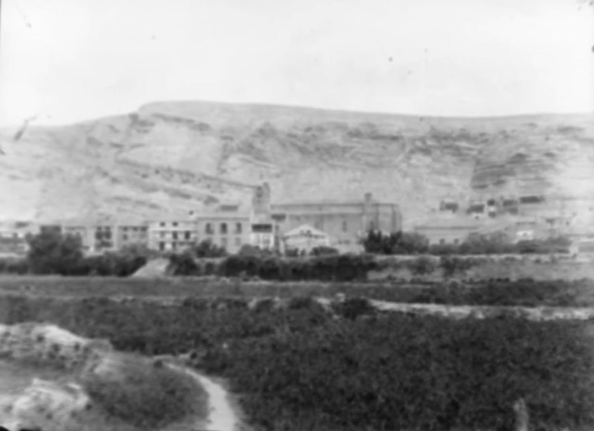
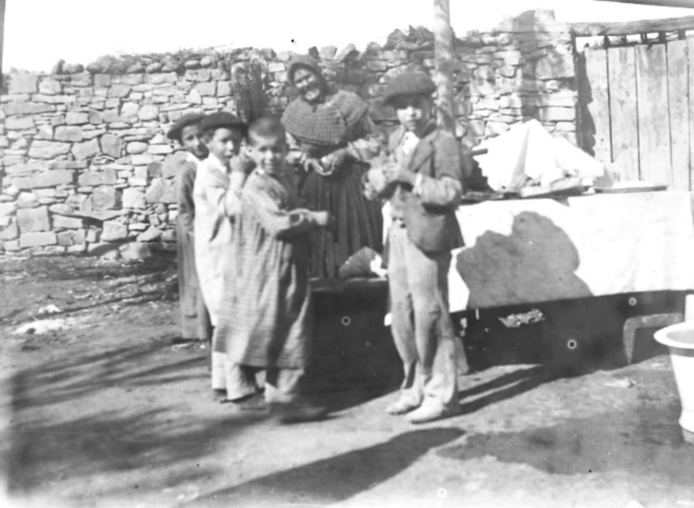
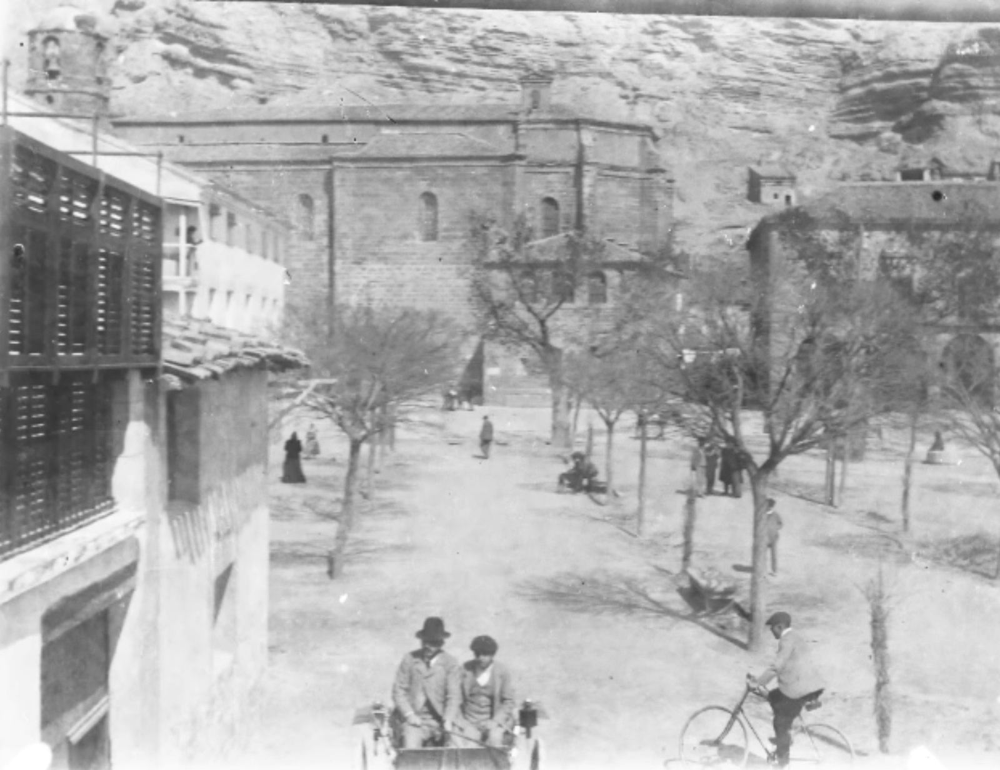
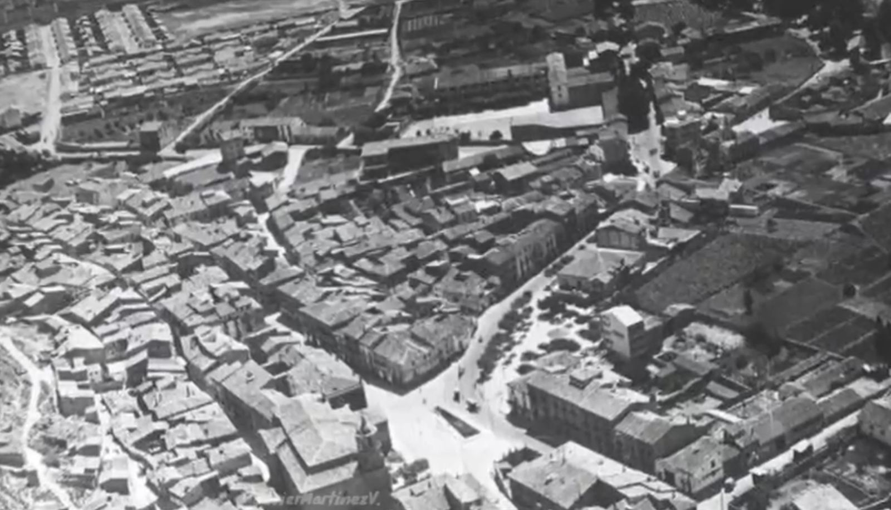
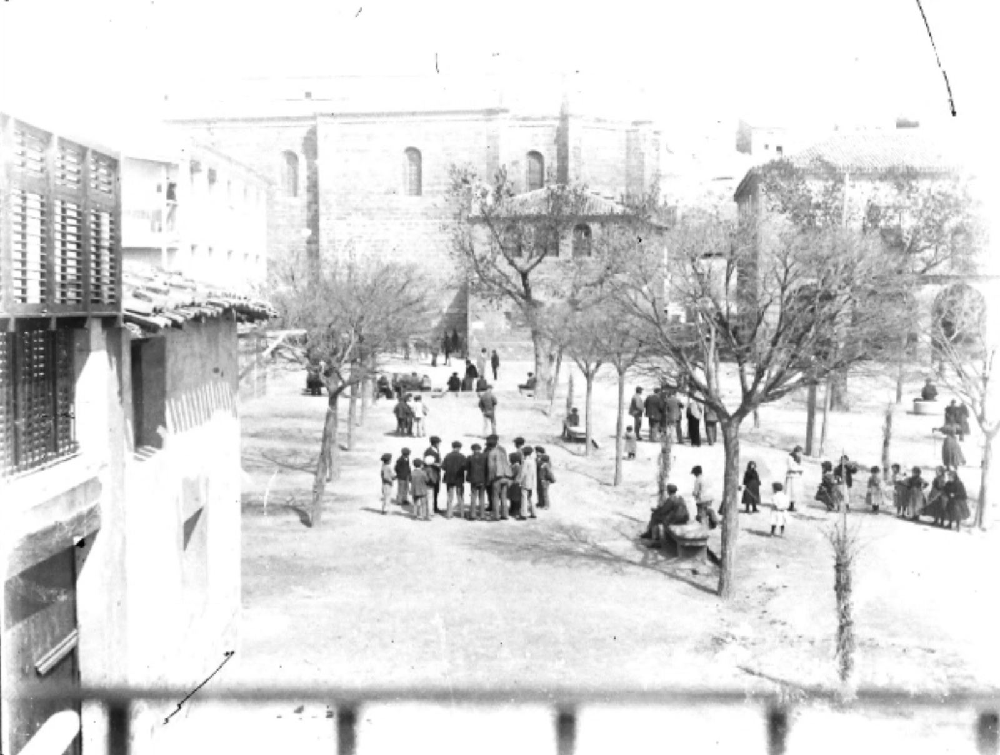
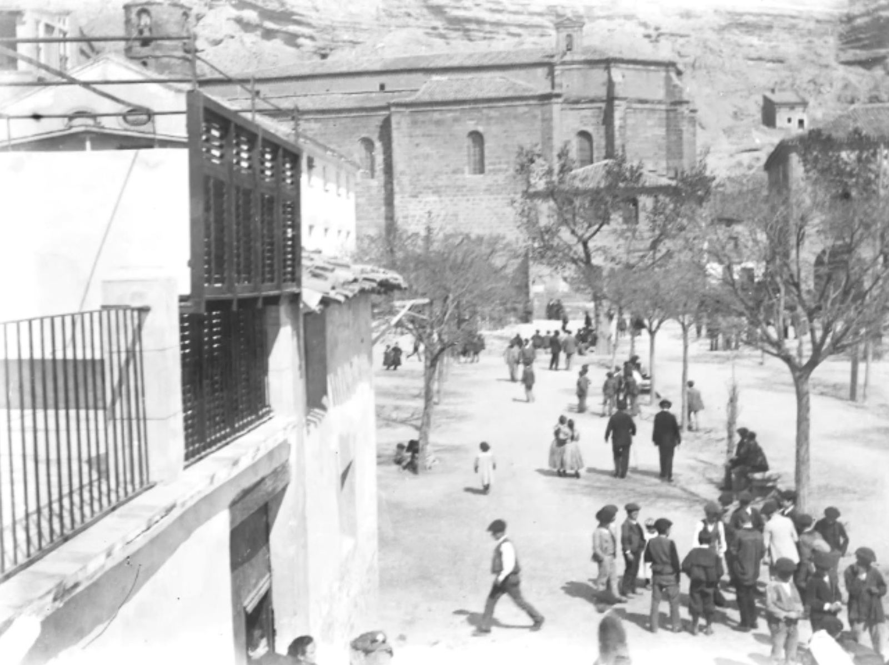
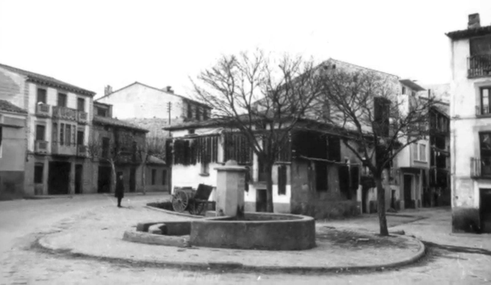

Alojado temporalmente en joaquinromero.com para revisión del Ayuntamiento de Lodosa, del Colectivo de Familiares y de Gurugú Taldea. Pendiente: depurar los datos de personas vivas, confirmar la autoría de las fotografías, revisar las contradicciones del capítulo, traducir al euskera y trasladar el sitio a un dominio del Ayuntamiento.
Lodosa · 1936–1937
Ciento treinta y siete vecinas y vecinos asesinados
Aquí vivieron.
Trabajaban la tierra, el río y los oficios del pueblo. Eran jornaleros, labradores, pescadores, albañiles, pelotaris, maestros, un peluquero, un cartero, un sastre. Muchos vivían en las cuevas de la Peña. Tenían hijos pequeños, hermanos, vecinos, deudas y proyectos.
En julio de 1936, unos y otros decidieron que sus ideas les costaran la vida. A ciento treinta y siete los sacaron de sus casas, de la cárcel o del trabajo, y los mataron en cunetas, tapias y fosas de Navarra, La Rioja, Zaragoza y Soria. A sus familias les quitaron además el pan, el nombre y el derecho a llorarlos. Durante cuarenta años no se pudo decir en voz alta lo que aquí está escrito.
Estas piedras no piden venganza. Piden que se les nombre, y que quien pase por encima de ellas sepa que este suelo fue el suyo: su calle, su plaza, su pueblo.
Ciento treinta y siete nombres. Ninguno de menos.
Las familias de Lodosa
Los nombres
En el orden en que figuran en el libro. Toque un nombre para leer su biografía. Algunas describen violencia y humillaciones.
CELEDONIO ABADÍA ARRASTIA. 2-03-1903. ASESINADO EN AUSEJO. AUSEJON ERAILDA. VERANO 1936.
Lodosa, 2 de marzo de 1903-Ausejo (La Rioja), verano de 1936.
Celedonio Abadía Arrastia nació en Lodosa el 2 de marzo de 1903. Fue hijo de Gregorio Abadía Sáinz (1859-1926) y Dominica Arrastia Martínez (1866-1934), ambos naturales de la localidad ribera. El matrimonio tuvo diez hijos, de los cuales sobrevivieron ocho, ocupando Celedonio el octavo lugar en el orden de nacimiento. Jornalero de profesión, militó en la CNT, como sus hermanos. Tras el golpe de Estado de julio de 1936, fue detenido y conducido al municipio riojano de Ausejo, donde fue asesinado. Celedonio era hermano de Mateo y Marcos Bruno Abadía Arrastia, tío carnal de Eugenio Abadía Antón y primo carnal de Julián Abadía Hernández, todos ellos igualmente asesinados en el contexto represivo de 1936.
BRUNO ABADÍA ARRASTIA. 6-10-1905. ASESINADO EN AUSEJO. AUSEJON ERAILDA. VERANO 1936.
Lodosa, 6 de octubre de 1905-Ausejo (La Rioja), verano de 1936.
Bruno Abadía Arrastia nació en Lodosa el 6 de octubre de 1905. Fue hijo de los lodosanos Gregorio Abadía Sáinz (1859-1926) y Dominica Arrastia Martínez (1866-1934). El matrimonio tuvo diez hijos, de los cuales sobrevivieron ocho, ocupando Bruno el noveno lugar. Permaneció soltero. Jornalero de profesión, militaba en la CNT. En junio de 1931 era vocal de la Sociedad de Oficios Varios. Tras el golpe de Estado fue detenido y finalmente ejecutado en el término riojano de Ausejo en algún momento del verano de 1936. Su muerte fue inscrita posteriormente a consecuencia de la “pasada lucha nacional contra el marxismo”. La represión tuvo un carácter extensivo dentro de su familia. Bruno era hermano de Mateo y Celedonio Abadía Arrastia, tío carnal de Eugenio Abadía Antón y primo carnal de Julián Abadía Hernández, todos ellos igualmente asesinados en 1936.
MATEO ABADÍA ARRASTIA. 21-09-1894. ASESINADO EN DICASTILLO. DEIKAZTELUN ERAILDA. 1936-09-24.
Lodosa, 21 de septiembre de 1894- Dicastillo, 24 de septiembre de 1936.
Mateo Abadía Arrastia nació en Lodosa el 21 de septiembre de 1894. Hijo de Gregorio Abadía Sáinz (1859-1926) y Dominica Arrastia Martínez (1866-1934), tuvo diez hermanos, de los que sobrevivieron ocho, ocupando Mateo el cuarto lugar. Era labrador y estuvo domiciliado en la calle San Juan, número 66, en Lodosa. Contrajo matrimonio con Felipa Lizanzu Carrascal en la parroquia de Lodosa el 11 de octubre de 1918. En 1936 era viudo y se hacía cargo de sus cuatro hijos todavía menores: Concepción, de 16 años, Julia, de 14, María Piedad, de 10 y Gregorio, de 3. Fue asesinado en Dicastillo el 24 de septiembre de 1936, a los 42 años de edad, siendo enterrado en el cementerio de dicha localidad. Sus hermanos Celedonio y Marcos Bruno Abadía Arrastia, su tío carnal de Eugenio Abadía Antón y su primo carnal de Julián Abadía Hernández también fueron asesinados.
EUGENIO ABADÍA ANTÓN. 15-11-1918. ASESINADO EN AUSEJO. AUSEJON ERAILDA. VERANO 1936.
Lodosa, 15 de noviembre de 1918-Ausejo (La Rioja), verano de 1936.
Eugenio Abadía Antón nació en Lodosa el 15 de noviembre de 1918. Fue hijo de Víctor Abadía Arrastia (1889-1948) y Felicitas Antón Jiménez (1893-1922), ambos naturales de Lodosa. El matrimonio tuvo, además, un hijo, Jesús, fallecido a los diez días de nacer en 1916. Su madre murió en 1922, a los 28 años, tras otro parto en el que la criatura nació muerta, quedando Eugenio huérfano de madre a los tres años de edad. En el momento de su muerte, Eugenio Abadía era soltero. Trabajaba como jornalero y estaba afiliado a la CNT. Tenía 17 años de edad cuando fue asesinado en Ausejo, junto a sus tíos Celedonio y Marcos Bruno Abadía Arrastia. Otro tío, Julián Abadía Hernández, también fue asesinado, en su caso en Pamplona.
JULIÁN ABADÍA HERNÁNDEZ. 1885. ASESINADO EN PAMPLONA. IRUÑEAN ERAILDA. 1937-03-01.
Cárcar, c. 1885-Pamplona, 1 de marzo de 1937.
Julián Abadía Hernández nació en Cárcar en 1885. Aunque no era natural de Lodosa, se crió y residió en esta localidad. Era hijo de Lorenzo Abadía Sáinz (1857-1941), natural de Lodosa, y de Deogracias Agustina Hernández Martínez (1846-1911), oriunda de Cárcar. Tuvo dos hermanas: Bonifacia, nacida en Cárcar y casada en Lodosa con Quintín Erdociáin Salvatierra, y Modesta, nacida en Lodosa en 1887 y casada en Pamplona con Cristóbal Gil Noguera. Julián era labrador y contrajo matrimonio en Lodosa el 29 de mayo de 1911 con Catalina Perusqui Medrano (Cárcar, 1890-Lodosa, 1932). Tuvieron siete hijos: Agustina (1915-2008), Juan (nacido en 1917 y fallecido en el frente en Tremp el 3 de noviembre de 1938 tras su alistamiento forzoso en la Legión, Tercio Sanjurjo), Jesús (nacido en 1919), Marcelino (1921-1923), Francisca (nacida 1924), José María (1927-1928) y Teresa (1929-1933). Al enviudar en 1932, Julián quedó a cargo de cinco hijos menores de edad, que contaban entonces con aproximadamente 3, 8, 13, 15 y 17 años.
Abadía fue detenido tras el golpe de Estado de julio de 1936 y procesado bajo la acusación de haber participado en los grupos que se alzaron el 19 de julio en Lodosa. Los testimonios incorporados a la causa no acreditaban actividad armada efectiva. Sin embargo, en uno de ellos se señalaba que portaba únicamente una navaja de afeitar. En el curso del procedimiento intervinieron autoridades vinculadas a la sublevación, entre ellas Luciano Aramendía Díaz, quien remitió informe al juez el 28 de enero de 1937. Julián ingresó en la Cárcel Provincial de Pamplona el 19 de noviembre de 1936. Fue juzgado en Pamplona y condenado a muerte. La sentencia se ejecutó el 1 de marzo de 1937 a las 7:30 horas en la Vuelta del Castillo de Pamplona. La defunción fue inscrita por orden judicial bajo la causa de “heridas producidas por arma de fuego”. Fue el último vecino de Lodosa en ser ejecutado.
En el marco de la represión, su familia se vio gravemente afectada, pues era primo carnal de Mateo, Celedonio y Marcos Bruno Abadía Arrastia, así como tío de Eugenio Abadía Antón, todos ellos igualmente asesinados.
LUIS AGUIRRE ARONA. 08-08-1915. ASESINADO EN ASTRÁIN. AZTERAINEN ERAILDA. 1936-08-13.
Sopuerta (Bizkaia), 8 de agosto de 1915-Astráin, 13 de agosto de 1936.
Hijo de Severiano Aguirre y Nicanora Arona, Luis Aguirre Arona nació en la localidad vizcaína de Sopuerta el 8 de agosto de 1915. Al estallar la sublevación militar en julio de 1936, estaba soltero y era jornalero. Su vida estaba ligada a la lucha obrera anarcosindicalista a través de la CNT. Fue asesinado el 13 de agosto de 1936 en el término concejil de Astráin, junto con otros vecinos de Lodosa, como Pedro Gil Abadía y José María Remírez Roldán, todos ellos afiliados a la CNT.
ÁNGEL ALONSO VALERIO. 2-10-1903. ASESINADO EN MENDAVIA. MENDAVIAN ERAILDA. 1936-07-20.
Mendavia, el 2 de octubre de 1903-Mendavia, c. 20 de julio de 1936.
Ángel Alonso Valerio, conocido por los apodos de “Pólvora” o “Polvorilla”, nació en Mendavia el 2 de octubre de 1903. Fue hijo de Ángel Alonso Miranda (Mendavia, 2 de octubre de 1872) y Antonia Valerio Pavía (Mendavia, 13 de junio de 1865). Antonia había enviudado previamente, teniendo una hija de su primer matrimonio con Miguel Alonso Miranda; posteriormente contrajo matrimonio con Ángel, hermano del anterior. Ángel Alonso era sirviente y jornalero, se trasladó a Lodosa, donde también ejerció como panadero. Permaneció soltero.
Con el golpe de Estado, el 19 de julio intentó huir de Lodosa y refugiarse en Mendavia, según testimonio recogido por José María Jimeno Jurío. Fue localizado por individuos procedentes de Lodosa, que lo detuvieron y le dieron muerte en los primeros momentos de la sublevación. Su cadáver fue hallado en el paraje de “La Caballera”, en la carretera de Lodosa, a unos dos kilómetros de Mendavia. Vieron el cuerpo al día siguiente, ya desfigurado. Fue inhumado en el cementerio de Mendavia por el enterrador de la localidad.
PABLO ANTÓN MARTÍNEZ. 26-06-1906. ASESINADO EN ZARAGOZA (TERCIO DE SANJURJO). ZARAGOZAN ERAILDA. 1936-10-04.
Lodosa, 26 de junio de 1906- Zaragoza, 4 de octubre de 1936.
Pablo Antón Martínez nació en Lodosa el 26 de junio de 1906. Era hijo de Fidel Antón Ilardia (Lodosa, 21 de agosto de 1869-Lodosa, 23 de noviembre de 1906) y Faustina Martínez Pérez (Lodosa, 7 de octubre de 1880-Lodosa, 15 de julio de 1946). Su padre falleció cuando Pablo contaba con cinco meses de edad, dejando a su madre viuda con tres hijos de corta edad. De profesión labrador, contrajo matrimonio en Lodosa el 4 de abril de 1928 con Antonia Erdociáin Hierro (Lodosa, 17 de enero de 1908-Lodosa, 10 de septiembre de 1988). El matrimonio tuvo tres hijos: Pablo y dos gemelas, María Esther, fallecida a los cuatro días de nacer, y Rosa. A su muerte Pablo tenía 8 años y Rosa 2.
El 9 de septiembre de 1936 fue incorporado de forma forzosa a las filas sublevadas, en un proceso de “alistamiento voluntario” en la Segunda Bandera del Tercio de Sanjurjo, consignando en el Ayuntamiento de Lodosa su filiación “como CNT”. Lo fusilaron, como a tantos otros paisanos, en Zaragoza el 4 de octubre de 1936 y sus restos fueron inhumados en la fosa del cementerio de Torrero. Aunque natural de Lodosa, en el momento de su defunción figuraba como vecino de Los Arcos. Su muerte fue inscrita debido a la “pasada lucha nacional contra el marxismo”.
CEFERINO ANTÓN ZALDUENDO. 28-08-1913. ASESINADO EN VILLAMAYOR DE MONJARDÍN. DEIUN ERAILDA. 1936-08-11.
Lodosa, 28 de agosto de 1913- Villamayor de Monjardín, 11 de agosto de 1936.
Ceferino Antón Zalduendo nació en Lodosa el 28 de agosto de 1913. Fue hijo de Felipe Antón Etayo (Sesma, 7 de junio de 1887-Lodosa, 7 de octubre de 1918) y Santiaga Zalduendo Elvira (Mendavia, 1888), residentes en Lodosa. Tras quedar viuda a los 29 años, su madre contrajo nuevo matrimonio con Cándido Sádaba Verano, de Mendavia, con quien tuvo tres hijos más. Ceferino trabajaba y residía en Lodosa. En el momento de su muerte contaba con 22 años de edad; parece que su estado civil era soltero, aunque dejó un hijo menor de edad. Fue fusilado el 11 de agosto de 1936 en la jurisdicción de Villamayor de Monjardín, siendo su cuerpo arrojado a la fosa de La Llana (Azqueta). Su defunción fue inscrita posteriormente bajo la fórmula de la “pasada lucha nacional contra el marxismo”.
RICARDO BAIGORRI AYEGUI. 3-04-1889. ASESINADO EN LODOSA. LODOSAN ERAILDA. 1936-07-29.
Lodosa, 3 de abril de 1889-Lodosa, 29 de julio de 1936.
Ricardo Baigorri Ayegui nació en Lodosa el 3 de abril de 1889. Fue hijo de Benigno Baigorri Morentin (Lodosa, 12 de febrero de 1860-Lodosa, 5 de diciembre de 1909) y Mariana Ayegui Morentin (Lodosa, 19 de agosto de 1864-Lodosa, 6 de julio de 1928). El matrimonio tuvo siete hijos entre 1885 y 1904. De profesión labrador, Ricardo Baigorri contrajo matrimonio en Lodosa el 5 de octubre de 1914 con Práxedes Santiñán Baroja (Arellano, 1889-Lodosa, 30 de agosto de 1961). El matrimonio tuvo cuatro hijos: Benigno (1915), Juana (1917), José (1919-1922) y María del Pilar (1921). Ricardo fue detenido en los primeros días tras el golpe de Estado de julio de 1936. Según testimonios orales recogidos por José María Jimeno Jurío, fue conducido junto a otros detenidos hasta el cementerio de Dicastillo para su ejecución. Sin embargo, Ricardo logró huir junto a otro de los prisioneros, saltando por una ventana de una caseta próxima.
Sin embargo, Baigorri falleció en Lodosa el 29 de julio de 1936 a las 23:00 horas. Su defunción fue inscrita dos días después, haciéndose constar como causa “heridas sufridas”.
BENITO BAIGORRI FALCES. 14-01-1900. ASESINADO EN EL FUERTE DE SAN CRISTÓBAL. EZKABAN ERAILDA. 1936-11-06.
Lodosa, 14 de enero de 1900-Fuerte de San Cristóbal, 6 de noviembre de 1936.
Benito Baigorri Falces nació en Lodosa el 14 de enero de 1900. Fue hijo de Alejandro Baigorri Alonso (Lodosa, 26 de febrero de 1859-Lodosa, 20 de marzo de 1935) y de Martina –en realidad Paula– Falces Remírez (Lodosa, 30 de enero de 1862 – Lodosa, 31 de julio de 1958). El matrimonio tuvo nueve hijos, de los cuales tres fallecieron en la infancia. De profesión labrador, contrajo matrimonio en Lodosa el 19 de mayo de 1926 con Felisa Martínez Erdociáin (Lodosa, 30 de enero de 1900) y tuvieron tres hijos: Benito Alfredo (1927-1927), fallecido a los diez días de nacer, Alfredo (Lodosa, 1 de febrero de 1928) y Rosa (Lodosa, 26 de febrero de 1936). A su muerte, Benito dejó dos hijos menores de edad, de ocho años y ocho meses.
Baigorri fue candidato a concejal en las elecciones municipales del 12 de abril de 1931 dentro del grupo de los “republicanos”, resultando elegido en la repetición electoral de junio de ese mismo año. En la sesión del 5 de junio de 1931 fue designado regidor síndico del Ayuntamiento de Lodosa, cargo que mantuvo hasta 1936. En 1931 era, además, vocal de la junta del Partido Republicano Autónomo. Asimismo, era presidente local de la CNT. Tras el golpe de Estado de julio de 1936, fue detenido e ingresado en el Fuerte de San Cristóbal entre el 9 y el 12 de agosto de 1936. Fue fusilado el 6 de noviembre de 1936 en las inmediaciones del penal, en una ejecución colectiva en la que fueron asesinados también otros vecinos de Lodosa. Su defunción fue inscrita en noviembre de 1939 bajo la fórmula de la “lucha nacional contra el marxismo”.
NARCISO SIMÓN BARGUILLA CARRACEDO. 28-10-1905. ASESINADO EN EL FUERTE DE SAN CRISTÓBAL. EZKABAN ERAILDA. 1936-11-06.
Lodosa, 28 de octubre de 1905-Inmediaciones del Fuerte de San Cristóbal, 6 de noviembre de 1936.
Narciso Simón Barguilla Carracedo nació en Lodosa el 28 de octubre de 1905. Era hijo de Pedro Prudencio Barguilla Romero (Lodosa, 27 de abril de 1875) y Dionisia Alberta Carracedo Martínez (Lodosa, 8 de abril de 1880), y tuvo ocho hermanos, de los que seis sobrevivieron a la infancia, ocupando Narciso el tercer lugar. De profesión jornalero, militaba en la CNT, y en 1931 formaba parte del Sindicato Único de Trabajadores. Contrajo matrimonio en Mendavia el 19 de agosto de 1932 con Narcisa Aragón Ariño (Mendavia, 1905). El matrimonio tuvo un hijo, José María Barguilla Aragón, nacido en Lodosa el 23 de septiembre de 1934, que quedó huérfano con dos años de edad. Tras el golpe de Estado de julio de 1936, Narciso fue detenido e ingresado en el Fuerte de San Cristóbal entre los días 9 y 12 de agosto de 1936. Fue fusilado el 6 de noviembre de 1936 en las inmediaciones del Fuerte, junto a otros vecinos de Lodosa. Su fallecimiento fue inscrito tardíamente, el 21 de marzo de 1953, bajo la fórmula de “a consecuencia de la pasada lucha nacional contra el marxismo”.
ANTONIO BELTRÁN DE LUIS. 13-06-1919. ASESINADO EN ARNEDO. ARNEDON ERAILDA. 1936-07-25.
Lodosa, 13 de junio de 1919-Arnedo (La Rioja), 25 de julio de 1936.
Antonio Beltrán de Luis nació en Lodosa el 13 de junio de 1919. Hijo de Julián Beltrán Muro (Arnedo, 1887-Lodosa, 18 de agosto de 1950) y de Valentina de Luis Albéniz (Lezaun, 1888-Lodosa, 2 de agosto de 1934), su padre ejercía el oficio de alpargatero. Antonio trabajaba como jornalero y estaba afiliado a la CNT. Tras el golpe de Estado, fue perseguido y abatido mientras huía por el campo junto a su hermano. Fue asesinado el 25 de julio de 1936 en jurisdicción de Arnedo (La Rioja). Contaba con 17 años de edad, constituyendo uno de los casos de víctimas más jóvenes de la represión vinculada a Lodosa. Su hermano, también asesinado, era Julián Beltrán de Luis.
JULIÁN BELTRÁN DE LUIS. 27-07-1917. ASESINADO EN ARNEDO. ARNEDON ERAILDA. 1936-07-25.
Lodosa, 27 de julio de 1917-Arnedo (La Rioja), 25 de julio de 1936.
Julián Beltrán de Luis nació en Lodosa el 27 de julio de 1917. Era hijo del alpargatero Julián Beltrán Muro (Arnedo, 1887-Lodosa, 18 de agosto de 1950) y de Valentina de Luis Albéniz (Lezaun, 1888-Lodosa, 2 de agosto de 1934). En el momento del golpe de Estado de julio de 1936, Julián era jornalero, militante de la CNT y estaba próximo a cumplir 19 años. Estaba casado con Ascensión Martínez Gil, natural de Basauri (Bizkaia), de 23 años, y no tenían descendencia. Fue perseguido junto a su hermano Antonio mientras intentaban huir y ambos fueron asesinados el 25 de julio de 1936 en el término de la localidad riojana de Arnedo. Su defunción fue inscrita el 16 de febrero de 1940 bajo la fórmula de la “pasada lucha nacional contra el marxismo”.
JOSÉ MARÍA BILBAO BILBAO. 1914. ASESINADO EN OTEIZA DE LA SOLANA. OTEIZAN ERAILDA. 1936-10-06.
Lodosa, 1914-Oteiza de la Solana, 6 de septiembre de 1936.
José María Bilbao Bilbao era un vecino de Lodosa nacido en el año 1914. Al momento de su asesinato, tenía unos veintidós años de edad. Estaba registrado como soltero y obrero. Su vida fue truncada el 6 de septiembre de 1936 en Oteiza de la Solana. Sus restos se encuentran en la fosa de esa localidad.
VALENTÍN BLASCO ALBERDI. 3-11-1896. ASESINADO EN ARQUIJAS. ARKIJASEN ERAILDA. 1936-07-27.
Los Arcos, 3 de noviembre de 1896-Humilladero de Arquijas, Zúñiga, 27 de julio de 1936.
Valentín Blasco Alberdi nació en Los Arcos el 3 de noviembre de 1896. Hijo de Valentín Blasco Segura (Los Arcos, 2 de noviembre de 1860) y Justa Alberdi Baztán (Los Arcos, 18 de octubre de 1862), tenía siete hermanos. Contrajo matrimonio en esta localidad el 7 de mayo de 1927 con María Martínez Miranda y tuvieron una hija, Blanca (Lodosa, 12 de agosto de 1928) y un hijo, Valentín (Lodosa, 11 de febrero de 1935), que tenían 8 y 1 año cuando mataron a su progenitor. De oficio herrador, estaba afiliado a la UGT, sindicato del que era secretario de la junta lodosana. Fue detenido y asesinado el 27 de julio en Zúñiga, en el humilladero de Arquijas, junto con otros cinco lodosanos. Su muerte fue inscrita bajo la fórmula de la “pasada lucha nacional contra el marxismo”. Su hermano José Blasco también fue víctima de la represión.
FERMÍN CAMPO ABÓS. 8-07-1918. ASESINADO EN EL FUERTE DE SAN CRISTÓBAL. EZKABAN ERAILDA. 1936-11-06.
Lodosa, 8 de julio de 1918-Inmediaciones del Fuerte de San Cristóbal, 6 de noviembre de 1936.
Fermín Campo Abós nació en Lodosa el 8 de julio de 1918. Era hijo de Faustino Campo Martínez (Lodosa, 29 de julio de 1883) y de María de las Mercedes Abós Remírez (Lodosa, 2 de junio de 1885). Su padre fue también víctima de la represión, siendo fusilado en el Fuerte de San Cristóbal el 6 de noviembre de 1936. De estado civil soltero, Fermín estaba vinculado a la CNT, al igual que su padre y su hermano Julián. Fermín Campo Abós fue detenido e ingresado en el Fuerte de San Cristóbal entre los días 9 y 12 de agosto de 1936. Permaneció encarcelado hasta el 6 de noviembre de 1936, fecha en la que, tras la consiguiente “saca” masiva, fue fusilado en las inmediaciones del Fuerte junto a otros vecinos de Lodosa, entre ellos su padre y su hermano. Fermín tenía 18 años de edad. En los registros penitenciarios figura, siguiendo la práctica habitual, que “salió en libertad” en la fecha de su ejecución. Su defunción fue inscrita posteriormente bajo la fórmula de la “lucha nacional contra el marxismo”.
JULIÁN CAMPO ABÓS. 17-06-1910. ASESINADO EN EL FUERTE DE SAN CRISTÓBAL. EZKABAN ERAILDA. 1936-11-06.
Lodosa, 17 de junio de 1910-Inmediaciones del Fuerte de San Cristóbal, 6 de noviembre de 1936.
Julián Campo Abós nació en Lodosa el 17 de junio de 1910. Fue hijo de Faustino Campo Martínez (Lodosa, 29 de julio de 1883), fusilado también en el Fuerte de San Cristóbal el 6 de noviembre de 1936, y de María de las Mercedes Abós Remírez (Lodosa, 2 de junio de 1885).
De profesión jornalero, Julián contrajo matrimonio en Lodosa el 24 de octubre de 1934 con María Concepción Benito Ochoa, natural de la localidad riojana de Carrazo. Campo Abós era militante de la CNT y fue detenido e ingresado en el Fuerte de San Cristóbal en la redada producida entre los días 9 y 12 de agosto de ese año. Permaneció encarcelado hasta el 6 de noviembre de 1936, fecha en la que fue fusilado en las inmediaciones del Fuerte junto a su padre, su hermano Fermín y otros vecinos de Lodosa. Como en estos otros casos, “salió en libertad” para ser asesinado por la “lucha nacional contra el marxismo”.
RAMÓN CAMPO GARCÍA. 10-01-1907. ASESINADO EN ZARAGOZA (TERCIO DE SANJURJO). ZARAGOZAN ERAILDA. 1936-10-10.
Lodosa, 10 de enero de 1907-Zaragoza (Tercio de Sanjurjo), 10 de octubre de 1936.
Ramón Campo García nació en Lodosa el 10 de enero de 1907, junto con su hermana gemela María Concepción. Era hijo de Lucas Campo Romero (Lodosa, 17 de octubre de 1881), guardia civil destinado en Etxarri Aranatz, y de Estanislaa García Berdonces (Lodosa, 13 de noviembre de 1882), residente también en dicha localidad, aunque se encontraba en Lodosa en el momento del nacimiento. De profesión jornalero, contrajo matrimonio con María Martínez López el 6 de mayo de 1931 en Calahorra. El matrimonio tuvo dos hijos: José Campo Martínez (Lodosa, 11 de marzo de 1932) y Alfredo Campo Martínez (Lodosa, 1 de abril de 1936). Afiliado a la CNT, en el momento de su muerte, Ramón Campo contaba con 29 años de edad. Fue asesinado el 10 de octubre de 1936 en el Tercio de Sanjurjo, al que se alistó “como voluntario” el 9 de septiembre, constando en el registro municipal “como UGT”. Sus restos se encuentran en el cementerio de Torrero. La inscripción de su defunción en el Juzgado Municipal de Lodosa no se realizó hasta el 9 de septiembre de 1944, consignándose como causa la “pasada lucha nacional contra el marxismo”.
FAUSTINO CAMPO MARTÍNEZ. 29-07-1883. ASESINADO EN EL FUERTE DE SAN CRISTÓBAL. EZKABAN ERAILDA. 1936-11-06.
Lodosa, 29 de julio de 1883-Inmediaciones del Fuerte de San Cristóbal, 6 de noviembre de 1936.
Faustino Campo Martínez, hijo de Julián Campo Elorz (Lodosa, 7 de enero de 1844-31 de marzo de 1897) y de Jesusa Martínez Martínez (Lodosa, 14 de junio de 1844), nació en Lodosa el 29 de julio de 1883. Labrador y militante de la CNT, contrajo matrimonio en Lodosa el 23 de noviembre de 1908 con Mercedes Abós Remírez (Lodosa, 2 de junio de 1885), con quien tuvo siete hijos. El matrimonio residía en la zona de Cuevas Arriba; de su descendencia constan, al menos, las hijas María, Carmen, Jesusa y Ascensión. Tras el golpe militar de julio de 1936, fue detenido y encarcelado en el Fuerte de San Cristóbal. Tras la “saca” consiguiente en la que según los registros oficiales “salieron en libertad”, fue fusilado el 6 de noviembre de 1936 en las inmediaciones del penal, junto con sus hijos Fermín y Julián, ambos jornaleros y también afiliados a la CNT y otros muchos lodosanos. La defunción de Faustino Campo fue inscrita tardíamente el 31 de diciembre de 1946.
PAULINO CAMPO MARTÍNEZ. 4-05-1912. ASESINADO EN ZARAGOZA (TERCIO DE SANJURJO). ZARAGOZAN ERAILDA. 1936-10-04.
Lodosa, 4 de mayo de 1912-Zaragoza (Tercio de Sanjurjo), 4 de octubre de 1936.
Paulino Campo Martínez nació en Lodosa el 4 de mayo de 1912. Era hijo de Virgilio Campo Remírez (Lodosa, 28 de noviembre de 1887-Lodosa, 28 de diciembre de 1964) y de María Martínez Antón (Lodosa, 9 de abril de 1890-Lodosa, 16 de octubre de 1918). Paulino y sus dos hermanos de corta edad quedaron huérfanos de madre a los seis años; su padre contrajo nuevo matrimonio nueve meses después con Emilia Munilla Campo, con quien tuvo cinco hijos más. Paulino Campo se casó en Lodosa el 20 de mayo de 1936 con Teresa San Millán Morentin (Lodosa, 11 de septiembre de 1910-Lodosa, 30 de marzo de 1999). Jornalero y afiliado a la CNT, sin embargo, el 9 de septiembre de 1936 se se vio obligado a alistarse de manera forzosa en el Tercio de Sanjurjo, inscrito en el Ayuntamiento “como UGT”. Allí fue fusilado el 4 de octubre de 1936. En el momento de su muerte, su esposa se encontraba embarazada de tres meses y medio de la que sería su hija póstuma, María Teresa Campo San Millán. Sus restos fueron trasladados al cementerio de Torrero, donde se encuentran inhumados en una fosa común junto con el resto de asesinados.
JUAN CAURÍN ALONSO. 16-05-1906. ASESINADO EN OTEIZA DE LA SOLANA. OTEIZAN ERAILDA. 1936-09-06.
Lodosa, 16 de mayo de 1906-Oteiza de la Solana, 6 de septiembre de 1936.
Nacido en Lodosa el 16 de mayo de 1906, Juan Caurín Alonso –apellido que en la documentación posterior evolucionó a Cauril– era hijo de Felipe Cauril Gil (Lodosa, 5 de junio de 1884-Lodosa, 21 de diciembre de 1947) y de Saturnina Alonso Munilla (Lodosa, 29 de noviembre de 1886-Lodosa, 21 de octubre de 1971), matrimonio que tuvo cuatro hijos. Soltero, jornalero y militante de la CNT, tras el levantamiento militar de julio de 1936, Juan Caurín fue detenido y encarcelado en la cárcel local de Lodosa para ser finalmente fusilado el 6 de septiembre de 1936 en Oteiza de la Solana, donde sus restos fueron arrojados a una fosa. Tenía 30 años.
JOSÉ MARÍA CAURÍN VERGARA. 10-09-1912. ASESINADO EN ZARAGOZA (TERCIO DE SANJURJO). ZARAGOZAN ERAILDA. 1936-10-10.
Lodosa, 10 de septiembre de 1912-Zaragoza (Tercio de Sanjurjo), 10 de octubre de 1936.
José María Caurín Vergara –apellido que en la documentación posterior aparece como Cauril– nació en Lodosa el 10 de septiembre de 1912. Era hijo de Agapito Caurín Gil (Lodosa, 24 de marzo de 1879) y de Elisa Vergara Alonso (Lodosa, 30 de junio de 1883), matrimonio del que nacieron cuatro hijos, dos varones y dos mujeres. Soltero y jornalero, el 9 de septiembre, “sin ninguna filiación” –tal y como quedó registrado en el Ayuntamiento de Lodosa–, fue forzado a servir en las filas sublevadas, siendo integrado en el Tercio de Sanjurjo, donde fue fusilado el 10 de octubre de 1936, a los 24 años de edad. El registro civil consignó su muerte con la fórmula “pasada lucha nacional contra el marxismo”. Sus restos fueron trasladados al cementerio de Torrero, donde se hallan junto a los de otros vecinos de Lodosa ejecutados en las mismas circunstancias.
JOSÉ MARÍA COLÁS CENZANO. 22-04-1898. ASESINADO EN TUDELA. TUTERAN ERAILDA. 1936-08-03.
Lodosa, 22 de abril de 1898-Tudela, 3 de agosto de 1936.
José María Colás Cenzano nació en Lodosa el 22 de abril de 1898. Era hijo de Severo Colás Ortiz (Lodosa, 5 de noviembre de 1858-Lodosa, 8 de abril de 1950), de oficio esquilador, y de María de las Mercedes Cenzano Cenzano (Santa Lucía de Ocón, 1866-Lodosa, 14 de agosto de 1923). Albañil de profesión, José María contrajo matrimonio en Estella el 18 de agosto de 1919 con Honorata Melchora Irisarri Aramendía (Lodosa, 7 de noviembre de 1894). El matrimonio tuvo tres hijos: María Paz, nacida hacia 1920; Mercedes, nacida en Buenos Aires el 12 de julio de 1926; y José María, nacido en Lodosa el 14 de febrero de 1934 y bautizado el 15 de agosto de 1937, siendo su madrina Adelaida Vergara Roldán. La hija Mercedes fue igualmente bautizada tardíamente el 28 de agosto de 1937, en un acto que tuvo carácter coercitivo y humillante, actuando como padrino Luciano Aramendía Díaz y como madrina Soledad Santón Bobadilla.
El matrimonio había emigrado a Argentina, donde José María Colás continuó ejerciendo como albañil y desarrolló militancia anarcosindicalista. Tras el golpe de Estado de 1930 perpetrado por José Félix Uriburu, Colás fue objeto de persecución, lo que motivó su regreso a Lodosa aproximadamente en 1931. Durante la Segunda República se consolidó como uno de los dirigentes de la CNT en la localidad. Tras el golpe militar del 18 de julio de 1936, ante el riesgo de represión, abandonó Lodosa el día 19 junto con Martín Remírez, Antonio Romero y Pedro Remírez. El grupo fue detenido en Tudela el 20 de julio e ingresado en la cárcel de la ciudad. Permaneció allí aproximadamente dos semanas, hasta que fue sacado de prisión y fusilado el 3 de agosto de 1936, hacia las cuatro de la tarde. La inscripción de su defunción consignó como causa la “actual lucha contra el marxismo”. Pese a la ejecución, en 1937 fue inscrito administrativamente como “desaparecido”. La comunicación de su muerte en Lodosa fue realizada por el alférez de la Guardia Civil Ollo, antiguo comandante del puesto local.
La represión se extendió a su familia. Su hija Mercedes Colás Irisarri, de diez años en 1936 fue sometida a medidas de castigo y escarnio público. Fue rapada, obligada a vestir de blanco y conducida, junto con su hermana María Paz, a ceremonias religiosas de bautismo y primera comunión en agosto de 1937, concebidas como actos de imposición ideológica. Como ya hemos adelantado, en dichas ceremonias intervino como padrino Luciano Aramendía Díaz, implicado previamente en la detención de su padre.
En su trayectoria posterior en el exilio argentino, Mercedes Colás Irisarri –conocida como “Porota”– desarrolló una destacada actividad en el movimiento de derechos humanos, llegando a desempeñar funciones de responsabilidad en las Madres de Plaza de Mayo, afanada en la búsqueda de su hija Alicia Norma Meroño Colás, desaparecida durante la dictadura militar argentina.
FLORENCIO COLÁS DE MIGUEL 11-05-1907. ASESINADO. ERAILDA. FINALES DE JULIO DE 1936.
Lodosa el 11 de mayo de 1907-lugar desconocido, finales de julio 1936.
Florencio Colás de Miguel nació en Lodosa el 11 de mayo de 1907. Era hijo de Isidoro Colás Martínez (Alcanadre, 1884-Lodosa, 30 de julio de 1950), fallecido en accidente ferroviario, y de María de Miguel Rosáin (Lodosa, 29 de marzo de 1891). Florencio residió en Lodosa, donde trabajó como hortelano y jornalero. Afiliado a la CNT, estaba casado. En el contexto de la represión desencadenada tras el golpe militar de julio de 1936 contra militantes obreros, fue víctima de ejecución extrajudicial, sin que consten el día, mes, año ni el lugar exacto de su fusilamiento. Su hermano Antonio Colás de Miguel murió el 29 de diciembre de 1937 en el hospital de Salamanca, adonde había sido trasladado desde el frente de Somosierra.
FELIPE COLÁS VERGARA. 1-05-1906. ASESINADO. ERAILDA. POSTERIOR A MEDIADOS DE JULIO DE 1936.
Lodosa, 1 de mayo de 1906-post. mediados de julio 1936.
Felipe Colás Vergara nació en Lodosa el 1 de mayo de 1906. Era hijo de Juan Inocente Colás Ortiz (Lodosa, 27 de diciembre de 1860), labrador, y de Benita Vergara Zudaire (Lodosa, 21 de marzo de 1862-Lodosa, 23 de marzo de 1951), matrimonio que tuvo once hijos, ocupando Felipe el décimo lugar. Soltero y jornalero de profesión, Felipe estuvo afiliado a la CNT. Fue fusilado, al igual que su hermano Juan Colás Vergara, sin que, en su caso, consten la fecha exacta ni el lugar de su ejecución.
JUAN COLÁS VERGARA. 24-06-1903. ASESINADO EN EL ALTO DEL PERDÓN. ERRENIEGAN ERAILDA. 1936-08-13.
Lodosa, 24 de junio de 1903-Astráin (fosas del Perdón), 13 de agosto de 1936.
Juan Colás Vergara nació en Lodosa el 24 de junio de 1903. Era gemelo de Bautista. Hijo de Juan Inocente Colás Ortiz (Lodosa, 27 de diciembre de 1860), labrador, y de Benita Vergara Zudaire (Lodosa, 21 de marzo de 1862-Lodosa, 23 de marzo de 1951), formó parte de un amplio núcleo familiar de once hijos, ocupando el noveno lugar. De oficio jornalero, estado civil soltero y afiliado a la CNT, en 1931 figura como miembro del pionero Sindicato Único de Trabajadores. Lo asesinaron el 13 de agosto de 1936, a los 33 años de edad, en las fosas del Alto del Perdón.
FELIPA DEL PUEYO RUIZ. 22-08-1897. ASESINADO EN EL VILLAR DE ARNEDO. ARNEDOKO EL VILLARREN ERAILDA. 1936-09-13.
Tarazona (Zaragoza), 22 de agosto de 1897-El Villar de Arnedo, 13 de septiembre de 1936.
Felipa del Pueyo Ruiz, conocida popularmente como “la Guapa”, nació en Tarazona el 22 de agosto de 1897. Era hija de Tiburcio del Pueyo, natural de Munilla (La Rioja), y de Vicenta Ruiz Villalba, también de Munilla. El matrimonio tuvo varios hijos que se dispersaron por distintos lugares –Puerto Rico, Ainzón, Tudela o Lodosa– en busca de trabajo. Felipa se estableció en Lodosa, donde residía en el barrio de Cuevas Arriba. Contrajo matrimonio en la localidad el 14 de noviembre de 1917 con Agapito Remírez-Doce Remírez (Lodosa, 20 de septiembre de 1892–13 de marzo de 1977), conocido como “el Aguador”. El matrimonio tuvo ocho hijos, de los cuales dos fallecieron en la infancia: uno a los ocho días en 1933 y otro, llamado Jesús, a los cuatro años en 1924. En el momento de su muerte, Felipa dejaba seis hijos: Vicenta (Lodosa, 4 de octubre de 1918), Antonio (Lodosa, 20 de agosto de 1922), María del Rosario (Lodosa, 22 de febrero de 1925), Jesús (Lodosa, 18 de agosto de 1928), Santiago (Lodosa, 12 de abril de 1930) y Araceli (Lodosa, 26 de abril de 1932), que quedaron huérfanos con edades comprendidas entre los 17 y los 4 años.
Felipa del Pueyo fue detenida y fusilada el 13 de septiembre de 1936 en El Villar de Arnedo (La Rioja), junto con otros vecinos de Lodosa. Los testimonios contemporáneos recogen la extrema violencia ejercida sobre ella, siendo desnudada y sometida a vejaciones antes de su ejecución, incluyendo el despojo de sus ropas y pertenencias. La inscripción de su defunción, practicada fuera de plazo el 6 de diciembre de 1944, consignó como causa “a consecuencia de la pasada lucha nacional contra el marxismo”.
VICENTE DEL REY MARTÍNEZ. 1-12-1895. ASESINADO EN OTEIZA DE LA SOLANA. OTEIZAN ERAILDA. 1936-09-06.
Lodosa, hacia 1881-Oteiza de la Solana, 6 de septiembre de 1936.
Vicente del Rey Martínez nació en Lodosa en torno a 1881. Era hijo de Fernando del Rey Garraza (Lodosa, 30 de mayo de 1845), quien contrajo matrimonio el 18 de abril de 1870 con María Magdalena Martínez Sanz (Lodosa, 20 de julio de 1847). El matrimonio tuvo nueve hijos, de los que solo cinco superaron los tres años de edad. Tras enviudar en 1905, su padre volvió a casarse con Wenceslaa Micaela Remírez Ruiz, viuda de Dionisio Azcona Martínez, que aportaba siete hijos, y con quien tuvo otros tres descendientes. Vicente contrajo matrimonio en Lodosa el 18 de mayo de 1903 con Andresa Hermoso Campo (Lodosa, 30 de noviembre de 1880-Lodosa, 10 de septiembre de 1943). El matrimonio tuvo tres hijas: Julia (Lodosa, 11 de noviembre de 1904), Elvira (Lodosa, 29 de noviembre de 1906-27 de mayo de 1935), que falleció dejando un hijo de corta edad, y Gloria (Lodosa, 23 de noviembre de 1909). Comerciante, propietario de un estanco-comercio y de un taller de zapatería, Vicente del Rey Martínez estuvo vinculado a Izquierda Republicana, siendo considerado un “militante acomodado”. Desempeñó, además, el cargo de juez de paz de Lodosa durante la Segunda República.
Tras el golpe de Estado, fue detenido el 21 de julio e ingresado en la cárcel de Estella. Las fuerzas sublevadas se incautaron de los productos de su estanco, en particular tabaco y bebidas, que fueron consumidos en dependencias como el cuartel de la Guardia Civil y el Casino La Peña. Fue excarcelado junto con otros vecinos de Lodosa, que fueron fusilados el 6 de septiembre de 1936 en Oteiza de la Solana. La inscripción de su defunción consignó que falleció a las 20:00 horas, “ejecutado por fuerza armada” a consecuencia de la “lucha nacional contra el marxismo”.
FÉLIX DUQUE LÓPEZ. 6-11-1910. ASESINADO EN ZARAGOZA (TERCIO DE SANJURJO). ZARAGOZAN ERAILDA. 1936-10-04.
Lodosa, el 6 de noviembre de 1910-Zaragoza (Tercio de Sanjurjo), 4 de octubre de 1936.
Félix Duque López nació en Lodosa el 6 de noviembre de 1910. Era hijo de Venancio Balbino Duque Murillo (Lodosa, 1 de abril de 1877-Lodosa, 5 de septiembre de 1956) y de Francisca López Fernández (Lodosa, 24 de julio de 1879-Lodosa, 11 de febrero de 1963), en el seno de una familia numerosa de nueve hijos, ocupando Félix el quinto lugar. Labrador y domiciliado en una de las cuevas del barrio de Cuevas Arriba, contrajo matrimonio en Lodosa el 22 de abril de 1936 con Agapita Encarnación San Miguel Alayeto, natural de San Sebastián y vecina de Lodosa, hija de Fausto San Miguel Zapata y Gregoria Alayeto Pérez, ambos naturales de Lodosa. El matrimonio no tuvo descendencia.
Como su hermano Florencio, el 9 de septiembre de 1936 Félix fue alistado de manera forzosa en la Segunda Bandera del Tercio de Sanjurjo, inscrito en la relación municipal para ese alistamiento “como UGT”, y asesinado en el 4 de octubre, a los 25 años de edad. La inscripción oficial de su defunción, realizada el 12 de octubre de 1946, atribuyó su muerte a la “pasada lucha nacional contra el marxismo”. Sus restos fueron trasladados al cementerio de Torrero. La represión afectó también a su familia, cuando tres días después de su muerte, su hermano Florencio Duque López fue igualmente asesinado en Zaragoza.
FLORENCIO DUQUE LÓPEZ. 22-11-1906. ASESINADO EN ZARAGOZA (TERCIO DE SANJURJO). ZARAGOZAN ERAILDA. 1936-10-07.
Lodosa, 22 de septiembre de 1906-Zaragoza (Tercio de Sanjurjo), 7 de octubre de 1936.
Florencio Duque López nació en Lodosa el 22 de septiembre de 1906. Era hijo de Venancio Balbino Duque Murillo (Lodosa, 1 de abril de 1877-Lodosa, 5 de septiembre de 1956) y de Francisca López Fernández (Lodosa, 24 de julio de 1879-Lodosa, 11 de febrero de 1963), dentro de un núcleo familiar de nueve hijos, ocupando Florencio el tercer lugar. Domiciliado en el barrio de Cuevas Arriba, contrajo matrimonio en Lodosa el 20 de agosto de 1930 con Rufina Campo Martínez (Lodosa, 1906-1962). El matrimonio tuvo dos hijas: María Puy (Lodosa, 21 de agosto de 1931) y Amparo Carmen (Lodosa, 14 de mayo de 1933); en el momento de su muerte, su esposa se hallaba embarazada de su tercer hijo, que recibiría el nombre de Florencio.
Como su hermano Félix, Florencio fue forzado a servir en la Segunda Bandera de Sanjurjo el 9 de septiembre “como UGT”, donde fue asesinado el 7 de octubre de 1936, a la edad de treinta años. La causa de su defunción fue consignada oficialmente “a causa de la pasada lucha nacional contra el marxismo”. Sus restos fueron trasladados al cementerio zaragozano de Torrero. Se conservan cartas remitidas por Florencio desde su incorporación, en las que se reflejan cuestiones domésticas y laborales relativas a la explotación agraria familiar, finalizando con expresiones impuestas propias del bando sublevado. Su defunción fue inscrita tardíamente el 30 de enero de 1952.
LUIS EGUIZÁBAL ARRÓNIZ. 26-12-1905. ASESINADO EN MUNIÁIN DE LA SOLANA. MUNIAINEN ERAILDA. 1936-07-31.
Lodosa, 26 de diciembre de 1905-Muniáin de la Solana, 31 de julio de 1936.
Luis Eguizábal, conocido como “el Rata”, nació en Lodosa el 26 de diciembre de 1905 y fue bautizado el día 29, siendo su madrina Martina Olea, natural de Los Arcos y vecina de la localidad. Era hijo de Maximino Eguizábal Cordón (Villar de Arnedo, 1871-Lodosa, 1938) y de Segunda Arróniz Chocarro (Cárcar, 1875), en el seno de una familia de ocho hijos, de los cuales cuatro fallecieron a temprana edad, incluyendo los tres mayores y el menor. Jornalero, Luis era conocido por realizar labores agrícolas con carro y caballería, dedicándose, entre otras tareas, al acarreo de estiércol. Estaba casado con Luisa Gil Romero (Lodosa, 22 de junio de 1910). Al ser asesinado, Luisa quedó viuda con 26 años y dejó dos hijas menores: María Carmen (Lodosa, 18 de julio de 1932) y Alicia (Lodosa, 11 de mayo de 1935).
Fue ejecutado el 31 de julio de 1936, a los 30 años de edad, en el concejo de Muniáin de la Solana, dentro del término municipal de Aberin. La inscripción oficial de su defunción, practicada el 16 de abril de 1953, consignó como causa la “pasada lucha nacional contra el marxismo”. La represión afectó también a su familia, siendo fusilado el mismo día su hermano Tomás. Los restos de Luis fueron inicialmente inhumados en la fosa del caserío de Echávarri; posteriormente trasladados al Valle de los Caídos, fueron recuperados en 1979 y devueltos a Lodosa.
TOMÁS EGUIZÁBAL ARRÓNIZ. 21-12-1909. ASESINADO EN MUNIÁIN DE LA SOLANA. MUNIAINEN ERAILDA. 1936-07-31.
Lodosa, 21 de diciembre de 1909-Muniáin de la Solana, 31 de julio de 1936.
Tomás Eguizábal Arróniz nació en Lodosa el 21 de diciembre de 1909. Era hijo de Maximino Eguizábal Cordón (Villar de Arnedo, 1871-Lodosa, 1938) y de Segunda Arróniz Chocarro (Cárcar, 1875), en el seno de una familia de ocho hijos, de los cuales cuatro fallecieron a corta edad. De profesión jornalero, contrajo matrimonio en Lodosa el 12 de septiembre de 1934 con María del Carmen López Duque (Lodosa, 14 de abril de 1909-Lodosa, 11 de agosto de 1989). El matrimonio tuvo una hija, Ana Mari (Lodosa, 14 de septiembre de 1935), que contaba con menos de un año en el momento de la muerte de su padre. Tomás fue asesinado el 31 de julio de 1936, junto con su hermano Luis Eguizábal Arróniz, en Muniáin de la Solana y sus restos fueron inhumados en la fosa del caserío de Echávarri. Su defunción fue inscrita el 31 de diciembre de 1936. La represión afectó intensamente a su entorno familiar, pues su esposa perdió también a su cuñado y a dos primos carnales, Florencio y Félix Duque López.
JOSÉ MARÍA ENCINA GIL. 1-12-1905. ASESINADO EN CIRAUQUI. ZIRAUKIN ERAILDA. 1936-09-03.
Lodosa, 1 de diciembre de 1905-Cirauqui, 3 de septiembre de 1936.
José María Encina Gil nació en Lodosa el 1 de diciembre de 1905. Era hijo de Patricio Encina García (Lodosa, 1860) y de Francisca Gil Campo (Lodosa, 1857), matrimonio que tuvo siete hijos, siendo José María el menor. Jornalero y domiciliado en la calle Mayor de Lodosa, contrajo matrimonio en la localidad el 21 de julio de 1929 con Lucía Sarasa Martínez (Lodosa, 25 de junio de 1907). El matrimonio tuvo dos hijos: Francisco (Lodosa, 26 de octubre de 1930) y Ángel (Lodosa, 6 de octubre de 1932). Fue asesinado el 3 de septiembre de 1936 en Cirauqui, a la edad de 30 años.
ANTONIO PABLO ESPARZA MURO. 26-06-1908. ASESINADO EN ARQUIJAS. ARKIJASEN ERAILDA. 1936-07-27.
Lodosa, 26 de junio de 1908- Humilladero de Arquijas, Zúñiga, 27 de julio de 1936.
Antonio Pablo Esparza Muro nació en Lodosa el 26 de junio de 1908. Era hijo de Pedro Esparza Campo (Lodosa, 23 de febrero de 1868-Lodosa, 3 de noviembre de 1915) y de Petra Muro Marín (Azagra, 23 de octubre de 1871), matrimonio que tuvo cinco hijos varones, siendo Antonio Pablo el menor. Pelotari y soltero, estaba afiliado a la UGT. La familia Esparza Muro fue severamente golpeada por la represión: sus hermanos Salustiano Esparza Muro, alguacil municipal y militante de la CNT, y Francisco Esparza Muro, apodado “el Chato”, también pelotari y concejal, fueron igualmente asesinados. Antonio fue detenido y trasladado junto a otros vecinos de Lodosa en un camión hasta el humilladero de Arquijas, en el término de Zúñiga, donde fue asesinado el 27 de julio de 1936, diez días después del inicio de la sublevación.
FRANCISCO ESPARZA MURO. 5-10-1903. ASESINADO EN DICASTILLO. DEIKAZTELUN ERAILDA. 1936-07-27.
Lodosa, 5 de octubre de 1903-Dicastillo, 27 de julio de 1936.
Francisco Esparza Muro, conocido como “el Chato”, nació en Lodosa el 5 de octubre de 1903. Era hijo de Pedro Esparza Campo (Lodosa, 23 de febrero de 1868-Lodosa, 3 de noviembre de 1915) y de Petra Muro Marín (Azagra, 23 de octubre de 1871), en el seno de una familia de cinco hijos varones, ocupando Francisco el cuarto lugar. Pelotari de profesión y de estado civil soltero, estaba afiliado a la UGT, de la que era tesorero de la Junta local. Fue elegido concejal del Ayuntamiento de Lodosa en 1931. Fue detenido y asesinado el 27 de julio de 1936 en el término municipal de Dicastillo, en el paraje conocido como “Prado de Pances” o “del Francés”. Sus restos fueron enterrados en el cementerio de dicha localidad. La represión afectó de manera directa a su entorno familiar, pues sus hermanos Antonio Pablo y Salustiano Esparza Muro fueron igualmente asesinados en las primeras semanas tras el golpe militar.
SALUSTIANO SIMÓN ESPARZA MURO. 28-10-1895. ASESINADO EN OTEIZA DE LA SOLANA. OTEIZAN ERAILDA. 1936-09-07.
Lodosa, 28 de octubre de 1895-Oteiza de la Solana o Ibiricu, 7 de septiembre de 1936.
Salustiano Simón Esparza Muro nació en Lodosa el 28 de octubre de 1895. Era hijo de Pedro Esparza Campo (Lodosa, 23 de febrero de 1868-Lodosa, 3 de noviembre de 1915) y de Petra Muro Marín (Azagra, 23 de octubre de 1871), siendo el mayor de los cinco hijos varones del matrimonio. Tenía su domicilio en la calle Ancha de Lodosa. Alguacil municipal y afiliado a la CNT, contrajo matrimonio en Lodosa el 18 de agosto de 1921 con Antonia Fernández Fernández (Lodosa, 13 de junio de 1900). El matrimonio tuvo cinco hijos: Carmen (Lodosa, 7 de septiembre de 1924), María (Lodosa, 9 de agosto de 1926), Pedro (Lodosa, 15 de julio de 1928), Petra (Lodosa, 20 de marzo de 1931) y Antonio (Lodosa, 19 de mayo de 1935).
Tras el golpe militar de julio de 1936, fue detenido y encarcelado en la prisión local, para, finalmente, ser sacado de prisión y fusilado el 7 de septiembre de 1936 en Oteiza de la Solana, donde habría sido enterrado en fosa. No obstante, existen testimonios orales que sitúan su ejecución en las proximidades de Ibiricu, donde habría sido asesinado junto a Amada Morentin Roldán, con otras víctimas en la misma operación. Su muerte se inscribe en la represión que afectó de manera cruenta a la familia Esparza Muro, ya que sus hermanos Antonio Pablo y Francisco también fueron asesinados en las primeras semanas tras el golpe militar.
AGUSTÍN ESPARZA PÉREZ. 7-10-1902. ASESINADO EN EL FUERTE DE SAN CRISTÓBAL. EZKABAN ERAILDA. 1936-11-06.
Lodosa, 7 de octubre de 1902-Inmediaciones del Fuerte de San Cristóbal, 6 de noviembre de 1936.
Agustín Esparza Pérez nació en Lodosa el 7 de octubre de 1904. Era hijo de Salustiano Esparza Rigau (Lodosa, 11 de febrero de 1871-Lodosa, 1 de febrero de 1962) y de Victorina Pérez Aznal (Lodosa, 28 de julio de 1874-Lodosa, 26 de mayo de 1952), matrimonio que tuvo ocho hijos, de los cuales Agustín ocupaba el quinto lugar. Era primo segundo de los hermanos Esparza Muro, también víctimas de la represión. Vecino de Cuevas la Peña, trabajaba como jornalero. Contrajo matrimonio en primeras nupcias el 28 de mayo de 1924 con Felícitas Duarte Sádaba (Andosilla, 5 de junio de 1904), con quien tuvo un hijo, Esteban (Lodosa, 25 de diciembre de 1924). Tras enviudar, volvió a casarse el 4 de febrero de 1931 con Modesta Isabel Remírez Mercader (Lodosa, 4 de noviembre de 1904). De este segundo matrimonio nació una hija, Gloria (Lodosa, 29 de abril de 1932-7 de junio de 1933), fallecida en la infancia.
Fue detenido y encarcelado en el penal del Fuerte de San Cristóbal, en cuyas inmediaciones fue asesinado el 6 de noviembre de 1936, tras figurar oficialmente como puesto en “libertad”. Compartió destino ese mismo día con otros vecinos de Lodosa presos en el Fuerte. La defunción fue inscrita tardíamente en el Registro Civil de Lodosa el 14 de julio de 1944, consignándose como causa “la pasada lucha nacional contra el marxismo”.
ANDRÉS EZQUERRO EZQUERRO. 1-12-1903. ASESINADO EN OTEIZA DE LA SOLANA. OTEIZAN ERAILDA. 1936-09-04.
Pradejón (La Rioja), 1 de diciembre de 1903-Oteiza de la Solana, 4 de septiembre de 1936.
Andrés Ezquerro nació en la localidad riojana de Pradejón el 1 de diciembre de 1903. Era hijo de Francisco Ezquerro y Juliana Ezquerro, ambos naturales de dicha localidad. Se estableció en Lodosa, donde trabajó como jornalero. Contrajo matrimonio en esta localidad el 16 de octubre de 1929 con María de la Asunción Remírez Andrés (Lodosa, 14 de agosto de 1907-30 de junio de 2000), y tuvieron dos hijas: María Carmen (Lodosa, 17 de abril de 1931) y María Rosario (Lodosa, 13 de mayo de 1933). Andrés fue incorporado de manera forzosa a la Segunda Bandera del Tercio de Sanjurjo el 9 de septiembre como “de UGT” –según se registró en el Ayuntamiento–, y, un mes después, fue asesinado el 4 de octubre de 1936. Sus restos fueron inhumados en el cementerio zaragozano de Torrero.
PEDRO FADRIQUE VIELA. 13-02-1904. ASESINADO EN ZARAGOZA (TERCIO DE SANJURJO). ZARAGOZAN ERAILDA. 1936-10-04.
Donostia-San Sebastián (Gipuzkoa), 13 de febrero de 1904-Zaragoza (Tercio de Sanjurjo), 4 de octubre de 1936.
Pedro Fadrique Viela nació el 13 de febrero de 1904 en San Sebastián. Era pintor y vivía en Lodosa. Su vida familiar quedó trágicamente interrumpida en 1936. Estaba casado con Elvira González Alonso, con quien había formado una familia compuesta por su hijo Santiago, y sus hijas Elisa y Ana María. Pedro Fadrique fue asesinado el 4 de septiembre de 1936, con 32 años de edad, en el término municipal de Oteiza de la Solana. Su fallecimiento fue inscrito el 23 de enero de 1952, en el Juzgado Municipal de Lodosa. La causa oficial, como era habitual para encubrir estos crímenes, fue registrada como “a causa de la pasada lucha nacional contra el marxismo”.
TOMÁS FERNÁNDEZ MARZO. 17-10-1905. ASESINADO EN ZARAGOZA (TERCIO DE SANJURJO). ZARAGOZAN ERAILDA. 1936-10-04.
Lodosa, 17 de octubre de 1905-Zaragoza (Tercio de Sanjurjo), 4 de octubre de 1936.
Tomás Mariano Fernández Marzo nació en Lodosa el 17 de octubre de 1905. Era hijo de Felipe Fernández Palacio (Lodosa, 5 de febrero de 1864-3 de enero de 1907) y de Ángela Marzo Abós (Lodosa, 1 de octubre de 1862). El matrimonio tuvo cinco hijos, siendo Tomás el menor de ellos y quedando huérfano de padre a los catorce meses de edad. Jornalero y militante de la CNT, contrajo matrimonio en Lodosa el 17 de diciembre de 1930 con Emilia Carrascal Roldán (Lodosa, 24 de noviembre de 1908). El matrimonio tuvo dos hijos: Ángel (Lodosa, 9 de noviembre de 1931) y María Teresa (Lodosa, 3 de noviembre de 1935). Como tantos lodosanos, el 9 de septiembre de 1936 fue incorporado de manera forzosa al Tercio de Sanjurjo y fue fusilado el 4 de octubre, a la edad de 29 años. En La inscripción de su defunción, practicada tardíamente, se consignó como causa la “pasada lucha nacional contra el marxismo”.
JUAN FERNÁNDEZ MIRA. 21-09-1903. ASESINADO EN EL FUERTE DE SAN CRISTÓBAL. EZKABAN ERAILDA. 1936-11-06.
Jijona (Alicante), 21 de septiembre de 1903-Inmediaciones del Fuerte de San Cristóbal, 6 de noviembre de 1936.
Juan Fernández Mira nació en Jijona (Alicante) el 21 de septiembre de 1903. Se estableció profesionalmente en Lodosa, donde ejerció como maestro nacional. Contrajo matrimonio en Estella el 18 de julio de 1932 con Julia Garro Visús (Lazagurría, 16 de febrero de 1908), también maestra nacional destinada en Lodosa. El matrimonio tuvo dos hijos: Julio, nacido en Lazagurría en 1932, y José Luis, nacido en Lodosa el 14 de febrero de 1936. Tras el golpe militar, fue objeto de depuración profesional. El 25 de agosto de 1936 la Junta de Magisterio de Navarra declaró vacante su plaza, lo que supuso su suspensión de empleo y sueldo. Posteriormente, en 1941, se confirmó su separación definitiva del servicio, con inhabilitación para cargos de confianza en el ámbito educativo.
Detenido al inicio del conflicto, fue encarcelado en la prisión de Estella y posteriormente trasladado al Fuerte de San Cristóbal, donde ingresó a comienzos de agosto de 1936. Tras la consiguiente “saca”, fue asesinado el 6 de noviembre de 1936, a los 33 años de edad. La inscripción de su defunción en el Registro Civil, practicada en 1939, consignó como causa la fórmula “a consecuencia de la lucha contra el marxismo”.
GREGORIO FERNÁNDEZ PASCUAL. 25-05-1883. ASESINADO EN EL FUERTE DE SAN CRISTÓBAL. EZKABAN ERAILDA. 1936-11-06.
Lodosa, 25 de mayo de 1883-Inmediaciones del Fuerte de San Cristóbal, 6 de noviembre de 1936.
Gregorio Fernández Pascual nació en Lodosa el 25 de mayo de 1883. Era hijo de Tomás Fernández Martínez (Lodosa, 1849-5 de mayo de 1911) y de Trinidad Julita Pascual Colás (Lodosa, 15 de junio de 1851-31 de enero de 1919). El matrimonio tuvo tres hijos, si bien los dos primeros fallecieron al año de edad, quedando Gregorio como único superviviente. Jornalero de profesión, se vinculó al socialismo y fue elegido concejal del Ayuntamiento de Lodosa en las elecciones municipales de abril de 1931, tomando posesión el 5 de junio de ese año. Desempeñó el cargo de primer teniente de alcalde, lo que lo situó en una posición relevante dentro de la corporación municipal. Contrajo matrimonio con María Zalduendo Martínez (Peralta, 26 de junio de 1881). El matrimonio tuvo seis hijos, de los cuales sobrevivieron cuatro: María Concepción (29 años en 1936), Florentina (27), María del Pilar (22) y José (15); anteriormente habían fallecido en la infancia Gerardo y María del Carmen.
Participó en la resistencia local en Lodosa el 18 de julio de 1936. En el transcurso de estos hechos resultó herido por un disparo de mosquetón en el pecho en el paraje del Calvario, efectuado por fuerzas de la Guardia Civil. Fue trasladado al hospital de la localidad, donde fue atendido y logró restablecerse de las heridas. Posteriormente, ante el avance de la represión, abandonó la localidad en dirección a la zona de Arnedo, aunque acabó entregándose. Tras su detención, fue internado en el Fuerte de San Cristóbal, junto con otros vecinos de Lodosa. Permaneció recluido hasta que fue incluido en una de la “saca” de presos del penal del grupo lodosano, que ejecutaron el 6 de noviembre de 1936 en Ezkaba. La inscripción oficial de su defunción fue practicada con fecha de 31 de octubre de 1936, consignándose como causa la “pasada lucha nacional contra el marxismo”. La represión se proyectó igualmente sobre su entorno familiar. Su hija María Concepción Fernández Zalduendo, conocida como “Concha la Poteca”, perdió a su esposo, Leandro Munilla, fusilado el 7 de septiembre de 1936 en Oteiza de la Solana. Asimismo, el prometido de otra de sus hijas fue también asesinado.
JUSTO MANRIQUE FIERRO LATORRE. 2-10-1891. ASESINADO EN OTEIZA DE LA SOLANA. OTEIZAN ERAILDA. 1936-09-07.
Huesca, 2 de octubre de 1891- Oteiza de la Solana, 7 de septiembre de 1936.
Justo Manrique Fierro Latorre nació en Huesca el 2 de octubre de 1891. Era hijo de Blas Manrique y Vicenta Fierro. Ejercía como maestro nacional en Lodosa, donde estaba casado con Salvadora Pérez Orduña, natural de Villarreal de la Canal (Huesca). El matrimonio tenía siete hijos menores: Vicenta (16 años en 1936), Concesa (14), Blas (12), Felisa (8), Rosario (6), Manrique Antonio (Lodosa, 13 de noviembre de 1932) y Juan José Amando (Lodosa, 30 de septiembre de 1935). Afiliado a la UGT, su expediente de depuración destacaba su pertenencia a organizaciones obreras y su implicación en actividades vinculadas a la Casa del Pueblo, así como su alejamiento de los patrones de religiosidad exigidos por las nuevas autoridades.
Tras el golpe de Estado, fue detenido y encarcelado, ingresando el 21 de julio en la prisión de Estella. En el marco de la represión dirigida contra el magisterio y los sectores vinculados al movimiento obrero, fue ejecutado el 7 de septiembre de 1936 en Oteiza de la Solana, a los 43 años de edad, siendo enterrado en una fosa. La inscripción de su defunción se practicó el 7 de abril de 1938, consignando como causa la “lucha nacional contra el marxismo”. Dejó siete hijos menores de edad, dos de ellos nacidos en Lodosa en los años inmediatamente anteriores al golpe militar.
Paralelamente a su eliminación física, se desarrolló su depuración profesional. Inicialmente fue sancionado con la suspensión indefinida de empleo y sueldo y la pérdida de su escuela. Tras la instrucción de su expediente, la Junta Superior de Educación acordó su destitución el 31 de marzo de 1937. Finalmente, una orden ministerial de 1941 ratificó su separación definitiva del servicio, con inhabilitación para el desempeño de cargos directivos y de confianza en instituciones educativas. Para entonces llevaba tres años muerto.
MOISÉS GARRAZA ANTÓN. 10-01-1909. ASESINADO. ERAILDA. POSTERIOR A MEDIADOS DE JULIO DE 1936.
Lodosa, 10 de enero de 1909-post. mediados de julio 1936.
Moisés Garraza Antón nació en Lodosa el 10 de enero de 1909, si bien no consta su inscripción en el registro civil ni su bautismo. Era hijo de Severiano Garraza Noguera (Lodosa, 8 de noviembre de 1876-5 de septiembre de 1941) y de Nicanora Valentina Antón Etayo (Sesma, 10 de enero de 1878-fallecida en Lodosa antes de 1940). El matrimonio tuvo otros dos hijos, ambos fallecidos en la infancia, a los ocho y cuatro meses respectivamente. Moisés era soltero, desconociéndose su profesión y su filiación política. En el contexto de la represión desencadenada tras el golpe militar de julio de 1936, fue víctima de desaparición o ejecución extrajudicial, sin que consten por el momento la fecha ni el lugar de su muerte.
PEDRO GIL ABADÍA. 2-03-1914. ASESINADO EN EL PERDÓN. ERRENIEGAN ERAILDA. 1936-08-13.
Sestao (Bizkaia), 2 de marzo de 1914-Astráin (Alto del Perdón), 13 de agosto de 1936.
Pedro Gil Abadía nació en Sestao (Bizkaia) el 2 de marzo de 1914. Era hijo de Cristóbal Gil Noguera (Lodosa, 9 de julio de 1886-27 de octubre de 1961) y de Modesta Abadía Hernández (Lodosa, 24 de febrero de 1887), quienes habían contraído matrimonio en Pamplona el 13 de diciembre de 1912. Como otros vecinos de Lodosa, emigraron temporalmente a Bizkaia, donde nació su primer hijo. La familia regresó posteriormente a Lodosa, donde completó su descendencia. Jornalero de profesión, soltero y militante de la CNT, no residía habitualmente en Lodosa. Se encontraba en la localidad de forma circunstancial cuando se produjo el golpe militar de julio de 1936. En este contexto fue detenido y, posteriormente, asesinado el 13 de agosto en el Alto del Perdón, siendo su cuerpo arrojado a una de las fosas de la zona. La inscripción de su defunción “a causa de la pasada lucha nacional contra el marxismo”, no se practicó hasta el 21 de enero de 1946.
MARTÍN GIL ADÁN. 24-10-1911. ASESINADO EN ZARAGOZA (TERCIO DE SANJURJO). ZARAGOZAN ERAILDA. 1936-10-04.
Lodosa, 24 de octubre de 1911-Zaragoza (Tercio de Sanjurjo), 4 de octubre de 1936.
Martín Gil Adán nació en Lodosa el 24 de octubre de 1911 y fue bautizado tres días más tarde, siendo su madrina Sabina Caro, natural de Mendavia y vecina de la localidad. Era hijo de José María Gil Palacios (Lodosa, 5 de agosto de 1868-20 de diciembre de 1933) y de Petra Adán Miranda, natural de Corera (La Rioja) y fallecida en Lodosa el 6 de enero de 1924. Labrador de profesión, Martín contrajo matrimonio en Lodosa el 13 de julio de 1932 con Luisa Gurrea Remírez (Lodosa, 22 de marzo de 1911). El matrimonio tuvo una hija, María Luisa (Lodosa, 23 de septiembre de 1933), que contaba con tres años en el momento del asesinato de su padre.
El 9 de septiembre de 1936, al igual que otros vecinos de Lodosa, Martín fue incorporado de manera forzosa al Tercio de Sanjurjo con el objetivo de eludir la represión directa, figurando en el registro conservado en el Archivo Municipal “como de UGT”. Como tantos lodosanos, fue fusilado en Zaragoza el 4 de octubre de 1936, a la edad de 24 años. Sus restos fueron inhumados en el cementerio de Torrero. La inscripción de su defunción no se practicó hasta el 10 de noviembre de 1939. Su hermano de 21 años, Julio Gil Adán, también fue alistado como “voluntario” al Tercio Sanjurjo, aunque, en su caso, “como de CNT”.
MANUEL CIRIACO GÓMEZ PÉREZ. 17-06-1891. ASESINADO EN CALAHORRA. CALAHORRAN ERAILDA. 1936-07-24.
Lodosa, 17 de junio de 1891-Calahorra, 24 de julio de 1936.
Manuel Ciriaco Gómez Pérez nació en Quel (La Rioja) el 17 de junio de 1891. Era hijo de Alejandro Gómez, natural de Arnedo, y de Ruperta Pérez, natural de Quel. Se trasladó a Lodosa, donde ejerció como vendedor ambulante. Manuel contrajo matrimonio con Sofía Fernández Camués, natural de Nájera (La Rioja), hija de Venancio Fernández, natural de Muergas (Burgos), y de Josefa Camués, nacida en Cambrils (Tarragona). El matrimonio tuvo al menos ocho hijos, de los cuales seis nacieron en Lodosa; cuatro fallecieron a muy corta edad, entre los nueve días y los dos meses. Entre su descendencia constan María del Pilar, Pilar, Margarita, Josefa, Ruperta, Pilar, Alejandro y Venancio.
Fue detenido y asesinado el 24 de julio de 1936, apenas cinco días después de la proclamación del estado de guerra en Lodosa. Su ejecución “a consecuencia de la lucha nacional contra el marxismo” tuvo lugar en jurisdicción de Calahorra, en el paraje conocido como la cuesta de “La Gata”. Sus restos fueron enterrados en la ciudad de Calahorra.
VÍCTOR GONZÁLEZ SÁEZ. ASESINADO EN ZARAGOZA (TERCIO DE SANJURJO). ZARAGOZAN ERAILDA. 1936-10-04.
Lugar y fecha de nacimiento desconocidas-Zaragoza (Tercio de Sanjurjo), 4 de octubre de 1936.
Víctor González Sáez –en la documentación civil González Rodríguez– nació en Lodosa el 12 de abril de 1915. Era hijo de Esteban González Moreno (Cabezón de Pisuerga, Valladolid, 25 de abril de 1889-fusilado en Cárcar el 8 de septiembre de 1936) y de Deodora Rodríguez Fadrique (Viana de Cega, Valladolid, 3 de mayo de 1892). Fue el mayor de siete hermanos. Vecino de Lodosa, de estado civil soltero y de oficio ferroviario, el 9 de septiembre Víctor fue incorporado de manera forzosa al Tercio de Sanjurjo “sin ninguna filiación”, según consta en el registro que se efectuó en el Ayuntamiento. En el marco de las sacas del Tercio dirigidas contra vecinos de la Ribera Alta, fue fusilado en Zaragoza el 4 de octubre de 1936. Su padre, Esteban González Moreno, había sido igualmente fusilado semanas antes, el 8 de septiembre de 1936, en Cárcar.
ESTEBAN GONZÁLEZ MORENO. 25-04-1889. ASESINADO EN CÁRCAR. KARKARREN ERAILDA. 1936-09-08.
Cabezón de Pisuerga (Valladolid), 25 de abril de 1889-Cárcar, 8 de septiembre de 1936.
Esteban González Moreno nació en Cabezón de Pisuerga (Valladolid) el 25 de abril de 1889. Era hijo de Valentín González Martín (Corcos, Valladolid, 1853) y de Felisa Moreno García, natural de Dueñas (Palencia). Al momento del golpe militar de julio de 1936 residía en Lodosa, en el barrio de la Estación, donde trabajaba como ferroviario, desempeñando el puesto de mozo de agujas en la Compañía de los Caminos de Hierro del Norte de España. Estaba afiliado a la UGT. Contrajo matrimonio con Deodora Rodríguez Fadrique, natural de Viana de Cega (Valladolid), con quien tuvo siete hijos: Víctor (posteriormente fusilado a los 21 años), Tomás (19 años en 1936), Brígida (16), Delfina (15), Pablo (13), Valentín (11) y Ángela (8). El matrimonio había tenido además dos hijas fallecidas en la infancia.
Tras ser detenido, fue asesinado el 8 de septiembre de 1936 en Cárcar, a la edad de 47 años. La inscripción de su defunción, practicada tardíamente en 1940, consignó como causa la fórmula “a causa de la pasada lucha nacional contra el marxismo”. La represión se extendió más allá de su ejecución, pues el 12 de julio de 1941 la Compañía de los Caminos de Hierro del Norte de España formalizó su despido. Su hijo Víctor González también fue fusilado.
GONZALO NORBERTO IBÁÑEZ DÍEZ. 6-06-1891. ASESINADO EN ANDOSILLA. ANDOSILLAN ERAILDA. 1936-07-20.
Lodosa, 6 de junio de 1891-Andosilla, 20 de julio de 1936.
Gonzalo Norberto Ibáñez Díez nació en Lodosa el 6 de junio de 1891. Era hijo de Pedro Ibáñez Romero (Lodosa, 30 de abril de 1864-Requínoa, Chile, 14 de septiembre de 1940), de oficio carpintero, y de María Dolores Díez Morentin (Lodosa, 21 de septiembre de 1856-14 de marzo de 1898), fallecida a consecuencia de una infección tras el parto de su último hijo. El matrimonio dejó siete hijos huérfanos, con edades comprendidas entre los diez años y los veinte días. Su padre emigró posteriormente a América –primero a Argentina y después a Chile–, donde contrajo nuevo matrimonio con Rosa Serrano Ladrón de Guevara, y tuvo otro hijo. Por su parte, Gonzalo Norberto regresó de Chile y contrajo matrimonio el 24 de enero de 1925 con Francisca González Díez (Logroño, 1900). El matrimonio tuvo cinco hijos, de los cuales tres fallecieron en la infancia; a su muerte dejó viuda y dos hijas de ocho y nueve años.
Militante de la CNT, se desconoce su profesión. Un día después de la proclamación del estado de guerra en Lodosa, fue detenido y trasladado al cuartel de la Guardia Civil de Andosilla, donde falleció el 20 de julio de 1936. Contaba con 45 años. El informe oficial remitido por la Guardia Civil comunicó que se había “suicidado”, calificándolo como “sujeto peligroso”.
MANUEL IBÁÑEZ FRANCO. 1906. ASESINADO EN LODOSA. LODOSAN ERAILDA. POSTERIOR A MEDIADOS DE JULIO DE 1936.
Calahorra, 1906-Lodosa, post. mediados de julio de 1936.
Manuel Casimiro Ibáñez Franco nació en Calahorra en 1906, aunque desarrolló su vida en Lodosa. Era hijo de Carlos Ibáñez, natural de Torrellas (Zaragoza), y de María Cruz Franco Modrego, natural de Jarque (Zaragoza), matrimonio que tuvo al menos siete hijos nacidos en distintas localidades (Calahorra, Armañanzas y Lodosa), asentándose finalmente en esta última, donde residieron y contrajeron matrimonio sus descendientes.
De profesión hojalatero, Manuel se dedicaba a los oficios urbanos. En 1933 consta su aportación económica al diario *CNT*. Contrajo matrimonio en Lodosa el 15 de octubre de 1930 con María de la Concepción Remírez Carrascal (Lodosa, 17 de noviembre de 1908) y tuvieron un hijo, Eduardo –también citado como Enrique–, nacido en Lodosa el 18 de febrero de 1932, y una hija, María, nacida el 25 de mayo de 1936. Tras el golpe militar de julio de 1936, fue asesinado en Lodosa en fecha no precisada. Su hermano Sergio Ibáñez Franco fue igualmente asesinado, en su caso el 2 de octubre de 1936.
SERGIO IBÁÑEZ FRANCO. 1910. ASESINADO EN ZARAGOZA (TERCIO DE SANJURJO). ZARAGOZAN ERAILDA. 1936-10-02.
Calahorra, 1910-Zaragoza, 2 de octubre de 1936.
Sergio Ibáñez Franco nació en Calahorra en 1910, aunque desarrolló su vida en Lodosa. Era hijo de Carlos Ibáñez, natural de Torrellas (Zaragoza), y de María Cruz Franco Modrego, natural de Jarque (Zaragoza), matrimonio que, tras residir en Calahorra y Armañanzas, acabó estableciéndose en Lodosa. De profesión comerciante, Sergio contrajo matrimonio en Lodosa el 27 de junio de 1934 con Julia Moreno Jiménez (Lodosa, 9 de agosto de 1915), y tuvieron un hijo, José Luis Ibáñez Moreno (Lodosa, 6 de noviembre de 1934). Como tantos lodosanos, fue incorporado de manera forzosa al Tercio de Sanjurjo, para ser finalmente fusilado en Zaragoza por la “lucha nacional contra el marxismo” el 2 de octubre de 1936. Su muerte fue registrada con la fórmula Su hermano Manuel Ibáñez Franco fue también asesinado.
GONZALO IBÁÑEZ MARTÍNEZ. 1892. ASESINADO. ERAILDA. 1936.
Lodosa, 1892-1936.
Desconocemos datos biográficos de Gonzalo Ibáñez Martínez, más allá de su fecha de nacimiento y fallecimiento que consta en los listados de Gurugú Taldea. Pudiera tratarse de una confusión con Gonzalo Ibáñez Díez, siendo, en tal caso, la misma persona.
MANUEL IRISARRI ARAMENDÍA. 22-12-1901. ASESINADO EN PRADEJÓN. PRADEJONEN ERAILDA. 1936-07-28.
Lodosa, 22 de diciembre de 1901-Pradejón (La Rioja), 28 de julio de 1936.
Manuel Irisarri Aramendía nació en Lodosa el 23 de diciembre de 1901. Era hijo de Marcelino Irisarri Asurmendi (Lodosa, 1870-17 de marzo de 1939) y de María Aramendía Roldán (Lodosa, 26 de noviembre de 1869-10 de marzo de 1955), matrimonio que tuvo diez hijos, de los cuales cinco fallecieron en la infancia. Panadero de profesión y de ideología republicana y de izquierdas, Manuel contrajo matrimonio en Lodosa el 3 de diciembre de 1924 con Visitación Remírez Vallejo (Lodosa, 2 de julio de 1905). El matrimonio tuvo seis hijos: Marcelino (Pancorbo, 9 de febrero de 1927), Guillermo (Santa Gadea del Cid, 21 de mayo de 1928), Ricardo Manuel (Lodosa, 16 de junio de 1930), Pedro (Lodosa, 17 de noviembre de 1932), María Azucena (Lodosa, 22 de diciembre de 1934) y Alfredo (Lodosa, 26 de octubre de 1936). Su hermano Marcelino fue vicepresidente en 1933 del Partido Republicano Radical Socialista, y en 1934 de la junta de Izquierda Republicana. Manuel fue asesinado el 25 de julio de 1936 en la localidad riojana de Pradejón “por causa de la lucha nacional”. Falleció a los 34 años, dejando viuda de 31 años, embarazada de seis meses, y cinco hijos menores de entre nueve años y un año de edad.
JOSÉ IRISARRI COLÁS. 17-03-1909. ASESINADO EN MUNIÁIN DE LA SOLANA. MUNIAINEN ERAILDA. 1936-07-31.
Lodosa, 17 de marzo de 1909-Muniáin de la Solana el 31 de julio de 1936.
José Irisarri Colás nació en Lodosa el 17 de marzo de 1909. Era hijo de Antoliano Irisarri Ruiz (Lodosa, 6 de febrero de 1885-9 de febrero de 1953) y de Julia Felisa Colás Garraza (Lodosa, 15 de marzo de 1886), matrimonio que tuvo ocho hijos, de los cuales uno falleció en la infancia, siendo José el mayor de los hermanos. Jornalero de profesión, contrajo matrimonio en Lodosa el 30 de marzo de 1932 con María Paz Noguera Munilla (Lodosa, 12 de agosto de 1910), y tuvieron una hija, Felisa (Lodosa, 17 de diciembre de 1932), y un hijo, José María (Lodosa, 8 de febrero de 1935). En el momento de su muerte su viuda tenía 25 años y sus hijos tres años y medio y año y medio, respectivamente. Era sobrino de Gregorio Irisarri Ruiz, conocido como “Goito”, concejal republicano que fue herido en los primeros momentos de la resistencia al golpe militar y posteriormente fusilado. José Irisarri fue asesinado el 31 de julio de 1936 en Muniáin de la Solana, siendo su cuerpo arrojado a la fosa del caserío de Echávarri. Sus restos, como otros de esa fosa, fueron posteriormente exhumados y trasladados al Valle de los Caídos, de donde fueron recuperados en 1979 y reinhumados en Lodosa.
GREGORIO IRISARRI RUIZ. 28-11-1892. ASESINADO EN AUSEJO. AUSEJON ERAILDA. 1936-08-22.
Lodosa, 28 de noviembre de 1892-Ausejo (La Rioja), 22 de agosto de 1936.
Gregorio Irisarri Ruiz, conocido por el apodo de “Goito”, nació en Lodosa el 28 de noviembre de 1892. Era hijo de Salvador Irisarri Pérez (Lodosa, 1859-21 de abril de 1928), labrador, y de Dionisia Ruiz Villanueva (Lodosa, 9 de octubre de 1854-12 de junio de 1918), quienes tuvieron cinco hijos, siendo Gregorio el menor. Jornalero de profesión, “Goito” contrajo matrimonio en Lodosa el 13 de mayo de 1918 con Margarita Arenzana Fernández (Lodosa, 20 de enero de 1894) y tuvieron seis hijos, de los cuales los dos mayores fallecieron en la infancia. Sobrevivieron Angustias (Lodosa, 20 de julio de 1923), Pilar (Lodosa, 19 de mayo de 1930), Amelia (Lodosa, 24 de septiembre de 1932) y Gregoria (Lodosa, 20 de febrero de 1936). Esta última fue bautizada el 23 de agosto de 1936, al día siguiente del fusilamiento de su padre, actuando como madrina su hermana Angustias, de trece años.
Vinculado al republicanismo, Gregorio Irisarri fue elegido concejal del Ayuntamiento de Lodosa en las elecciones de 1931, tomando posesión en junio de ese año. Tras el golpe de Estado del 18 de julio, participó en la resistencia local. Al día siguiente, en el paraje del Calvario, resultó herido de gravedad en el pecho por un disparo de mosquetón efectuado por fuerzas de la Guardia Civil durante la proclamación del estado de guerra. Fue trasladado al hospital de Lodosa, donde se recuperó de las heridas. Una vez restablecido, fue detenido y fusilado el 22 de agosto en la jurisdicción de Ausejo (La Rioja). Su muerte fue registrada con la fórmula “a causa de la lucha nacional”. La represión alcanzó también a su sobrino José Irisarri Colás, asesinado el 31 de julio de 1936.
PEDRO JIMÉNEZ JIMÉNEZ. 20-08-1912. ASESINADO EN ANDOSILLA. ANDOSILLAN ERAILDA. 1936-08-05.
Alberite (Logroño), 20 de agosto de 1912-Andosilla, 5 de agosto de 1936.
Pedro Jiménez Jiménez nació en Alberite (Logroño) el 20 de agosto de 1912. Estaba soltero y residía en Lodosa, en el barrio de Cuevas Abajo. Trabajaba como cartero y como cestero-sillero. Fue ejecutado con 23 años en Andosilla, apenas 16 días después del inicio del golpe en Lodosa, “a consecuencia de la pasada lucha nacional contra el marxismo”.
ANASTASIO LASUÉN CAMPO. 7-09-1891. ASESINADO EN PAMPLONA. IRUÑEAN ERAILDA. 1936-12-21.
Lodosa, 7 de septiembre de 1891-Pamplona, 21 de diciembre de 1936.
Anastasio Lasuén Campo nació en Lodosa el 7 de septiembre de 1891. Era hijo de Gregorio Lasuén Campo (Zaragoza, 1867) y de Simona Campo Martínez (Lodosa, 28 de septiembre de 1866-14 de mayo de 1914). De profesión albañil, contrajo matrimonio en Azagra el 24 de febrero de 1911 con María Máxima Martínez Marcilla, natural de dicha localidad. El matrimonio residió inicialmente en Lodosa, donde nació su primera hija, María del Pilar (1 de enero de 1912), fallecida a los seis días. Posteriormente se trasladaron a Azagra, donde nacieron otros seis hijos: María del Carmen (5 de junio de 1918), María del Pilar (18 de marzo de 1920), Próspero (14 de abril de 1922), María de los Ángeles (14 de abril de 1922), César (14 de junio de 1923) y Antonio Luis (15 de julio de 1931).
Al estallar la guerra en 1936, Anastasio se incorporó al bando sublevado, alcanzando el empleo de sargento en el Requeté del Tercio María de las Nieves. El 21 de diciembre de 1936 desapareció en Pamplona mientras prestaba servicio militar. Según la declaración de su esposa en el expediente de inscripción de defunción, se encontraba en el bar Espejo cuando, hacia las ocho de la tarde, subió a un automóvil, perdiéndose desde entonces su rastro. En la documentación oficial se consignó que falleció a consecuencia del “Movimiento Nacional”. Su desaparición motivó actuaciones administrativas y policiales sin resultado. En febrero de 1937 se publicó en la prensa un aviso solicitando información sobre su paradero, y en 1938 se intentó recabar datos a través de mandos de milicias, sin que se lograra esclarecer lo sucedido. Se sospecha, sin embargo, que los sublevados contra la República lo consideraron desafecto.
MIGUEL BENITO LÓPEZ RODRÍGUEZ. 12-01-1916. ASESINADO EN MUNIÁIN DE LA SOLANA. MUNIAINEN ERAILDA. 1936-07-31.
Lodosa, 12 de enero de 1916- Muniáin de la Solana, 31 de julio de 1936.
Miguel Benito López Rodríguez nació en Lodosa el 12 de enero de 1916. Era hijo de Carlos López Virto (Lodosa, 20 de octubre de 1884-fusilado el 6 de noviembre de 1936 en el Fuerte de San Cristóbal) y de Jesusa Gregoria Rodríguez Abós (Lodosa, 28 de diciembre de 1885-12 de enero de 1960). El matrimonio tuvo cinco hijos, ocupando Miguel Benito el tercer lugar. Jornalero de profesión, tras el golpe militar de julio de 1936 intentó huir para evitar la represión, refugiándose en el monte. Fue detenido y fusilado el 31 de julio de 1936 en Muniáin de la Solana, junto con otros vecinos de Lodosa. Tenía 20 años. La causa de su muerte fue consignada como “lucha nacional contra el marxismo”. Sus restos fueron arrojados a la fosa del caserío de Echávarri. Exhumados por el régimen y trasladados al Valle de los Caídos, fueron recuperados en 1979 y devueltos a Lodosa. Su padre, Carlos López Virto, y su hermano Antonio López Rodríguez, fueron igualmente asesinados.
DELFÍN NICOLÁS LÓPEZ ROLDÁN. 23-12-1892. ASESINADO EN EL VILLAR DE ARNEDO. ARNEDOKO EL VILLARREN ERAILDA. 1936-09-06.
Lodosa, 23 de diciembre de 1892-El Villar de Arnedo (La Rioja), 6 de septiembre de 1936.
Delfín Nicolás López Roldán nació en Lodosa el 23 de diciembre de 1892. Era hijo de Eulogio López Romeo (Lodosa, 15 de septiembre de 1860-27 de marzo de 1914) y de Vicenta Roldán Luzuriaga (Lodosa, 19 de abril de 1861-28 de septiembre de 1931). El matrimonio tuvo diez hijos, de los cuales tres fallecieron en la infancia, siendo Delfín el séptimo. Labrador de profesión, Delfín contrajo matrimonio en Lodosa el 23 de octubre de 1916 con Perfecta Felisa Marín Martínez (Lodosa, 30 de enero de 1893). El matrimonio tuvo dos hijos: Evarista (Lodosa, 21 de marzo de 1918) y Delfín (Lodosa, 26 de marzo de 1920), que contaban con 18 y 16 años respectivamente en el momento de la muerte de su padre. Delfín fue asesinado el 6 de septiembre de 1936 en la jurisdicción de El Villar de Arnedo (La Rioja), junto con otros vecinos de Lodosa, “a consecuencia de la pasada lucha nacional contra el marxismo”.
CARLOS LÓPEZ VIRTO. 21-10-1884. ASESINADO EN EL FUERTE DE SAN CRISTÓBAL. EZKABAN ERAILDA. 1936-11-06.
Lodosa, 21 de octubre de 1884-Inmediaciones del Fuerte de San Cristóbal, 6 de noviembre de 1936.
Carlos López Virto, nacido en Lodosa el 21 de octubre de 1884, era hijo de Carlos Gil López Remírez (Lodosa, 31 de agosto de 1859-7 de agosto de 1930) y de Pantaleona Virto Antón (Lodosa, 27 de julio de 1861-7 de noviembre de 1894), fallecida a los 31 años tras haber tenido tres hijos. Su padre contrajo posteriormente segundas nupcias con Regina Armendáriz Arrastia, con quien tuvo otro hijo. Carlos Virto contrajo matrimonio en Lodosa el 25 de noviembre de 1907 con Jesusa Gregoria Rodríguez Abós (Lodosa, 28 de diciembre de 1885), y tuvieron cinco hijos: Antonio Martín (Lodosa, 11 de noviembre de 1910), Carmen (Lodosa, 19 de abril de 1913), Miguel Benito (Lodosa, 12 de enero de 1916), Santiago (Lodosa, 25 de julio de 1920) y Pilar (Lodosa, 27 de febrero de 1923). Labrador y militante socialista, una década atrás, en 1926, parece que tenía otras inclinaciones políticas, pues figura como vicepresidente de la Sociedad de Agricultores Monárquicos en Lodosa.
Tras el golpe de Estado de julio de 1936, Carlos López fue detenido y trasladado al penal del monte Ezkaba entre los días 9 y 12 de agosto de 1936, junto a otros vecinos de Lodosa. Sacados en “libertad”, fueron fusilados el 6 de noviembre de 1936 en las cercanías del Fuerte. La inscripción de su defunción, promovida por su esposa en julio de 1939, consignó como causa la fórmula “a consecuencia de la lucha contra el marxismo”. Su hijo Miguel fue fusilado el 31 de julio de 1936. Otro hijo, Antonio, incorporado al Tercio de Sanjurjo, resultó herido en el frente de Teruel, circunstancia que le evitó su ejecución.
FELICIANO MARTÍN MANERO SARASA. 2-02-1905. ASESINADO EN ZARAGOZA (TERCIO DE SANJURJO). ZARAGOZAN ERAILDA. 1936-11-22.
Lodosa, 2 de febrero de 1905-Zaragoza, 22 de noviembre de 1936.
Feliciano Martín Manero Sarasa nació en Lodosa el 2 de febrero de 1905. Era hijo de Lucas Manero, expósito de la Inclusa de Pamplona (1872-16 de enero de 1934), y de Ángela Sarasa Moreno (Andosilla, 3 de octubre de 1874-Lodosa, 16 de enero de 1962), quienes tuvieron cinco hijos, de los cuales tres fallecieron en la infancia, quedando Feliciano Martín como el menor. De profesión mecánico, Feliciano Manero contrajo matrimonio en Los Arcos el 11 de noviembre de 1931 con Aniceta Arbeo Remírez (Los Arcos, 18 de abril de 1905). Tuvieron un hijo, Lucas Manero Arbeo (Lodosa, 27 de julio de 1935), que contaba con un año de edad en el momento del asesinato de su padre. Tras el golpe militar de julio de 1936, Feliciano fue detenido e ingresado en el penal del Fuerte de San Cristóbal, aunque, a diferencia de lo que solía ser habitual con los presos de Ezkaba, fue trasladado a Zaragoza tras el consiguiente alistamiento “voluntario” al Tercio Sanjurjo, consignando su filiación como miembro de UGT. Allí fue asesinado el 22 de noviembre de 1936.
JOSÉ MARTÍNEZ ARTOLA. 20-03-1907. ASESINADO EN EL VILLAR DE ARNEDO. ARNEDOKO EL VILLARREN ERAILDA. 1936-09-06.
Lodosa, 20 de marzo de 1907-El Villar de Arnedo (La Rioja), 6 de septiembre de 1936.
Julián José Martínez Artola nació en Lodosa el 20 de marzo de 1907. Era hijo de Marcelo Antonio Martínez Azcona (Lodosa, 16 de enero de 1871-27 de mayo de 1935) y de María Artola Fernández (Lazagurría, 15 de septiembre de 1878), matrimonio que tuvo cinco hijos, ocupando Julián José el segundo lugar. Jornalero y vecino del barrio de Cuevas Arriba, Martínez Artola contrajo matrimonio en Lodosa el 18 de febrero de 1931 con Gregoria Garraza Martínez (Lodosa, 24 de abril de 1905). El matrimonio tuvo dos hijas: María Luisa (Lodosa, 22 de noviembre de 1931) y Divina (Lodosa, 19 de febrero de 1936). En el momento de su asesinato dejó viuda de 31 años y dos hijas de cuatro años y seis meses; la menor fallecería posteriormente el 14 de diciembre de 1937, con 22 meses de edad.
Julián Martínez fue incluido en una de las sacas dirigidas contra vecinos de Lodosa y ejecutado el 6 de septiembre de 1936 en la localidad riojana de El Villar de Arnedo, junto con otros lodosanos “a consecuencia de la pasada lucha nacional contra el marxismo”.
GREGORIO ESTEBAN MARTÍNEZ ECHÁVARRI. 28-11-1901. ASESINADO EN PRADEJÓN. PRADEJONEN ERAILDA. 1936-08-14.
Lodosa, 28 de noviembre de 1901-Pradejón (La Rioja), 14 de agosto de 1936.
Gregorio Esteban Martínez Echávarri nació en Lodosa el 28 de noviembre de 1901. Era hijo de Julián Antonio Martínez de Robres Romero (Lodosa, 16 de febrero de 1866-21 de noviembre de 1949) y de Felipa María Cruz Echávarri Baigorri (Lodosa, 13 de septiembre de 1869-5 de agosto de 1945). Tuvieron diez hijos, de los cuales cinco fallecieron en torno al primer año de vida, siendo Gregorio Esteban el tercero. Labrador y hortelano, Gregorio Esteban Martínez Echávarri ejercía asimismo funciones de guarda del agua en el Ramal, vinculadas al control de los aprovechamientos agrícolas. Contrajo matrimonio en Lodosa el 28 de agosto de 1930 con María de los Dolores Pisón Echávarri, apodada “la Chapilla” (Lodosa, 18 de septiembre de 1909) y fueron padres de Amelia (Lodosa, 16 de mayo de 1931) y Esteban (Lodosa, 19 de septiembre de 1935).
Martínez Echávarri fue detenido y asesinado el 14 de agosto de 1936 en la jurisdicción de Pradejón (La Rioja), a consecuencia de la “pasada lucha nacional contra el marxismo”, tal y como quedó registrado. Su ejecución fue atribuida a un individuo armado que lo condujo hacia la cantera del Ramal; según testimonios. Gregorio, al negarse a desplazarse, fue abatido de un disparo a corta distancia. La represión afectó de manera directa a tres de sus hermanos: Francisco Luis Martínez Echávarri, concejal republicano y segundo teniente de alcalde, fue fusilado en Dicastillo el 27 de julio de 1936; Pedro fue igualmente asesinado en fechas próximas y José María fue incorporado forzosamente al Tercio de Sanjurjo, falleciendo por heridas de guerra en el hospital de Huesca el 21 de septiembre de 1936.
FRANCISCO LUIS MARTÍNEZ ECHÁVARRI. 2-04-1900. ASESINADO EN DICASTILLO. DEIKAZTELUN ERAILDA. 1936-07-27.
Lodosa, 2 de abril de 1900-Dicastillo, 27 de julio de 1936.
Francisco Luis Martínez Echávarri nació en Lodosa el 2 de abril de 1900. Era hijo de Julián Antonio Martínez de Robres Romero (Lodosa, 16 de febrero de 1866-21 de noviembre de 1949) y de Felipa María Cruz Echávarri Baigorri (Lodosa, 13 de septiembre de 1869-5 de agosto de 1945). Tuvieron diez hijos, de los cuales cinco fallecieron en torno al primer año de vida, siendo Francisco Luis el segundo. Labrador de profesión, Francisco fue candidato a concejal en las elecciones del 12 de abril de 1931 por la lista de los “pobres” o republicanos. Tras la impugnación del proceso electoral resultó elegido concejal y fue nombrado segundo teniente de alcalde en la sesión del 5 de junio de 1931. Fue vocal del Partido Republicano Autónomo en 1931 y, como otros compañeros, pasó al Partido Radical Socialista (PRRS). En 1935 ocupó la presidencia de la junta directiva local de la UGT. En 1936, tras la dimisión de Antonio Malo, asumió la alcaldía de Lodosa, cargo que ostentaba en el momento del golpe militar de julio. Desarrolló asimismo actividad sindical y publicó artículos en el periódico *¡¡Trabajadores!!,* como “Lodosa. Revisión de rentas” (10 de junio de 1932) y “¡Trabajador, únete y vencerás!” (1 de julio de 1932). Contrajo matrimonio en Lodosa el 9 de octubre de 1924 con Lucía Marzo Escudero (Lodosa, 19 de octubre de 1902-7 de julio de 1930), fallecida en el domicilio familiar de la calle Peso Real. El matrimonio tuvo dos hijas: María Luisa, fallecida en enero de 1929 a los tres años, y otra hija a la que pusieron el mismo nombre (Lodosa, 10 de abril de 1930), que contaba con seis años en el momento del asesinato de su padre.
Francisco fue detenido y fusilado el 27 de julio de 1936 en la jurisdicción de Dicastillo, a consecuencia de heridas de arma de fuego. La inscripción de su defunción se practicó fuera de plazo el 30 de marzo de 1938, a instancia de su padre. Sus hermanos Gregorio Esteban y Pedro fueron igualmente fusilados, mientras que José María fue incorporado forzosamente al Tercio de Sanjurjo, falleciendo en el hospital de Huesca por heridas de guerra. Francisco Martínez Echávarri fue objeto de reconocimiento institucional en abril de 2016 por el Parlamento de Navarra.
PEDRO MARTÍNEZ ECHÁVARRI. 26-06-1908. ASESINADO EN LUGAR DESCONOCIDO. LEKU EZEZAGUNEAN ERAILDA. POSTERIOR A MEDIADOS DE JULIO DE 1936.
Lodosa, 26 de junio de 1908-Lugar desconocido, post. mediados de julio de 1936.
Pedro Martínez Echávarri nació en Lodosa el 29 de abril de 1911. Era hijo de Julián Antonio Martínez de Robres Romero (Lodosa, 16 de febrero de 1866-21 de noviembre de 1949) y de Felipa María Cruz Echávarri Baigorri (Lodosa, 13 de septiembre de 1869-5 de agosto de 1945). De los diez hijos que tuvieron, cinco fallecieron en torno al primer año de vida, siendo Pedro el menor del resto de hermanos. Labrador de profesión, permanecía soltero en el momento del golpe militar de julio de 1936. En el contexto de la represión desencadenada tras el golpe militar, Pedro Martínez también fue asesinado, como dos de sus hermanos, sin que consten la fecha ni el lugar exactos de su ejecución.
JOSÉ MARÍA MARTÍNEZ GARRAZA. 1-12-1889. ASESINADO EN EL VILLAR DE ARNEDO. ARNEDOKO EL VILLAREN ERAILDA. 1936-09-13.
Lodosa, 1 de diciembre de 1889-El Villar de Arnedo (La Rioja), 13 de septiembre de 1936.
José María Martínez Garraza, nacido en Lodosa el 1 de diciembre de 1889, era hijo de Santos Martínez Colás (Lodosa, 2 de noviembre de 1854-14 de julio de 1889), fallecido de muerte violenta antes del nacimiento de su hijo, y de Salvadora Garraza Pérez (Lodosa, 7 de abril de 1860-21 de diciembre de 1939). Tuvieron cinco hijos, a los que se sumó José María, que no llegó a conocer a su padre, pues Salvadora se encontraba embarazada de cinco meses cuando Santos falleció. Labrador de profesión, José María tenía ganado, incluyendo toro semental y vacas. Contrajo matrimonio en Lodosa el 26 de agosto de 1912 con María Luz Colás Garraza (Lodosa, 1 de junio de 1889), y no tuvieron descendencia. En 1931 era vocal del Partido Republicano Autónomo, y, en 1934, presidente local de Izquierda Republicana. Fue candidato a concejal en las elecciones municipales de abril de 1931 por la lista de los “pobres” o republicanos y, tras la repetición del proceso electoral, resultó elegido concejal, cargo que desempeñó tanto en 1931 como en 1936.
Martínez Garraza fue asesinado el 13 de septiembre de 1936 en la localidad riojana de El Villar de Arnedo. Se le trajo del del Tercio Sanjurjo al que había sido alistado “voluntario” el 9 de septiembre. Compartió su fatal destino con el también concejal y miembro de IR Eduardo Prados Martínez, traído, asimismo, del Tercio Sanjurjo; así como con Felipa Pueyo Ruiz y Asunción Vergara de Luis. El asesinato de José María “a consecuencia de la lucha nacional contra el marxismo” estuvo precedido de exigencias de dinero previas a su ejecución, así como del robo de sus pertenencias.
LEONCIO MARTÍNEZ LÓPEZ. 14-12-1910. ASESINADO EN ZARAGOZA (TERCIO DE SANJURJO). ZARAGOZAN ERAILDA. 1936-10-02.
Lodosa, 14 de diciembre de 1910-Zaragoza (Tercio de Sanjurjo), 2 de octubre de 1936.
Leoncio Martínez López nació en Lodosa el 14 de diciembre de 1910. Era hijo de Valentín Martínez Remírez (Andosilla, 14 de febrero de 1886) y de Vicenta López, nacida en 1886 en la Inclusa de Pamplona, casados en Lodosa el 28 de marzo de 1910. Tuvieron al menos siete hijos, seis nacidos en Lodosa y una hija en Marcilla, siendo Leoncio el mayor de ellos. Leoncio, que había servido previamente como soldado en África, se dedicaba a la venta de agua. Contrajo matrimonio en Lodosa el 11 de julio de 1934 con Concepción Carrascal Roldán (Lodosa, 30 de junio de 1910), y no tuvieron descendencia. El 9 de septiembre de 1936 fue enrolado en la Segunda Bandera del Tercio de Sanjurjo como un “voluntario forzoso” e identificado en la inscripción “como CNT”. El aguador lodosano fue fusilado en Zaragoza el 2 de octubre “a consecuencia de la pasada lucha nacional contra el marxismo. Su hermano Rafael Martínez López fue igualmente fusilado dos días después en el Tercio. Ambos fueron enterrados en el cementerio de Torrero.
RAFAEL MARTÍNEZ LÓPEZ. 17-06-1912. ASESINADO EN ZARAGOZA (TERCIO DE SANJURJO). ZARAGOZAN ERAILDA. 1936-10-04.
Lodosa, 17 de junio de 1912-Zaragoza (Tercio de Sanjurjo), 4 de octubre de 1936.
Rafael Martínez López nació en Lodosa el 17 de junio de 1912. Era hijo de José María Martínez Morrás (Lodosa, 19 de febrero de 1886) y de Saturnina López Virto (Lodosa, 11 de febrero de 1890-13 de febrero de 1971), quienes contrajeron matrimonio en Lodosa el 21 de agosto de 1911. Tuvieron dos hijos, siendo Rafael el mayor. Obrero de profesión, tras el golpe militar de julio de 1936 fue incorporado como “voluntario forzoso” al Tercio de Sanjurjo, siendo consignado en la documentación del alistamiento del 9 de septiembre como miembro de la CNT. Con otros lodosanos, fue asesinado el 4 de octubre de 1936 a la edad de 23 años. Además de su hermano, también fueron fusilados su tío carnal Carlos López Virto y su primo Miguel Benito López Rodríguez; otros familiares cercanos también fueron víctimas de la violencia.
DÁMASO LUIS MARTÍNEZ MARTÍNEZ. 11-12-1904. ASESINADO EN PRADEJÓN. PRADEJONEN ERAILDA. 1936-07-30.
Lodosa, 11 de diciembre de 1904- Pradejón (La Rioja), 30 de julio de 1936.
Dámaso Luis Martínez Martínez nació en Lodosa el 11 de diciembre de 1904. Era hijo de Victorino Martínez Campo (Lodosa, 2 de noviembre de 1869-8 de febrero de 1921) y de Matilde Leandra Martínez Yerro (Lodosa, 13 de marzo de 1871). El matrimonio tuvo diez hijos, de los cuales tres fallecieron en la infancia, siendo Dámaso Luis el sexto. Labrador de profesión y afiliado a la CNT, contrajo matrimonio en Lodosa el 23 de mayo de 1928 con Inés Martínez Tomás (Lodosa, 26 de enero de 1904), con quien tuvo dos hijos: Victorino (Lodosa, 25 de noviembre de 1930) y Alfredo (Lodosa, 6 de abril de 1935), que contaban con cuatro años y quince meses respectivamente en el momento de la muerte de su padre. Tras el golpe de Estado de julio, fue detenido e ingresado en la Prisión Provincial de Pamplona el 23 de julio. Fue sacado de prisión y asesinado el 30 de julio de 1936 en la jurisdicción de Pradejón (La Rioja). La inscripción de su defunción, realizada fuera de plazo el 21 de octubre de 1943, consignó como causa la fórmula “a consecuencia de la pasada lucha nacional contra el marxismo”.
JESÚS MARTÍNEZ MORENTIN. 2-03-1911. ASESINADO EN ZARAGOZA (TERCIO DE SANJURJO). ZARAGOZAN ERAILDA. 1936-10-04.
Lodosa, 2 de marzo de 1911-Zaragoza (Tercio de Sanjurjo), 4 de octubre de 1936.
Jesús Martínez Morentin nació en Lodosa el 2 de marzo de 1911. Era hijo de Gregorio Martínez Roldán (Lodosa, 12 de marzo de 1878-27 de septiembre de 1934) y de Leona Morentin López (Lodosa, 27 de junio de 1875-19 de marzo de 1957). El matrimonio tuvo tres hijos, siendo Jesús el menor. Obrero y vinculado a la UGT, contrajo matrimonio en Lodosa el 22 de octubre de 1930 con Ana Morentin Roldán (Lodosa, 26 de julio de 1912). El matrimonio tuvo una hija, Araceli (Lodosa, 15 de febrero de 1931). En el momento de su muerte dejó viuda de 24 años y una hija de cuatro años. Como ocurrió con tantos lodosanos, fue incorporado de manera forzosa al Tercio de Sanjurjo y fue fusilado el 4 de octubre de 1936 junto a numerosos paisanos, “a consecuencia de la pasada lucha nacional contra el marxismo”.
FERMÍN MARTÍNEZ SOLA. 4-04-1913. ASESINADO. ERAILDA. POSTERIOR A MEDIADOS DE JULIO DE 1936.
Lodosa, 4 de abril de 1913-Post. mediados de julio de 1936.
Fermín Martínez Sola, nacido en Lodosa el 4 de abril de 1913, era hijo de Aureliano Martínez Morentin (Lodosa, 16 de junio de 1879-2 de agosto de 1919) y de Antolina Sola Miguel (Azagra, 2 de septiembre de 1880). El matrimonio tuvo cinco hijos, siendo Fermín el menor de ellos. De estado civil soltero, fue asesinado a la edad de 26 años, sin que consten la fecha exacta ni el lugar de su ejecución.
EVARISTO MARTÍNEZ REMÍREZ. 26-10-1907. ASESINADO EN ZARAGOZA (TERCIO DE SANJURJO). ZARAGOZAN ERAILDA. 1936-10-04.
Lodosa, 26 de octubre de 1907-Zaragoza (Tercio de Sanjurjo), 4 de octubre de 1936.
Evaristo Martínez Remírez nació en Lodosa el 26 de octubre de 1907. Era hijo de Manuel Martínez Ciordia (Lodosa, 1 de enero de 1875-23 de julio de 1909) y de Salvadora Remírez Rigau (Arróniz, 9 de noviembre de 1878). El matrimonio tuvo cuatro hijos, siendo Evaristo el menor. A la muerte de su padre en 1909, quedaron huérfanos con edades de nueve, siete, cinco y dos años. Jornalero y soltero, el 9 de septiembre fue incorporado como “voluntario forzoso” al Tercio de Sanjurjo “con ninguna filiación”, según consta en el documento de registro municipal. Como la mayor parte de lodosanos allí destinados, fue fusilado en Zaragoza el 4 de octubre de 1936. Su cuerpo fue inhumado en el cementerio de Torrero, en la misma fosa en la que fueron enterrados sus paisanos.
ELOY RESANO CAPARROSO. 1-12-1895. ASESINADO. ERAILDA. POSTERIOR A MEDIADOS DE JULIO DE 1936.
Lodosa, 2 de septiembre de 1904 -Post. mediados de julio de 1936.
José María Martínez San Miguel nació en Lodosa el 2 de septiembre de 1904. Era hijo de Demetrio José María Martínez de Robres Merino (Lodosa, 22 de diciembre de 1874-7 de septiembre de 1943) y de Narcisa Sabina San Miguel Martínez de Robres (Lodosa, 29 de octubre de 1874). El matrimonio tuvo tres hijos, de los cuales el mayor, Delfín José María, falleció en 1913 a los once años, siendo José María el segundo. Jornalero y vecino de Lodosa, en el contexto de la represión desencadenada tras el golpe militar de julio de 1936 fue asesinado a la edad de 30 años, sin que consten la fecha ni el lugar exactos de su ejecución.
CARMELO MARZO MARTÍNEZ. 16-07-1889. ASESINADO EN OTEIZA DE LA SOLANA. OTEIZAN ERAILDA. 1936-09-05.
Lodosa, 16 de julio de 1889- Oteiza de la Solana, 5 de septiembre de 1936.
Carmelo Marzo Martínez nació en Lodosa el 16 de julio de 1889. Era hijo de José María Marzo Guinea (Lodosa, 9 de mayo de 1855-13 de septiembre de 1909) y de Tomasa Martínez Colás (Lodosa, 29 de diciembre de 1856-17 de mayo de 1944), ambos labradores. El matrimonio tuvo doce hijos, de los cuales siete fallecieron en la infancia, siendo Carmelo el sexto. Labrador de profesión, se casó en Lodosa el 19 de marzo de 1915 con Ana Arenzana Salvatierra (Lodosa, 26 de julio de 1890), y tuvieron tres hijos nacidos en Lodosa: María Carmen (13 de enero de 1916), Antonio (12 de octubre de 1917) y Teresa (23 de junio de 1920), que contaban con 20, 19 y 16 años respectivamente en el momento del asesinato de su padre.
Tras el golpe de Estado, fue detenido y trasladado a la cárcel de Estella. Fue sacado de prisión en una “saca” colectiva y asesinado el 5 de septiembre de 1936 en Oteiza de la Solana, junto con un grupo de doce vecinos de Lodosa. La inscripción de su defunción, practicada fuera de plazo el 5 de octubre de 1940, consignó como causa la fórmula “a causa de la pasada lucha nacional contra el marxismo”. Fueron fusilados su hermano Emilio Valeriano, su sobrino Juan Marzo Marzo y su primo Francisco Marzo Remírez.
EMILIO VALERIANO MARZO MARTÍNEZ. 14-04-1893. ASESINADO EN EL FUERTE DE SAN CRISTÓBAL. EZKABAN ERAILDA. 1936-11-06.
Lodosa, 14 de abril de 1893-Inmediaciones del Fuerte de San Cristóbal, 6 de noviembre de 1936.
Emilio Valeriano Marzo Martínez nació en Lodosa el 14 de abril de 1893. Recibió el nombre de Emilio en recuerdo de un hermano fallecido un año antes, a los quince meses de edad. Era hijo de José María Marzo Guinea (Lodosa, 9 de mayo de 1855-13 de septiembre de 1909) y de Tomasa Martínez Colás (Lodosa, 29 de diciembre de 1856-17 de mayo de 1944), ambos labradores. El matrimonio tuvo doce hijos, de los cuales siete fallecieron en la infancia, siendo Emilio Valeriano el octavo. Labrador y jornalero, Emiliano contrajo matrimonio en Lodosa el 22 de octubre de 1917 con Tomasa Esparza Pérez (Lodosa, 21 de mayo de 1896). El matrimonio tuvo tres hijos: Salustiano (Lodosa, 26 de julio de 1919), Victorina (Lodosa, 13 de septiembre de 1924) y María Luisa (Lodosa, 17 de octubre de 1928); además, tuvieron otro hijo que falleció a los pocos días de nacer. En el momento de su muerte dejó tres hijos menores de 17, 12 y 8 años.
Tras ser detenido, fue internado en el penal del Fuerte de San Cristóbal, donde, finalmente, fue “sacado” y fusilado el 6 de noviembre de 1936 en las inmediaciones del penal, junto con otros veinte vecinos de Lodosa. La inscripción de su defunción, practicada fuera de plazo el 5 de enero de 1940, consignó como causa la fórmula “a causa de la pasada lucha nacional contra el marxismo”. La represión se extendió de forma intensa a su familia, pues su hermano Carmelo fue asesinado el 5 de septiembre de 1936 en Oteiza de la Solana; su cuñado Agustín Esparza Pérez fue fusilado el mismo 6 de noviembre de 1936; su sobrino carnal Juan Marzo Marzo fue ejecutado en Sesma el 25 de septiembre de 1936; y su primo Francisco Marzo Remírez fue fusilado en Zaragoza el 4 de octubre del mismo año.
JUAN MARZO MARZO. 22-06-1915. ASESINADO EN SESMA. SESMAN ERAILDA. 1936-09-25.
Lodosa, 22 de junio de 1915-Sesma, 25 de septiembre de 1936.
Juan Marzo Marzo, nacido en Lodosa el 22 de junio de 1915, era hijo de Felipe Marzo Martínez (Lodosa, 13 de septiembre de 1880-12 de junio de 1957) y de María Concepción Marzo Antón (Lodosa, 14 de diciembre de 1882-30 de marzo de 1969). El matrimonio tuvo once hijos, de los cuales siete fallecieron en la infancia. Soltero, labrador y afiliado a la CNT, Juan Marzo residía en el barrio de Cuevas Arriba. Fue detenido y recluido en la cárcel local y finalmente trasladado y asesinado el 25 de septiembre de 1936 en Sesma. La inscripción de su defunción “a causa de la pasada lucha nacional contra el marxismo” se practicó fuera de plazo el 30 de agosto de 1945. Sus tíos Carmelo y Emilio Valeriano Marzo Martínez fueron igualmente fusilados en septiembre y noviembre de 1936, respectivamente, y otros miembros del núcleo familiar sufrieron posteriores episodios trágicos.
FRANCISCO MARZO REMÍREZ. 15-06-1895. ASESINADO EN ZARAGOZA (TERCIO DE SANJURJO). ZARAGOZAN ERAILDA. 1936-10-04.
Lodosa, 15 de junio de 1895-Zaragoza (Tercio de Sanjurjo), 4 de octubre de 1936.
Francisco Marzo Remírez nació en Lodosa el 15 de julio de 1895. Era hijo de Ángel Custodio Marzo Guinea (Lodosa, 1 de octubre de 1863-30 de octubre de 1932) y de Manuela Remírez Grávalos (Lodosa, 25 de diciembre de 1871-8 de enero de 1949), quienes tuvieron cinco hijos, siendo Francisco el mayor. Jornalero y residente en el barrio de Cuevas Arriba, Francisco Marzo contrajo matrimonio en Lodosa el 11 de octubre de 1920 con Encarnación Remírez Remírez (Lodosa, 24 de marzo de 1901) y tuvieron tres hijos nacidos en Lodosa: Ángeles (7 de julio de 1924), Manuel (5 de agosto de 1927) y Alfredo (9 de abril de 1935), que contaban con 12, 9 y 1 año respectivamente en el momento de la muerte de su padre. Francisco fue incorporado de manera forzosa al Tercio de Sanjurjo el 9 de septiembre de 1936, identificándolo como miembro de la CNT. En el marco de la represión ejercida sobre estos contingentes en el que participaron tantos lodosanos, fue asesinado el 4 de octubre de 1936 en Zaragoza. La inscripción de su defunción se practicó fuera de plazo el 29 de diciembre de 1945, consignándose como causa la fórmula habitual “a consecuencia de la pasada lucha nacional contra el marxismo”. Sus primos carnales Carmelo y Emilio Valeriano Marzo Martínez también fueron fusilados.
JOSÉ FRANCISCO MAYORA GOITIA. 9-01-1908. ASESINADO EN EL FUERTE DE SAN CRISTÓBAL. EZKABAN ERAILDA. 1936-11-06.
Lezo (Gipuzkoa), 8 de enero de 1908-Inmediaciones del Fuerte de San Cristóbal, 6 de noviembre de 1936.
José Francisco Mayora Goitia nació en la localidad guipuzcoana de Lezo el 8 de enero de 1908. Ferroviario de profesión, estaba casado con Rufina Tobalina Yanguela, de 31 años, originaria de la localidad riojana de Cenicero. No dejaron sucesión. José Francisco Mayora fue fusilado como parte de una de las grandes sacas de prisioneros de Lodosa encarcelados en el Fuerte de San Cristóbal el 6 de noviembre de 1936, día en el que fue fusilado en alguna ladera cercana junto a otros lodosanos. Su defunción fue inscrita fuera de plazo el 31 de marzo de 1940 y la causa se atribuyó a la “lucha nacional contra el marxismo”.
PEDRO IGNACIO MOLINA REMÍREZ. 31-01-1887. ASESINADO EN EL VILLAR DE ARNEDO. ARNEDOKO EL VILLARREN ERAILDA. 1936-09-06.
Lodosa, 31 de enero de 1887-El Villar de Arnedo (La Rioja), 6 de septiembre de 1936.
Pedro Ignacio Molina Remírez, nacido en Lodosa el 31 de enero de 1887, era hijo de Raimundo Molina, nacido en la Inclusa de Pamplona en 1853 y fallecido en Lodosa el 26 de febrero de 1938, y de Victoriana Remírez Salvatierra (Lodosa, 12 de enero de 1858-24 de marzo de 1897). Labrador de profesión, Pedro contrajo matrimonio en Lodosa el 23 de agosto de 1915 con Evarista Petra Celestina Munilla San Millán (Lodosa, 19 de mayo de 1894), con quien tuvo ocho hijos, todos ellos nacidos en Lodosa y uno de los cuales falleció en la infancia, quedando siete: Luis (21 de junio de 1918), Andrés (28 de noviembre de 1919), Raimundo (21 de junio de 1922), María Luisa (22 de mayo de 1926), Ignacio (6 de noviembre de 1928), Pablo (26 de agosto de 1931) y Evarista (16 de abril de 1936), que tenían 18, 16, 14, 10, 7, 5 años y cinco meses cuando fusilaron a su progenitor.
Afiliado a la UGT de Lodosa, en 1933 desempeñaba el cargo de contador (tesorero) de su junta directiva. Tras el golpe militar de julio de 1936, fue detenido y ejecutado el 6 de septiembre de 1936 en El Villar de Arnedo (La Rioja), junto con otros vecinos de Lodosa. Su cuerpo fue hallado al día siguiente, 7 de septiembre, en el paraje conocido como “Tres Arbolitos”. La inscripción de su defunción, practicada fuera de plazo, consignó como causa la fórmula “a consecuencia de la pasada lucha nacional contra el marxismo”.
JESÚS MOLINET MIRÓ. 24-03-1919. ASESINADO EN EL FUERTE DE SAN CRISTÓBAL. EZKABAN ERAILDA. 1936-11-06.
Lodosa, 24 de marzo de 1919-Inmediaciones del Fuerte San Cristóbal, 6 de noviembre de 1936.
Jesús Molinet Miró nació en Lodosa el 24 de marzo de 1919. El Padrón municipal consigna por error como fecha de nacimiento el 14 de mayo de 1917. Era hijo de Ángel Molinet Gastón (Zubielqui, 6 de mayo de 1885-Lodosa, 19 de octubre de 1947) y de Casimira Miró, expósita de la Inclusa de Pamplona (1888-Lodosa, 11 de febrero de 1951). El matrimonio tuvo diez hijos; varios fallecieron en la infancia. Cinco de ellos fueron fusilados, además de un nieto de corta edad. La familia Molinet era conocida en Lodosa por su actividad ligada al río Ebro. Jesús trabajaba como pescador, actividad que compaginaba con trabajos como obrero.
De estado civil soltero, tras el golpe militar de julio de 1936 fue detenido e internado en el penal del monte Ezkaba, previsiblemente entre los días 9 y 12 de agosto. En el contexto de la represión ejercida sobre los detenidos procedentes de Lodosa, fue incluido en la “saca” masiva del 6 de noviembre de 1936 y fusilado en las inmediaciones del penal, junto con su hermano Nicolás y otros dieciocho vecinos de la localidad. Tenía 17 años en el momento de su muerte. La inscripción oficial de su defunción consignó como causa la “lucha nacional contra el marxismo”.
JESÚS MOLINET MIRÓ. 24-03-1919. ASESINADO EN SORIA. SORIAN ERAILDA. SEPTIEMBRE 1936.
Lodosa, 24 de marzo de 1919-Soria, mediados de septiembre de 1936.
José Molinet Miró nació en Lodosa el 13 de marzo de 1915. El Padrón municipal consigna por error como fecha de nacimiento el 19 de marzo de 1915. Hijo de Ángel Molinet Gastón y de Casimira, José tuvo nueve hermanos, varios de ellos fallecidos siendo niños, y cuatro fusilados al igual que él. Afiliado a la CNT, era pescador y obrero. Al estallar el golpe militar de julio de 1936, José intentó huir hacia la provincia de Soria para evitar la represión. Sin embargo, fue detenido e ingresado en la cárcel de Soria el 9 de agosto de 1936, junto con su vecino Natalio Salvatierra. Según los registros penitenciarios, fue puesto en libertad el 13 de septiembre de 1936, siendo inmediatamente ejecutado en el contexto de las prácticas represivas extrajudiciales. Se desconoce el lugar exacto de su muerte dentro de la provincia de Soria. Sin embargo, según Padrón, habría fallecido el 1 de septiembre de 1936 en Dicastillo, “desaparecido en el campo”.
LUIS MOLINET MIRÓ. 24-09-1910. ASESINADO EN LERÍN. LERINEN ERAILDA. 1936-08-04.
Lodosa, 24 de septiembre de 1910-Lerín, 4 de agosto de 1936.
Luis Molinet Miró nació en Lodosa el 24 de septiembre de 1910. El Padrón municipal consigna por error como fecha de nacimiento el 21 de septiembre de 1911. Hijo de Ángel Molinet Gastón y de Casimira Miró, Luis era soltero, trabajaba como jornalero y estaba afiliado a la CNT. Tras el golpe militar de julio de 1936, fue detenido y fusilado el 4 de agosto de 1936 en una cuneta de Lerín, junto con los también vecinos de Lodosa Ángel Romero Martínez e Isidoro Rodríguez. La inscripción de su defunción, practicada fuera de plazo, consignó como causa la fórmula “a consecuencia de la lucha nacional contra el marxismo”.
NICOLÁS MOLINET MIRÓ. 23-12-1912. ASESINADO EN EL FUERTE DE SAN CRISTÓBAL. EZKABAN ERAILDA. 1936-11-06.
Lodosa, 23 de diciembre de 1912-Inmediaciones del Fuerte de San Cristóbal, 6 de noviembre de 1936.
Nicolás Molinet Miró, nacido en Lodosa el 23 de diciembre de 1912, era hijo de Ángel Molinet Gastón y de Casimira Miró, quienes tuvieron diez hijos, de los que “Colás” y otros cuatro murieron en el contexto de la represión de 1936. Nicolás trabajaba como obrero y residía en el barrio de La Peña. Contrajo matrimonio el 8 de mayo de 1935 en la catedral de La Redonda de Logroño con Victoria Romo Eguren, natural de la Inclusa de Logroño. El matrimonio tuvo un hijo, Ángel, nacido en Lodosa el 6 de noviembre de 1935. Con anterioridad habían perdido otro hijo, Felipe, fallecido con nueve meses de edad a consecuencia de la explosión accidental de un obús que Nicolás Molinet había traído tras su paso como soldado por Asturias durante la Revolución de 1934. El artefacto, oculto en el domicilio, detonó cuando su esposa encendió el fuego, causando la muerte del niño. Afiliado a la CNT, tras este suceso fue responsabilizado por la muerte de su hijo, siendo detenido y recluido en la cárcel de Lodosa, desde donde fue posteriormente puesto a disposición de las autoridades militares.
Tras el golpe de Estado, los sublevados lo detuvieron junto al concejal republicano Gregorio Fernández Pascual y entre los días 9 y 12 de agosto de 1936 fueron ingresados en el Fuerte de San Cristóbal. Nicolás fue incluido en la saca del 6 de noviembre de ese año y fusilado en las inmediaciones del penal junto con su hermano menor Jesús, de 17 años, y otros dieciocho vecinos de Lodosa. “Colás” tenía 23 años. La inscripción de su defunción, practicada el 25 de enero de 1954, consignó como causa la fórmula “a consecuencia de la lucha nacional contra el marxismo”.
SANTIAGO MOLINET MIRÓ. 25-07-1907. ASESINADO EN ZARAGOZA (TERCIO DE SANJURJO). ZARAGOZAN ERAILDA. 1936-10-02.
Lodosa, 25 de julio de 1907-Zaragoza (Tercio de Sanjurjo), 2 de octubre de 1936.
Santiago Molinet Miró nació en Lodosa el 25 de julio de 1907. Hijo de Ángel Molinet Gastón y de Casimira Miró, fue uno de los cinco hijos de esta pareja que fueron fusilados. Contrajo matrimonio en Lodosa el 11 de noviembre de 1931 con Felisa Marzo Eraul (Lodosa, 20 de noviembre de 1907); no tuvieron descendencia. Pescador y obrero, estaba afiliado a la CNT. A diferencia de varios de sus hermanos, no fue ejecutado en las primeras semanas, al ser incorporado de manera forzosa a la Segunda Bandera del Tercio de Sanjurjo, registrándolo como miembro de la UGT, aunque realmente militaba en el anarcosindicalismo. Un testigo de Lodosa recordó con emoción que vio cómo Santiago y su compañero Pedro Remírez Vallejo eran subidos a un camión a 50 metros de su casa antes de llevárselos para siempre.
FELIPE MOLINET ROMO. 06-11-1935. MUERTO EN LODOSA. LODOSAN HILDA. 1936.
Lodosa, 6 de noviembre de 1935-Lodosa, post. mediados de julio de 1936.
Felipe Molinet Romo, pese a su corta vida de nueve meses, figura en el recuento de víctimas vinculadas a la represión en Lodosa. Nacido en Lodosa el 6 de noviembre de 1935 en un parto gemelar, era hijo de Nicolás Molinet Miró, conocido como “Colás”, y de Victoria Romo Eguren. El fallecimiento se produjo a raíz de la explosión de un obús que su padre había traído a casa tras su paso como soldado en Asturias durante la Revolución de 1934. El artefacto había sido ocultado en el domicilio familiar, detrás de la chapa del fuego de la cocina. Cuando su madre encendió el fuego para calentar los pañales, el obús se calentó y explotó, causando heridas mortales al niño y lesiones a otros miembros de la familia presentes en la vivienda. Su hermano gemelo Ángel sobrevivió al accidente. El suceso se sitúa en un contexto represivo, pues aunque se trató de un accidente, a su padre se le atribuyó la responsabilidad de la muerte del menor, siendo detenido, encarcelado en la prisión de Lodosa y posteriormente puesto a disposición de las autoridades militares. Este hecho fue utilizado como circunstancia incriminatoria en el proceso que culminó con su ejecución en noviembre de 1936.
BENITO MORENTIN REMÍREZ. 6-05-1901. ASESINADO EN EL FUERTE DE SAN CRISTÓBAL. EZKABAN ERAILDA. 1936-11-06.
Lodosa, 6 de mayo de 1901-Inmediaciones del Fuerte de San Cristóbal, 6 de noviembre de 1936.
Benito Morentin Remírez nació en Lodosa el 6 de mayo de 1901. Era hijo de Felipe “Leopoldo” Morentin Munilla (Lodosa, 13 de septiembre de 1878-4 de marzo de 1934) y de Basilia Remírez Romero (14 de junio de 1879-8 de septiembre de 1925). El matrimonio tuvo ocho hijos, de los cuales tres fallecieron en la infancia. Labrador de profesión, Benito Morentin residía en el Barrio Nuevo. Contrajo matrimonio en la localidad el 19 de agosto de 1925 con Valentina Baigorri Ayegui (Lodosa, 16 de diciembre de 1900-1 de agosto de 1946) tuvieron cinco hijos, todos ellos nacidos en Lodosa: Basilia (7 de mayo de 1926), José Luis (10 de diciembre de 1927), Felipe (13 de septiembre de 1929), Benito (12 de abril de 1933) y Valentina (20 de mayo de 1936). En el momento de su muerte dejó viuda de 35 años y cinco hijos de 10, 8, 7, 3 años y cinco meses.
En el ámbito sociopolítico local, en octubre de 1931 impulsó junto con Marcelino Vergara la creación del Sindicato de Oficios Varios de la UGT y lo presidió al año siguiente. Fue, además, concejal del Ayuntamiento de Lodosa durante la Segunda República. Tras el golpe militar de julio de 1936 fue detenido entre los días 9 y 12 de agosto e internado en el Fuerte de San Cristóbal. Fue uno de los veinte lodosanos incluido en la saca del 6 de noviembre de 1936 y fusilado en las inmediaciones del penal. La inscripción de su defunción consignó como causa la fórmula “lucha contra el marxismo”.
FRANCISCO MORENTIN REMÍREZ. 13-02-1908. ASESINADO EN EL VILLAR DE ARNEDO. ARNEDOKO EL VILLARREN ERAILDA. 1936-08-15.
Lodosa, 13 de enero de 1908-El Villar de Arnedo (La Rioja), 15 de agosto de 1936.
Francisco Morentin Remírez, nacido en Lodosa el 13 de enero de 1908, era hijo de Silvestre Manuel Morentin Pinillos (Lodosa, 31 de diciembre de 1879-13 de octubre de 1929), hortelano, y de Gregoria Remírez Aragón (Lodosa, 24 de diciembre de 1880-18 de octubre de 1919). El matrimonio tuvo siete hijos, siendo Francisco el quinto. De profesión albañil, Francisco se casó en Lodosa el 3 de febrero de 1932 con Elena Cuenca Zabala (Lodosa, 11 de junio de 1907).
Militante de la UGT, Francisco Morentin Remírez fue elegido vicepresidente de la junta directiva del Sindicato de Oficios Varios de Lodosa en su asamblea constitutiva de octubre de 1931. Tras el golpe militar de julio de 1936, intentó huir hacia El Villar de Arnedo, pero fue detenido. Según testimonios, fue sometido a malos tratos en el cuartel, siendo visto salir sangrando por la boca y por los oídos. Fue fusilado el 15 de agosto de 1936 en El Villar de Arnedo, junto a un grupo de varios vecinos de Lodosa. Francisco dejó un hijo, Manuel (Lodosa, 1 de octubre de 1934), de 20 meses, y a su esposa embarazada de cinco meses de su segundo hijo, Jesús (Lodosa, 31 de diciembre de 1936). La inscripción de su defunción, realizada fuera de plazo el 27 de octubre de 1939, consignó como causa la fórmula “a consecuencia de la pasada lucha nacional contra el marxismo”. En el expediente se hizo constar su condición de contrario al Movimiento Nacional. Su hijo mayor, Manuel, sería ordenado sacerdote el 29 de junio de 1961 en Barcelona.
AMADA MORENTIN ROLDÁN. 21-02-1910. ASESINADA EN IBIRICU. IBIRIKUN ERAILDA. 1936-09-15.
Lodosa, 21 de febrero de 1910-Ibiricu, 15 de septiembre de 1936.
Amada Morentin Roldán nació en Lodosa el 21 de febrero de 1910. Era hija de Felipe Morentin Mateo (Lodosa, 2 de marzo de 1883-5 de marzo de 1962) y de Ángela Roldán Morentin (Lodosa, 1 de marzo de 1883-10 de junio de 1935), quienes tuvieron cinco hijas y un hijo, siendo Amada la tercera. Una de sus hermanas menores falleció a los quince meses de edad. Dedicada a las labores domésticas, contrajo matrimonio en Lodosa el 31 de octubre de 1931 con Jacinto Rodríguez Balboa, apodado “Mataperros” (Lodosa, 11 de septiembre de 1906-17 de enero de 1963). El matrimonio tuvo dos hijas: María Esther (20 de julio de 1932-8 de junio de 1933) y Ángela (Lodosa, 3 de agosto de 1934). En el momento de su muerte su marido se encontraba entonces en prisión y dejó una hija de dos años.
Tras el golpe militar del 18 de julio de 1936, participó en los episodios iniciales de resistencia en Lodosa. El 19 de julio salió a la calle portando una hachuela con intención de enfrentarse a Julio Moreno, lo que motivó su posterior detención pese a no haberse consumado la agresión. Fue encarcelada en la prisión de Estella, donde permaneció incomunicada de su hija. Embarazada en el momento de su cautiverio, fue sacada de la cárcel y fusilada el 15 de septiembre de 1936 en Ibiricu de Egüés. Su hermano Antonio Morentin Roldán fue igualmente asesinado el 6 de noviembre de 1936 en el Fuerte de San Cristóbal.
ANTONIO MORENTIN ROLDÁN. 15-12-1917. ASESINADO EN EL FUERTE DE SAN CRISTÓBAL. EZKABAN ERAILDA. 1936-11-06.
Lodosa, 15 de diciembre de 1917- Inmediaciones del Fuerte de San Cristóbal, 6 de noviembre de 1936.
Antonio Morentin Roldán nació en Lodosa el 15 de diciembre de 1917. Era hijo de Felipe Morentin Mateo (Lodosa, 2 de marzo de 1883-5 de marzo de 1962) y de Ángela Roldán Morentin (Lodosa, 1 de marzo de 1883-10 de junio de 1935). De sus cinco hijas y un hijo, Antonio era el menor. De estado civil soltero, Antonio era tabernero y estaba afiliado a la CNT. Tras el golpe militar de julio de 1936, fue detenido e ingresado en el penal del monte Ezkaba en agosto de ese mismo año. Como tantos otros lodosanos, fue incluido en la saca del 6 de noviembre de 1936 y fusilado en las inmediaciones del penal. Tenía 18 años en el momento de su muerte. Su hermana Amada Morentin Roldán, había sido detenida y fusilada en septiembre de 1936. La inscripción oficial de la defunción de Antonio consignó como causa la fórmula “a consecuencia de la lucha nacional contra el marxismo”.
MIGUEL MUNILLA BAIGORRI. 6/05/1905. ASESINADO EN EL VILLAR DE ARNEDO. ARNEDOKO EL VILLARREN ERAILDA. POSTERIOR MEDIADOS DE 1936.
Lodosa, 6 de mayo de 1905- El Villar de Arnedo (La Rioja), post. Mediados de julio de 1936.
Miguel Munilla Baigorri, nacido en Lodosa el 6 de mayo de 1905, era hijo de Cesáreo Munilla Bea (Lodosa, 25 de febrero de 1878-12 de enero de 1940) y de Martina Engracia Baigorri Gurrea (Lodosa, 16 de abril de 1879-31 de marzo de 1956). El matrimonio tuvo siete hijos, de los cuales una falleció en la infancia, siendo Miguel el mayor. Jornalero de profesión, Miguel matrimonio en Lodosa el 27 de agosto de 1930 con Cipriana Martínez Galilea (Bilbao, 1908), de padres lodosanos. El matrimonio tuvo una hija, Alicia (Lodosa, 14 de junio de 1931-25 de diciembre de 1932) y un hijo, Miguel (Lodosa, 18 de mayo de 1936-26 de enero de 1938), ambos fallecidos siendo niños.
Munilla fue detenido y fusilado el 6 de septiembre de 1936 en la localidad riojana de El Villar de Arnedo, cuando contaba con 31 años “a consecuencia de la lucha nacional contra el marxismo”. Su cuñado Lucio Romero Baigorri, esposo de su hermana María del Carmen, fue fusilado en el Fuerte de San Cristóbal.
LEANDRO MUNILLA CAMPO. 27-02-1892. ASESINADO EN OTEIZA DE LA SOLANA. OTEIZAN ERAILDA. 1936-09-06.
Lodosa, 27 de febrero de 1892- Oteiza de la Solana, 6 de septiembre de 1936.
Leandro Munilla Campo nació en Lodosa el 27 de febrero de 1892. Era hijo de Agapito Munilla Pinillos (Lodosa, 18 de agosto de 1856-10 de diciembre de 1917) y de Eusebia Nicasia Campo Morentin (Lodosa, 15 de diciembre de 1857-11 de abril de 1910), quienes tuvieron cuatro hijos, siendo Leandro el tercero. De profesión peluquero, Leandro contrajo matrimonio en Estella el 3 de agosto de 1936 con Concepción Fernández Zalduendo, conocida como “Concha la Poteca” (Lodosa, 27 de febrero de 1907), hija del concejal republicano Gregorio Fernández Pascual (“Goito”). El matrimonio tenía un hijo, Alfredo (Lodosa, 1 de junio de 1927), que contaba con nueve años en el momento del asesinato de su padre.
Munilla fue detenido y encarcelado en la prisión de Estella a partir del 25 de julio. Fue incluido en una saca colectiva y fusilado el 6 de septiembre de 1936 en Oteiza de la Solana, junto con otros lodosanos. Sus restos habrían sido enterrados en una fosa común en dicha localidad. Dos meses después fusilaron a su suegro, Gregorio Fernández Pascual. Leandro, además, era tío carnal de José María Munilla, quien ocupó el cargo de jefe local de Falange y alcalde en los meses posteriores al golpe militar.
JOSÉ NEBOT SÁEZ. 1914. ASESINADO EN SESMA. SESMAN ERAILDA. 1936-09-25.
Lugar desconocido, hacia 1914-Sesma, 25 de septiembre de 1936.
José Nebot Sáenz nació en Argentina hacia 1914, en el seno de una familia originaria de Lodosa. Era hijo de Pedro Marcos Nebot Colás (Lodosa, 22 de octubre de 1881), labrador y obrero, y de Feliciana Josefa Sáenz Pellejero (Lodosa, 9 de junio de 1875), quienes contrajeron matrimonio en Lodosa el 16 de marzo de 1908. Este matrimonio tuvo una hija, Ángela (Lodosa, 16 de mayo de 1909), y los tres emigraron a Argentina, llegando al puerto de Buenos Aires el 24 de diciembre de 1911 en el buque León XIII. Posteriormente regresaron a España, falleciendo ambos en 1931.
Vecino de Lodosa, jornalero y soltero, José Nebot estaba afiliado a la CNT. Tras el golpe militar de julio de 1936, intentó huir y regresó a su domicilio, donde se ocultó en la chimenea. Compartía vivienda con su hermana, quien padecía una discapacidad intelectual y, al ser interrogada por los agentes, reveló involuntariamente su escondite. Detenido, fue conducido al cuartel, donde sufrió malos tratos. Posteriormente, fue sacado y, tras un traslado en camión, fue asesinado el 25 de septiembre de 1936 en los olivares de Sesma, en el paraje conocido como “las Revueltas”. Su cuerpo fue enterrado de manera precipitada en la fosa de los olivares de Sesma.
PELEGRÍN ORMAECHEA ABAURRE. 30-04-1896. ASESINADO EN UNDIANO. UNDION ERAILDA. 1936-08-20.
Caparroso, 30 de abril de 1896-Undiano, 20 de agosto de 1936.
Pelegrín Ormaechea Abaurre nació en Caparroso el 30 de abril de 1896. Era hijo de Aniano Ormaechea Insausti, natural de Caparroso y de profesión cantero, y de Paula Abaurre Iriso, natural de Marcilla. Durante la Segunda República Pelegrín residía en Lodosa, donde trabajaba como jornalero en la fábrica de abonos. Contrajo matrimonio en este lugar el 21 de enero de 1931 con Silvia Jacinta Arlabán Martiarena, natural de Legarda. El matrimonio tuvo un hijo, Aniano (Lodosa, 5 de noviembre de 1931) y una hija, Josefina, nacida en la localidad el 20 de julio de 1933, y que tenían cuatro y tres años cuando mataron a su padre. Pelegrín fue sacado de prisión y ejecutado el 20 de agosto de 1936 en jurisdicción de Undiano, cerca de Astráin. Su cuerpo fue inhumado en las fosas del Alto del Perdón. La inscripción de su defunción, practicada fuera de plazo el 2 de marzo de 1945, consignó como causa la fórmula “a consecuencia de la pasada lucha nacional contra el marxismo”.
DOROTEO PASCUAL CASAS. 6/07/1886. ASESINADO EN OTEIZA DE SOLANA. OTEIZAN ERAILDA. 1936-09-06.
Sagàs (Barcelona), 6 de julio de 1886-Oteiza de la Solana, 6 de septiembre de 1936.
Doroteo Pascual Casas nació en Sagàs (Barcelona) el 6 de julio de 1886. Era hijo de José Pascual y Rosa Casas. Se trasladó a Lodosa en 1922 desde Alfaro, estableciendo su residencia en la calle Mayor nº 103. Trabajaba como celador de Telégrafos, aunque era conocido por el apodo de “El de los piensos”, lo que sugiere una posible actividad complementaria. Estaba casado, sin que conste descendencia. Durante la Segunda República estuvo vinculado al Partido Republicano Radical Socialista, siendo tesorero de la agrupación en Lodosa en 1933 y ocupando el mismo cargo en la Agrupación de Izquierda Republicana en julio de 1934. Doroteo fue detenido el 21 de julio e ingresado en la cárcel de Estella. En el marco de las sacas organizadas desde esta prisión, fue trasladado y fusilado en torno al 6 de septiembre de 1936 en Oteiza de la Solana, junto con un grupo numeroso de vecinos de Lodosa. En la documentación oficial, el comandante militar de Estella justificó su muerte señalando que intentó fugarse y que, al no detenerse tras ser requerido, se le aplicó una “determinación ejemplar”.
TIBURCIO PASTOR FERNÁNDEZ. 14-04-1896. ASESINADO EN ARQUIJAS. ARKIJASEN ERAILDA. 1936-07-27.
Alcanadre (La Rioja), 14 de abril de 1896-Humilladero de Arquijas (Zúñiga), 27 de julio de 1936.
Tiburcio Pastor Fernández nació en la vecina localidad riojana de Alcanadre el 14 de abril de 1896. Era hijo de Felipe Pastor Pastor (Alcanadre, 23 de agosto de 1867) y de Quintina Manuela Fernández Romero (Alcanadre, 30 de octubre de 1869). Tiburcio se trasladó a Lodosa, donde ejerció el oficio de sastre, con establecimiento y domicilio en la calle Ancha nº 3. Contrajo matrimonio en esta villa el 28 de noviembre de 1924 con Francisca Aragón Baigorri (Lodosa, 16 de junio de 1901-6 de febrero de 1988). El matrimonio tuvo cuatro hijos, todos ellos nacidos en Lodosa: José Luis (10 de septiembre de 1925), Félix Nicolás “Jesús” (2 de junio de 1927), María Paz (7 de abril de 1932) y Carmen Manuela (24 de junio de 1934). En el momento de su muerte sus hijos tenían 10, 9, 4 y 2 años.
Durante la Segunda República presidió la Comisión gestora del Ayuntamiento de Lodosa tras la impugnación de las elecciones municipales de 1931, ejerciendo como alcalde entre el 6 de mayo y el 5 de junio de ese año. Estuvo vinculado al republicanismo, primero al Partido Republicano Autónomo y posteriormente al Partido Radical Socialista, del que fue presidente local en 1933.
Pastor fue detenido y asesinado el 27 de julio de 1936 en el Humilladero de Arquijas, en jurisdicción de Zúñiga, junto con otros cinco vecinos de Lodosa “a consecuencia de la pasada lucha nacional contra el marxismo”. La represión alcanzó también a su hermano Jesús Pastor Fernández, sastre y alcalde de Mendavia, fusilado el 25 de julio de 1936 en Dicastillo.
MANUEL PÉREZ SALVATIERRA. 2-02-1911. ASESINADO EN MUNIÁIN DE LA SOLANA. MUNIAINEN ERAILDA. 1936-07-31.
Lodosa, 2 de febrero de 1911-Muniáin de la Solana, 31 de julio de 1936.
Manuel Pérez Salvatierra nació en Lodosa el 2 de enero de 1911. Era hijo de José María de las Angustias Pérez Prados (Lodosa, 21 de septiembre de 1862) y de Primitiva “Victorina” Salvatierra Remírez (Lodosa, 24 de febrero de 1872-8 de abril de 1940). El matrimonio tuvo nueve hijos, de los cuales una falleció en la infancia, siendo Manuel el menor. Vecino de Lodosa, donde residía en la calle San Juan nº 78, Pérez Salvatierra era jornalero y sabía leer.
Tras el golpe militar de julio de 1936, fue detenido y fusilado el 31 de julio de 1936 en Muniáin de la Solana, a la edad de 25 años, junto con otros vecinos de Lodosa. Sus restos fueron enterrados en la fosa del caserío de Echávarri, en el término del Arenal. Posteriormente fueron exhumados en 1959 y trasladados al Valle de los Caídos. En febrero de 1980 fueron recuperados en un proceso de exhumación y devolución a sus familias. La represión afectó también a su hermano Pedro Pérez Salvatierra, igualmente asesinado el 4 de octubre de 1936 en Zaragoza.
PEDRO PÉREZ SALVATIERRA. 4-08-1907. ASESINADO EN ZARAGOZA (TERCIO DE SANJURJO). ZARAGOZAN ERAILDA. 1936-10-04.
Lodosa, 4 de agosto de 1907-Zaragoza (Tercio de Sanjurjo), 4 de octubre de 1936.
Pedro Pérez Salvatierra nació en Lodosa el 4 de agosto de 1907 y fue bautizado dos días más tarde, siendo sus padrinos Paulino de Luis y Benjamina Salvatierra, ambos vecinos de la localidad. Era hijo de José María de las Angustias Pérez Prados y de Primitiva “Victorina” Salvatierra Remírez, padres de nueve hijos, de los cuales Pedro era el penúltimo. Labrador e industrial, residía en la calle Extramuros. Contrajo matrimonio en Lodosa el 11 de diciembre de 1930 con Lucía Martínez Remírez (Lodosa, 29 de diciembre de 1909-6 de julio de 2003) y tuvieron tres hijos nacidos en Lodosa: Antonio (21 de abril de 1931), Francisca (29 de marzo de 1934) y Pedro (2 de octubre de 1935), que contaban con cinco, dos y un año de edad cuando asesinaron a su padre.
Como tantos otros lodosanos, Pedro Pérez fue obligado a alistarse en el Tercio de Sanjurjo el 9 de septiembre de 1936, en su caso identificándolo como de “ninguna filiación”. Fue fusilado el 4 de octubre y sus restos fueron inhumados en el cementerio zaragozano de Torrero. La causa de su muerte fue consignada oficialmente como “a consecuencia de la pasada lucha nacional contra el marxismo”. Su hermano Manuel Pérez Salvatierra había sido fusilado unos días atrás, el 31 de julio, en Muniáin de la Solana.
FÉLIX PÉREZ TORRES. 5-11-1912. ASESINADO EN ZARAGOZA (TERCIO DE SANJURJO). ZARAGOZAN ERAILDA. 1936-10-04.
Lodosa, 5 de noviembre de 1912-Zaragoza (Tercio de Sanjurjo), 4 de octubre de 1936.
Félix Pérez Torres nació en Lodosa el 5 de noviembre de 1912. Era hijo de Juan Pérez Aznal (Lodosa, 27 de diciembre de 1872), hortelano, y de María Pacis Torres Resano (Lodosa, 25 de enero de 1879). El matrimonio tuvo seis hijos, siendo Félix el menor. Era soltero, jornalero, sabía leer y residía en las Cuevas de Abajo nº 84. El 9 de septiembre de 1936, fue incorporado de manera forzosa a la Segunda Bandera del Tercio de Sanjurjo, “sin ninguna filiación”, siendo fusilado el 4 de octubre de 1936. Su cuerpo fue inhumado en una fosa en el cementerio de Torrero.
PEDRO PITILLAS MARTÍNEZ. 1-08-1904. ASESINADO EN LODOSA. LODOSAN ERAILDA. 1936-07-28.
Lodosa, 1 de agosto de 1904-Lodosa, 28 de julio de 1936.
Pedro Pitillas Martínez nació en Lodosa el 1 de agosto de 1904. Era hijo de Félix Pitillas Pinillos (Lodosa, 19 de mayo de 1863-31 de agosto de 1906), labrador, y de Nicasia Lucía Martínez Remírez (Lodosa, 14 de diciembre de 1863-9 de diciembre de 1946), padres de cinco hijos, de los cuales dos fallecieron en la infancia, siendo Pedro el menor; quedó huérfano de padre a los dos años. Pedro Pitillas, de estado civil soltero, fue asesinado en torno al 28 de julio de 1936. Su cadáver apareció en aguas del Ebro, en el término de Sotillo, en jurisdicción de Lodosa. Tenía 32 años. Cuando fue identificado, el cuerpo presentaba un cordón eléctrico atado desde las manos hasta el cuello. Su muerte fue reseñada en la prensa provincial, que reflejó las circunstancias violentas y ambiguas del suceso, señalando que se ignoraba “si se trata de un crimen o un suicidio”.
EDUARDO PRADOS MARTÍNEZ. 18-03-1891. ASESINADO EN EL VILLAR DE ARNEDO. ARNEDOKO EL VILLARREN ERAILDA. 1936-09-12.
Lodosa, 18 de marzo de 1891-El Villar de Arnedo, 12 de septiembre de 1936.
Eduardo Prados, nacido en Lodosa el 18 de marzo de 1891, era hijo de Carmelo Alejo Prados Rubio (Lodosa, 16 de julio de 1854-1 de septiembre de 1910) y de Anselma Martínez Roldán (Lodosa, 21 de abril de 1854-9 de diciembre de 1941). Tuvieron ocho hijos, siendo Eduardo el sexto; varios fallecieron en la infancia. Labrador de profesión, residía en la calle Aire. Se casó en primeras nupcias el 17 de diciembre de 1917 con María del Patrocinio Martínez de Carlos (Lodosa, 22 de abril de 1899-1 de noviembre de 1918), fallecida poco después de dar a luz a su hija Felicidad (Lodosa, 9 de septiembre de 1918). En segundas nupcias se casó el 28 de julio de 1920 con Concepción Marzo Vergara (Lodosa, 9 de enero de 1897-31 de diciembre de 1946), con quien tuvo a Gregoria (Lodosa, 16 de septiembre de 1922-30 de septiembre de 1923) y Carmelo (Lodosa, 1 de mayo de 1921), que tenían 18 y 15 años cuando lo mataron.
Vinculado a Izquierda Republicana, Eduardo Prados fue elegido concejal del Ayuntamiento de Lodosa en las elecciones de 1931, tomando posesión el 5 de junio de ese año; volvió a figurar como concejal en 1936. Fue inscrito como “voluntario” al Tercio de Sanjurjo el 27 de agosto de 1936, “con filiación de Izquierda Republicana”, desde donde lo trajeron a fusilar unos días más tarde de su alistamiento. Lo mismo hicieron con otro concejal republicano, José Mª Martínez Garraza, “voluntario” al Tercio Sanjurjo el 9 de septiembre, y traído para fusilar desde Lodosa tres días más tarde. En aquel grupo también estaban dos de las tres mujeres asesinadas de Lodosa: Felipa Pueyo y Asunción Vergara. La causa de la muerte de Eduardo Prados fue consignada como “a consecuencia de la pasada lucha nacional contra el marxismo”.
JOSÉ REMÍREZ DE LUIS. 1-12-1895. ASESINADO EN ZARAGOZA (TERCIO DE SANJURJO). ZARAGOZAN ERAILDA. 1936-10-04.
Lodosa, 8 de marzo de 1920-Zaragoza (Tercio de Sanjurjo), 4 de octubre de 1936.
José Remírez de Luis nació en Lodosa el 8 de marzo de 1920 y fue bautizado el día 12, siendo su madrina Margarita Gil Hierro, natural de El Redal y vecina de Lodosa. Era hijo de Julio Remírez Munilla (Lodosa, 31 de enero de 1898) y de Delina de Luis Lizuain (Lodosa, 23 de diciembre de 1898-4 de enero de 1936). El matrimonio tuvo cuatro hijos, de los cuales dos fallecieron en la infancia, siendo José el mayor. Residían en las Cuevas de Abajo nº 84. Soltero y afiliado a la CNT, tras el golpe militar de julio de 1936 fue incorporado de manera forzosa a la 2ª Bandera del Tercio de Sanjurjo. Integrando un numeroso grupo de navarros, fue fusilado el 4 de octubre de 1936 en Zaragoza. Sus restos fueron inhumados en una fosa del cementerio de Torrero. Sus tíos Pedro Remírez Vallejo y de Andrés Ezquerro Ezquerro también fueron fusilados.
BASILIO MARTÍN REMÍREZ MARTÍNEZ. 22-03-1889. ASESINADO EN TUDELA. TUTERAN ERAILDA. 1936-08-03.
Lodosa, 22 de marzo de 1889-Tudela, 3 de agosto de 1936.
Basilio Martín Remírez Merino nació en Lodosa el 22 de marzo de 1889 y fue bautizado al día siguiente, siendo su madrina María Caparroso, expósita de la Inclusa de Pamplona y vecina de la localidad. Era hijo de León Remírez Remírez (Lodosa, 11 de abril de 1859 – 12 de febrero de 1927) y de Celedonia Casimira Merino Ruiz de Galarreta (Lodosa, 3 de marzo de 1859), matrimonio que tuvo seis hijos, de los cuales dos fallecieron en la infancia, siendo Basilio Martín el tercero. Labrador de profesión, residía en Lodosa, en la calle Ancha nº 77. Estaba afiliado a la CNT y el 7 de agosto de 1931 pertenecía al Sindicato Único de Trabajadores. Contrajo matrimonio en Lodosa el 19 de junio de 1914 con Marcelina Martínez Tomás (Lodosa, 2 de junio de 1891-12 de marzo de 1972). El matrimonio tuvo tres hijos: Pedro (Lodosa, 19 de abril de 1915), María de los Ángeles (Lodosa, 30 de julio de 1917) y Juana (Lodosa, 10 de enero de 1920). En el momento de su muerte dejó tres hijos de 21, 19 y 16 años. Remírez Merino
fue detenido y fusilado el 3 de agosto de 1936 en Tudela, bajo la fórmula del “estado de guerra”. Su hijo, Pedro Remírez Martínez, fue igualmente fusilado en Zaragoza en octubre de 1936.
PEDRO REMÍREZ MARTÍNEZ. 12-04-1915. ASESINADO EN ZARAGOZA (TERCIO DE SANJURJO). ZARAGOZAN ERAILDA. 1936-10-04.
Lodosa, 12 de abril de 1915-Zargoza (Tercio de Sanjurjo), c. 4 de agosto de 1936.
Pedro Remírez Martínez nació en Lodosa el 19 de abril de 1915 y fue bautizado el día 22, siendo su madrina Carmen Remírez, vecina de la localidad. Era hijo de Basilio Martín Remírez Merino (Lodosa, 22 de marzo de 1889-fusilado en Tudela el 3 de agosto de 1936) y de Marcelina Martínez Tomás (Lodosa, 2 de junio de 1891-12 de marzo de 1972). El matrimonio tuvo tres hijos, siendo Pedro el mayor. Soltero y labrador, residía con su familia en la calle Ancha nº 77. Estaba afiliado a la CNT. En septiembre de 1936, fue incorporado de manera forzosa al Tercio de Sanjurjo y fue asesinado en los primeros días de octubre de 1936, cuando contaba con 21 años. Sus restos fueron arrojados a una fosa en el cementerio de Torrero. Su padre, Basilio Martín Remírez Merino, había sido fusilado unos días antes, el 3 de agosto de 1936, en Tudela.
JOSÉ MARÍA REMÍREZ ROLDÁN. 5-01-1914. ASESINADO EN ASTRÁIN. AZTERAINEN ERAILDA. 1936-08-13
Lodosa, 4 de abril de 1901-Astráin (Alto del Perdón), 13 de agosto de 1936.
Alberto Remírez Roldán, nacido en Lodosa el 4 de abril de 1901, era hijo de Narciso Remírez Echeverría (Lodosa, 29 de octubre de 1878-30 de septiembre de 1958) y de Victorina Blasa Roldán Asurmendi (Lodosa, 8 de noviembre de 1875-3 de agosto de 1954). El matrimonio tuvo siete hijos, dos de ellos fallecidos siendo niños y otros dos –José María y Pablo Francisco– fusilados. Alberto estaba casado con Francisca Urra Berreute y tenía un hijo, Narciso. Unos días después de haber sido fusilado José Mª, Alberto tuvo que alistarse en el Tercio Sanjurjo, siendo anotado en el documento de alistamiento municipal como miembro de la CNT. Como sus dos hermanos, había sido aconsejado por un familiar derechista “que se alistara para salvarse”. Sin embargo, a diferencia de otros lodosanos “voluntarios”, Alberto, según versiones oficiales, murió de una bala perdida mientras ejercía de cocinero en el frente. Su hijo Narciso falleció 80 años más tarde convencido de que su padre había sido fusilado.
JOSÉ MARÍA REMÍREZ ROLDÁN. 5-01-1914. ASESINADO EN ASTRÁIN. AZTERAINEN ERAILDA. 1936-08-13.
Lodosa, 5 de enero de 1914- Astráin (Alto del Perdón), 13 de agosto de 1936.
José María Remírez Roldán nació en Lodosa el 5 de enero de 1914. Era hijo de Narciso Remírez Echeverría (Lodosa, 29 de octubre de 1878-30 de septiembre de 1958) y de Victorina Blasa Roldán Asurmendi (Lodosa, 8 de noviembre de 1875-3 de agosto de 1954), quienes tuvieron siete hijos, de los cuales dos fallecieron en la infancia y otros dos –José María y su hermano Pablo Francisco– fueron fusilados; otro hermano, Alberto Ambrosio, murió en el frente mientras servía como cocinero en el Tercio de Sanjurjo. Soltero y de profesión zapatero, residía en la calle Anche nº 37 junto a sus padres. Tras el golpe militar de julio de 1936, fue detenido y encarcelado, para ser finalmente asesinado el 13 de agosto en término de Astráin y arrojado a las fosas del Alto del Perdón. Diferentes familiares suyos también murieron como consecuencia de la violencia desatada tras el golpe de Estado.
PABLO REMÍREZ ROLDÁN. 30-06-1907. ASESINADO EN PRADEJÓN. PRADEJONEN ERAILDA. 1936-09-06.
Lodosa, 30 de junio de 1907-Pradejón (La Rioja), 6 de septiembre de 1936.
Pablo Francisco Remírez Roldán nació en Lodosa el 20 de junio de 1907. Era hijo de Narciso Remírez Echeverría (Lodosa, 29 de octubre de 1878-30 de septiembre de 1958) y de Victorina Blasa Roldán Asurmendi (Lodosa, 8 de noviembre de 1875-3 de agosto de 1954). Tuvieron siete hijos, de los cuales dos fallecieron en la infancia; otros dos, Pablo Francisco y su hermano José María, fueron fusilados, y otro hermano, Alberto Ambrosio, murió en el frente mientras servía como cocinero en el Tercio de Sanjurjo. Jornalero, en 1936 Pablo residía en la calle Mayor nº 26 –anteriormente había vivido en la calle del Aire nº 46–. Contrajo matrimonio en Lodosa el 25 de enero de 1933 con Bernabea Martínez Martínez (Lodosa, 11 de junio de 1908). El matrimonio tuvo dos hijas: Ramona (18 de marzo de 1934) y Blasa (30 de noviembre de 1935).
Remírez Roldán fue detenido y fusilado el 6 de septiembre de 1936 en la localidad riojana de Pradejón. Su ejecución se produjo de manera simultánea a otras acciones represivas contra vecinos de Lodosa llevadas a cabo ese mismo día en la zona de El Villar de Arnedo. La inscripción de su defunción consignó como causa la fórmula “a consecuencia de la pasada lucha nacional contra el marxismo”. Varios familiares suyos también fueron asesinados como consecuencia de la represión desatada tras el golpe militar.
PEDRO REMÍREZ VALLEJO. 29-04-1901. ASESINADO EN ZARAGOZA (TERCIO DE SANJURJO). ZARAGOZAN ERAILDA. 1936-10-04.
Lodosa, 29 de abril de 1901-Zaragoza (Tercio de Sanjurjo), 4 de octubre de 1936.
Pedro Remírez Vallejo nació en Lodosa el 29 de abril de 1901. Era hijo de Guillermo Remírez Remírez (Lodosa, 10 de febrero de 1865-15 de enero de 1921) y de María Vallejo (Tudelilla, 1870-Lodosa, 4 de abril de 1949), quienes tuvieron dos hijos, resultando finalmente fusilados el hijo varón y el yerno. Labrador de profesión y afiliado a la UGT, Pedro residía en el barrio de Cuevas Abajo nº 70. Contrajo matrimonio el 6 de mayo de 1925 con Vicenta Remírez Andrés (Lodosa, 19 de abril de 1901-14 de enero de 1967) y fueron padres de Antonio (18 de junio de 1926), José (6 de mayo de 1928) y María Esther (2 de julio de 1932). Como tantos paisanos, Pedro Remírez fue incorporado como “voluntario forzoso” a la Segunda Bandera del Tercio de Sanjurjo, donde fue fusilado el 4 de octubre de 1936 y enterrado en la fosa del cementerio de Torrero. La inscripción de su defunción, realizada en 1947, consignó como causa la fórmula “a consecuencia de la pasada lucha nacional contra el marxismo”. La represión alcanzó también a su entorno familiar, siendo igualmente asesinado su cuñado Manuel Irisarri Aramendía.
ELOY RESANO CAPARROSO. 1-12-1896. ASESINADO EN ARQUIJAS. ARKIJASEN ERAILDA. 1936-07-27.
Lodosa, 1 de diciembre de 1896-Humilladero de Arquijas, Zúñiga, 27 de julio de 1936.
Eloy Resano Caparroso nació en Lodosa el 1 de diciembre de 1896. Era hijo de Bonifacio Resano Cuenca (Lodosa, 5 de junio de 1867-27 de noviembre de 1958) y de María Caparroso, nacida en la Inclusa de Pamplona en 1870 y fallecida en Lodosa el 27 de marzo de 1929. El matrimonio tuvo dos hijos, de los cuales solo sobrevivió Eloy. Con 24 años, contrajo matrimonio en Lodosa el 18 de agosto de 1920 con María Gurrea Remírez (Lodosa, 21 de noviembre de 1896-15 de febrero de 1988). Residían en la calle La Peña y tuvieron cinco hijos, todos ellos nacidos en la villa: Bonifacio Guillermo (nacido el 27 de junio de 1921 y fallecido a los 19 meses), María del Rosario (10 de febrero de 1923), Celedonio (21 de diciembre de 1924), Ana (26 de julio de 1926) y Bonifacio (23 de mayo de 1929), que tenían 13, 11, 10 y 7 años al momento de la muerte de Eloy.
Durante la Segunda República, fue candidato a concejal en las elecciones municipales del 12 de abril de 1931 por la lista de los “pobres o republicanos”, obteniendo 76 votos. Tras la impugnación de los resultados, resultó elegido en la repetición de junio de 1931 y tomó posesión del cargo, siendo nuevamente concejal en 1936. Su mandato fue truncado de manera violenta con el golpe militar, en el que los facciosos lo detuvieron. Fue asesinado el 27 de julio de 1936 en el paraje del Humilladero de Arquijas, en término de Zúñiga, junto con otros vecinos de Lodosa.
La memoria de Eloy Resano y los demás republicanos fusilados en Arquijas fue honrada en 2016, cuando el Colectivo Gurugú Taldea encabezado por su nieta Amelia y con apoyo de los Ayuntamientos de Lodosa y Zúñiga, instaló un monolito en el Humilladero de Arquijas en su homenaje. Este monumento lleva grabada la inscripción: “Mañana cuando yo muera / no me vengáis a llorar / nunca estaré bajo tierra / soy viento de libertad”.
FRANCISCO RÓDANO FERNÁNDEZ. 21-08-1895. ASESINADO EN EL VILLAR DE ARNEDO. ARNEDOKO EL VILLARREN ERAILDA. 1936-08-14.
Lodosa, 21 de agosto de 1895- El Villar de Arnedo (La Rioja), 14 de agosto de 1936.
Francisco Ródano Fernández nació en Lodosa el 21 de agosto de 1895. Era hijo de Benito del Ródano, nacido en la Inclusa de Pamplona en 1872 y fallecido en Lodosa el 19 de agosto de 1947, y de Jacinta Fernández de Pablo (Lodosa, 11 de septiembre de 1872-6 de diciembre de 1953), quienes tuvieron ocho hijos, de los cuales dos fallecieron en la infancia, siendo Francisco el mayor de los restantes. Era jornalero, sabía leer y escribir y residía en el Barrio Nuevo nº 19 de Lodosa. Contrajo matrimonio en Estella el 5 de agosto de 1919 con María del Rosario Morentin Marzo (Lodosa, 6 de octubre de 1895-16 de mayo de 1963) y fueron padres de cinco hijos: María del Pilar (Lodosa, 28 de noviembre de 1919), Benito (Lodosa, 26 de marzo de 1922), María Encarnación (Lodosa, 20 de abril de 1926), Antonio (Lodosa, 6 de septiembre de 1928) y María Begoña Amelia (Lodosa, 24 de marzo de 1933), que tenían 16, 14, 10, 8 y 3 años cuando mataron a Francisco. Tras el golpe militar de julio de 1936, formó parte del grupo de vecinos que intentaron escapar de Lodosa en los primeros momentos de la represión. Fue finalmente capturado y fusilado el 14 de agosto de 1936 en la localidad riojana de El Villar de Arnedo. La inscripción de su defunción, practicada el 29 de marzo de 1940, consignó como causa la fórmula “a consecuencia de la pasada lucha nacional contra el marxismo”.
VALENTÍN RODRIGO RAMIRO. 16-12-1885. ASESINADO EN OTEIZA DE LA SOLANA. OTEIZAN ERAILDA. 1936-09-06.
Cáseda, 16 de diciembre de 1885-Oteiza de la Solana, 6 de septiembre de 1936.
Valentín Rodrigo Ramiro, conocido como “Americano”, nació en Cáseda el 16 de diciembre de 1885 y fue bautizado al día siguiente. Era hijo de Marcelino Benito Rodrigo Labayen (Cáseda, 26 de abril de 1847) y de Petra Ramiro López, natural de Torralba del Río. Este matrimonio tuvo al menos cuatro hijos, siendo Valentín el menor. Valentín emigró a EEUU, donde mantenía su residencia oficial. Allí trabajó duramente y, con el dinero ganado, regresó en 1933 a Lodosa con su familia y montó el popular “Café del Americano” en pleno Paseo lodosano, y una notable vaquería en la parte de atrás del Café. Residía en la calle Migueletes nº 1. Estaba casado con Maura Vélez, con la que tuvo dos hijos. Militaba en Izquierda Republicana.
Tras el golpe militar de julio de 1936, fue detenido e internado en la cárcel de Estella. En el marco de las “sacas” organizadas desde esta prisión, fue “sacado” y asesinado el 6 de septiembre de 1936 en Oteiza de la Solana, junto con otros vecinos de Lodosa. La inscripción de su defunción consignó como causa la fórmula “a consecuencia de la pasada lucha nacional contra el marxismo”. Su café fue esquilmado de tabaco y bebidas para las reuniones donde los matones organizaban sus listas. También le expropiaron todos sus bienes, y su local acabó convertido en el “Café del Requeté”. Su viuda y sus dos hijos pequeños quedaron en la indigencia y tuvieron que irse del pueblo a buscarse una nueva vida en Pamplona.
ISIDORO RODRÍGUEZ BALBOA. 2-01-1904. ASESINADO EN LERÍN. LERINEN ERAILDA. 1936-08-06.
Lodosa, 2 de enero de 1904-Lerín, 6 de agosto de 1936.
Isidoro Rodríguez Balboa, nacido en Lodosa el 2 de enero de 1904, era hijo de Antonio Rodríguez Martínez (Lodosa, 14 de febrero de 1846-15 de noviembre de 1923) y de Águeda Balboa Moreno (Alberite, 1867-Lodosa, 13 de noviembre de 1939). Su padre había contraído un primer matrimonio con Isabel Fernández Iparaguirre, con quien tuvo seis hijos, y en segundas nupcias con Águeda, con la que tuvo otros cinco, siendo Isidoro el segundo de estos. Isidoro era labrador y residía en el barrio de Cuevas de Abajo nº 180. Contrajo matrimonio en Lodosa el 15 de octubre de 1930 con María Luisa Martínez Morentin (Lodosa, 25 de agosto de 1907). El matrimonio tuvo dos hijos, ambos nacidos en Lodosa: Antonio (28 de diciembre de 1931) y Gregorio (30 de julio de 1934), que tenían cuatro y dos años cuando asesinaron a Isidoro. Fue vicepresidente de la Junta local de la UGT en 1932. Asimismo, fue elegido concejal del Ayuntamiento de Lodosa en dos ocasiones, en 1931 y en 1936. Fue sacado de su domicilio y detenido el 5 de agosto, para ser fusilado en la madrugada del día siguiente en Lerín, junto con otros vecinos de Lodosa como Ángel Romero Martínez y Luis Molinet. La inscripción de su defunción consignó como causa la fórmula “a consecuencia de la lucha nacional”. Su cuñada Amada Morentin Roldán fue igualmente fusilada, así como otros familiares cercanos.
ÁNGEL ROLDÁN LUCEA. 29-11-1912. ASESINADO EN EL VILLAR DE ARNEDO. ARNEDOKO EL VILLARREN ERAILDA. 1936-09-06.
Lodosa, 29 de noviembre de 1912-El Villar de Arnedo (La Rioja), 6 de septiembre de 1936.
Ángel Roldán Lucea nació en Lodosa el 29 de noviembre de 1912. Era hijo de Alejo Roldán Gómez (Alcanadre, 1887), labrador, y de Felicitas Cecilia Lucea Gómez (Lodosa, 7 de marzo de 1887), quienes contrajeron matrimonio en Lodosa el 7 de agosto de 1911. El matrimonio tuvo ocho hijos, de los cuales dos fallecieron en la infancia, siendo Ángel el mayor de los restantes. Residía en el barrio de Cuevas de Arriba nº 115, ejercía el oficio de pescador y estaba casado, sin que conste descendencia. Fue detenido y asesinado el 6 de septiembre de 1936 en El Villar de Arnedo, junto con otros vecinos de Lodosa “a consecuencia de la lucha nacional contra el marxismo”.
LUCIO ROMERO BAIGORRI. 20-08-1912. ASESINADO EN EL FUERTE DE SAN CRISTÓBAL. EZKABAN ERAILDA. 1936-11-06.
Lodosa, 20 de agosto de 1912-Inmediaciones del Fuerte de San Cristóbal, 6 de noviembre de 1936.
Lucio Romero Baigorri nació en Lodosa el 20 de agosto de 1912. Era hijo de Román Romero Martínez (Lodosa, 9 de agosto de 1889-3 de enero de 1962) y de Cecilia Baigorri Faulín (Lodosa, 21 de noviembre de 1891), quienes contrajeron matrimonio en Lodosa el 8 de mayo de 1911. El matrimonio tuvo seis hijos, de los cuales una falleció en la infancia, siendo Lucio el mayor. Labrador de profesión, en 1935 residía en la calle Mayor nº 45-47. Estaba afiliado a la UGT. Contrajo matrimonio en Lodosa el 13 de mayo de 1936 con María del Carmen Munilla Baigorri (Lodosa, 8 de febrero de 1913-29 de marzo de 2000). Lucio tuvo una hija póstuma, Lucía Romero Munilla. Fue detenido a finales de julio de 1936 o comienzos de agosto y trasladado al penal del Fuerte de San Cristóbal, y fue incluido en la saca del 6 de noviembre de 1936, siendo fusilado en las inmediaciones del penal junto con otros vecinos de Lodosa. Su entorno familiar también fue duramente represaliado.
ÁNGEL ROMERO MARTÍNEZ. 1-10-1907. ASESINADO EN LERÍN. LERINEN ERAILDA. 1936-08-04.
Lodosa, 1 de octubre de 1907-Lerín, 4 de agosto de 1936.
Ángel Romero Martínez, nacidoen Lodosa el 1 de octubre de 1907, era hijo de Leopoldo Romero Pitillas, conocido por el apodo de “Pajarillo” (Lodosa, 15 de noviembre de 1879 – 20 de diciembre de 1946), y de Damiana Martínez Izcue (Allo, 27 de septiembre de 1880 – Lodosa, 26 de junio de 1912). El matrimonio tuvo cuatro hijos, de los cuales dos fallecieron en la infancia, siendo Ángel el mayor de los que quedaron. Tras enviudar, su padre contrajo segundas nupcias con Jesusa Gimeno Salvatierra (Lodosa, 24 de junio de 1881), con quien tuvo otros cinco hijos.
Hortelano de profesión, Ángel Romero contrajo matrimonio en la localidad el 1 de julio de 1931 con Angustias López Duque (Lodosa, 17 de mayo de 1904-Pamplona, 4 de abril de 2008), y fueron padres de Araceli, fallecida al mes de nacer, Araceli Teodora Damiana, fallecida en 1946 a los 13 años; y Ángel, nacido el 2 de noviembre de 1936, tres meses después del asesinato de su padre. Residían en la carretera frente al Casino
Romero fue detenido en los días inmediatamente posteriores a la ocupación de Lodosa y fue finalmente fusilado el 4 de agosto de 1936 en la jurisdicción de Lerín. Tras su ejecución, su cuerpo fue arrastrado por la carretera de Cárcar mediante un camión. La inscripción de su defunción, practicada fuera de plazo el 8 de enero de 1941, consignó como causa la fórmula “a consecuencia de la pasada lucha nacional contra el marxismo”.
JULIO ROMERO REMÍREZ. 23-02-1911. ASESINADO EN EL FUERTE DE SAN CRISTÓBAL. EZKABAN ERAILDA. 1936-11-06.
Lodosa, 23 de febrero de 1911-Inmediaciones del Fuerte de San Cristóbal, 6 de noviembre de 1936.
Julio Romero Remírez, nacido en Lodosa el 23 de febrero de 1911, era hijo de Juan de Mata Francisco Romero Pascual (Lodosa, 8 de febrero de 1875-25 de octubre de 1939), hortelano, y de Petra Remírez Vergara (Lodosa, 8 de octubre de 1871-27 de agosto de 1941). El matrimonio tuvo cuatro hijos, de los cuales una falleció en la infancia; dos de ellos, Julio y su hermano Sixto, fueron fusilados, quedando una única hermana superviviente. Soltero, labrador y jornalero, Julio residía en la calle del Aire nº 62. Julio fue detenido y trasladado al penal del Fuerte de San Cristóbal en agosto de 1936 y, con el grupo de Lodosa, fue “sacado” el 6 de noviembre de 1936 y fusilado en las cercanías del penal junto con otros diecinueve lodosanos. Su hemano Sixto Romero también había sido asesinado tres meses atrás.
SIXTO ROMERO REMÍREZ. 5-08-1900. ASESINADO EN EL VILLAR DE ARNEDO. ARNEDOKO EL VILLARREN ERAILDA. 1936-08-07.
Lodosa, 5 de agosto de 1900-El Villar de Arnedo (La Rioja), 7 de agosto de 1936.
Sixto Romero Remírez nació en Lodosa el 5 de agosto de 1900 Hijo del hotelano Juan de Mata Francisco Romero Pascual y de Petra Remírez Vergara, Julio era obrero y, tal y como recoge el padrón, sabía leer y escribir. Contrajo matrimonio en Lodosa el 12 de agosto de 1925 con Irene Ródano Fernández (Lodosa, 20 de febrero de 1903-4 de noviembre de 1992) y tuvieron a Ángeles (Lodosa, 5 de febrero de 1927), Francisco (Lodosa, 14 de marzo de 1929) y Salvador (Calahorra, 1934), que, en el momento del asesinato de Sixto, tenían nueve, siete y dos años. Residían en el barrio de Cuevas de Abajo nº 177. La detención de Sixto se produjo el 7 de agosto de 1936, fecha en la que también fue fusilado el en la localidad riojana de El Villar de Arnedo. La inscripción de su defunción, practicada en 1947, consignó como causa la fórmula “a consecuencia de la pasada lucha nacional contra el marxismo”.
ANTONIO ROMERO VERGARA. 10-08-1906. ASESINADO EN LODOSA. LODOSAN ERAILDA. 1936-08-03.
Lodosa, 10 de agosto de 1906-Tudela, 3 de agosto de 1936.
Antonio Romero Vergara nació en Lodosa el 10 de agosto de 1906. Era hijo de Aniceto Romero Martínez de Robres (Lodosa, 17 de abril de 1865-28 de abril de 1940) y de Engracia Vergara Campo (Lodosa, 16 de abril de 1866-21 de enero de 1946), quienes tuvieron nueve hijos, uno de los cuales falleció en la infancia, siendo Antonio el penúltimo. Jornalero de profesión, Antonio Romero sabía leer y escribir. Estaba afiliado a la CNT, formando parte en 1931 del Sindicato Único de Trabajadores. En 1935 residía en la casa familiar de la calle del Aire nº 44, trasladándose posteriormente a vivir al barrio de Cuevas Arriba. Contrajo matrimonio con Teresa Martínez Tomás (Lodosa, 14 de diciembre de 1909) y tuvieron un hijo, Antonio (Lodosa, 18 de abril de 1936), que apenas tenía unos pocos meses de edad cuando asesinaron a su padre. Romero fue detenido y ejecutado el 3 de agosto de 1936 en Tudela junto a otro vecino de Lodosa, Martín Remírez Martínez. La inscripción de su defunción, practicada fuera de plazo el 30 de enero de 1952, consignó como causa la fórmula “a consecuencia de la pasada lucha nacional contra el marxismo”.
JACINTO SÁEZ EGUIZÁBAL. 4-03-1909. ASESINADO EN OTEIZA DE LA SOLANA. OTEIZAN ERAILDA. 1936-09-06.
Lodosa, 4 de marzo 1909-Oteiza de la Solana, 6 de septiembre de 1936.
Jacinto Sáez Eguizábal nació en Lodosa el 4 de marzo de 1909 y residía en la calle San Juan nº 82. En el padrón de 1935 consta que sabía leer y que trabajaba como sirviente, desempeñando posteriormente el oficio de mecánico. Soltero y afiliado a la UGT, tras el golpe militar de julio de 1936 fue detenido y trasladado a la cárcel de Estella. Incluido en una saca colectiva, fue ejecutado el 6 de septiembre de 1936 en Oteiza de la Solana, junto con otros vecinos de Lodosa.
EUGENIO SAINZ MARTÍNEZ. 6-09-1909. ASESINADO EN OTEIZA DE LA SOLANA. OTEIZAN ERAILDA. 1936-09-06.
Lodosa, 6 de septiembre de 1909-Oteiza de la Solana, 6 de septiembre de 1936.
Eugenio Sainz Martínez, nacido en Lodosa el 6 de septiembre de 1909, era hijo de Mariano Sáinz Lapuente (Mendavia, 24 de septiembre de 1872-Lodosa, 2 de mayo de 1943) y de María Guadalupe Martínez de Robres Aguirre (Lodosa, 12 de diciembre de 1868), quienes contrajeron matrimonio en Lodosa el 18 de abril de 1898. Tuvieron siete hijos, de los cuales una falleció a los dos días de nacer y dos fueron fusilados, siendo Eugenio el penúltimo. Eugenio residía en la calle Mayor nº 120, era soltero, jornalero y militante de la CNT. Detenido y encerrado en la cárcel de Estella, fue uno de los lodosanos que formó parte de la saca colectiva que le condujo a su ejecución en Oteiza de la Solana el 6 de septiembre de 1936. Su hermano de Francisco Sainz Martínez también fue asesinado.
FRANCISCO SAINZ MARTÍNEZ. 3-12-1902. ASESINADO EN ZARAGOZA (TERCIO DE SANJURJO). ZARAGOZAN ERAILDA. 1936-10-04.
Lodosa, 3 de diciembre de 1902-Zaragoza (Tercio de Sanjurjo), c. 4 octubre de 1936.
Francisco Sainz Martínez nació en Lodosa el 3 de diciembre de 1902. Era hijo de Mariano Sáinz Lapuente y de María Guadalupe Martínez de Robres Aguirre. Francisco era el tercero de sus siete hermanos. De estado civil soltero, residía en la calle Mayor nº 120. Jornalero y militante de la CNT, tuvo que incorporarse forzosamente al Tercio de Sanjurjo, donde parece ser que fue eliminado el 4 de ocutubre de 1936. Su hermano de Eugenio Sainz Martínez había sido fusilado un mes antes en Oteiza de la Solana.
FRANCISCO SALVATIERRA ETAYO. 4-10-1911. ASESINADO EN DICASTILLO. DEIKAZTELUN ERAILDA. 1936-07-27.
Lodosa, 4 de octubre de 1911-Dicastillo, 27 de julio de 1936.
Francisco Salvatierra Etayo, conocido como “Quico”, nació en Lodosa el 4 de octubre de 1911 y era hijo de Julián Salvatierra Remírez (Lodosa, 17 de agosto de 1887-Arquijas, 27 de julio de 1936), albañil, y de Segunda Etayo Iglesias (Sesma, 27 de agosto de 1885-Lodosa, 24 de febrero de 1960). Este matrimonio tuvo ocho hijos, siendo Francisco el mayor. Fue una familia duramente castigada por la represión, conocida en Lodosa como “los Colanderos”. Francisco trabajaba como albañil junto a su padre y su hermano Natalio, también fusilado, residiendo en la calle Migueletes nº 28. Afiliado a la CNT, fue detenido en los primeros días tras el golpe militar de julio de 1936. Estaba en trámites de matrimonio –con las amonestaciones publicadas– con una vecina de la localidad. Fue sacado de prisión el 27 de julio de 1936, formando parte de uno de los primeros grupos de detenidos trasladados desde Lodosa, atados con cuerdas, hacia Dicastillo. Fue fusilado en el prado conocido como “Francés”, siendo enterrado en el cementerio de esa localidad.
NATALIO SALVATIERRA ETAYO. 28-06-1913. ASESINADO EN BURGO DE OSMA. BURGO DE OSMAN ERAILDA. 1936-08-21.
Lodosa, 28 de junio de 1913-¿Burgo de Osma (Soria)?, 21 de agosto de 1936.
Natalio Salvatierra Etayo nació en Lodosa el 28 de junio de 1913. Era hijo de Julián Salvatierra Remírez y de Segunda Etayo Iglesias, siendo el segundo de sus ocho hermanos. Albañil y afiliado a la CNT, era hermano de Francisco Salvatierra Etayo, también fusilado, e hijo de Julián Salvatierra Remírez, igualmente ejecutado. Tras el golpe militar de julio de 1936. Natalio huyó de la localidad, pero fue detenido. El 9 de agosto de 1936 ingresó en la prisión de Soria junto con José Molinet Miró. Consta su salida de la cárcel el 21 de agosto de 1936, seguida de su ejecución extrajudicial. Se desconoce el lugar exacto de su muerte, si bien testimonios posteriores la situaron en la zona de Burgo de Osma.
JULIÁN SALVATIERRA REMÍREZ. 17-08-1887. ASESINADO EN EL FUERTE DE SAN CRISTÓBAL. EZKABAN ERAILDA. 1936-11-06.
Lodosa, 17 de agosto de 1887-Fuerte de San Cristóbal, 6 de noviembre de 1936.
Julián Salvatierra Remírez, conocido como “Colandero”, nació en Lodosa el 17 de agosto de 1887 y era hijo de Andrés Salvatierra Roldán (Lodosa, 6 de febrero de 1845-18 de mayo de 1898) y de Leoncia Felipa Remírez Ruiz (Lodosa, 12 de septiembre de 1850-5 de abril de 1922), quienes tuvieron diez hijos, de los cuales varios fallecieron en la infancia. La represión de 1936 afectó gravemente a “los Colanderos”, con la ejecución de Julián y de dos de sus hijos. Labrador y albañil, residía con su familia en la calle Migueletes nº 28 de Lodosa, donde trabajaba junto a sus hijos mayores. Estaba afiliado a la CNT y en 1931 pertenecía al Sindicato Único de Trabajadores de Lodosa; sabía leer y escribir. Se casó en la localidad el 9 de enero de 1911 con Segunda Etayo Iglesias (Sesma, 27 de agosto de 1885-Lodosa, 24 de febrero de 1960), viuda en primeras nupcias. Tuvieron ocho hijos, entre ellos María, Benita, Ana María, Antonio, Francisco y Natalio. Julián Salvatierra fue detenido en el marco de la represión dirigida contra militantes anarcosindicalistas y trasladado a la prisión del monte Ezkaba, siendo fusilado el 6 de noviembre de 1936 en la saca masiva que acabó con la vida de 19 vecinos de Lodosa en las inmediaciones del penal. La inscripción de su defunción, realizada de forma tardía en diciembre de 1949, consignó como causa la fórmula “a consecuencia de la pasada lucha nacional contra el marxismo”.
FELIPE SALVATIERRA RUIZ. 6-05-1891. ASESINADO EN LODOSA. LODOSAN ERAILDA. FINALES AGOSTO DE 1936.
Lodosa, 6 de mayo de 1891-Lodosa, finales de agosto de 1936.
Gregorio Felipe Salvatierra Ruiz, conocido como “Chaparreta”, nació en Lodosa el 6 de mayo de 1891. Era hijo de Jorge Salvatierra Aragón (Lodosa, 1840-16 de agosto de 1919) y de María Ruiz de Oteo Calvo (Sartaguda, 10 de julio de 1854-Lodosa, 25 de julio de 1918), quienes tuvieron siete hijos, de los cuales dos fallecieron en la infancia a causa de difteria. Afiliado a la CNT, Felipe Salvatierra residía en Lodosa y convivía con su pareja, Valeriana Monasterio Marcos, natural de San Asensio (La Rioja), con quien vivía apartado en el campo. En el contexto de la represión desencadenada tras el golpe militar de julio de 1936, se vio obligado a contraer matrimonio canónico el 12 de agosto de 1936, en una ceremonia celebrada en Lodosa y promovida por las autoridades locales. Pocos días después del enlace, fue detenido y sometido a malos tratos. Murió como consecuencia de una paliza en el cuartel radicado en la Plazuela.
BENIGNO SAMANIEGO MARTÍN. 27-06-1902. ASESINADO EN EL VILLAR DE ARNEDO. ARNEDOKO EL VILLARREN ERAILDA. 1936-09-06.
Peñafiel (Valladolid), 27 de junio de 1902-El Villar de Arnedo (La Rioja), 6 de septiembre de 1936.
Benigno Samaniego Martín nació en Peñafiel (Valladolid) el 27 de junio de 1902. Era hijo de Mariano Samaniego González (Peñafiel, 10 de diciembre de 1867) y de Teodora Martín Parra (Esguevillas de Esgueva, 1 de abril de 1872), matrimonio que tuvo al menos cinco hijos, siendo Benigno el menor. Benigno contrajo matrimonio con Pilar Fernández Sádaba (Lodosa, 17 de mayo de 1895) y residieron inicialmente fuera de Navarra, para acabar estableciéndose en Lodosa en 1927. Tuvieron cuatro hijas: María Begoña, fallecida en Lodosa el 20 de enero de 1927 a los 22 días de nacer, Anita (24 de enero de 1928), María de los Dolores (3 de abril de 1929) y Teodora (11 de septiembre de 1931), que tenían estas últimas 8, 7 y 5 años cuando mataron a su progenitor. Residía en Cuevas de Abajo nº 10. Benigno era jornalero y sabía leer y escribir. Formó parte del grupo de lodosanos que fue ejecutado el 6 de septiembre de 1936 en El Villar de Arnedo (La Rioja). La inscripción de su defunción, practicada fuera de plazo el 15 de junio de 1944, consignó como causa la fórmula “a consecuencia de la lucha nacional contra el marxismo”.
PEDRO SAN GIL CAMPO. 9-09-1918. ASESINADO EN EL FUERTE DE SAN CRISTÓBAL. EZKABAN ERAILDA. 1936-11-06.
Lodosa, 9 de septiembre de 1918-Inmediaciones del Fuerte de San Cristóbal, 6 de noviembre de 1936.
Pedro San Gil Campo nació en Lodosa el 9 de septiembre de 1918. Era hijo de Teodoro San Gil Remírez (Lodosa, 9 de noviembre de 1886-Fuerte de San Cristóbal el 6 de noviembre de 1936) y de Jesusa Campo Sarasa (Lodosa, 25 de diciembre de 1886). El matrimonio tuvo seis hijos, todos ellos nacidos en Lodosa: Petra (31 de julio de 1913), María (21 de noviembre de 1915), Pedro, Iluminada (18 de noviembre de 1920), Irene (3 de junio de 1925) y Teodoro (28 de febrero de 1929). Soltero, Pedro San Gil vivía con su familia en el barrio de Cuevas de Arriba nº 19. Trabajaba como jornalero y estaba afiliado a la CNT. Fue detenido e ingresado en el Fuerte de San Cristóbal entre los días 9 y 12 de agosto, para ser incluido tres meses después en la saca del 6 de noviembre que lo condujo a su fusilamiento en las inmediaciones del penal junto con su padre y otros vecinos de la localidad. Tenía 18 años.
TEODORO SAN GIL REMÍREZ. 9-11-1886. ASESINADO EN EL FUERTE DE SAN CRISTÓBAL. EZKABAN ERAILDA. 1936-11-06.
Lodosa, 9 de noviembre de 1886-Inmediaciones del Fuerte de San Cristóbal, 6 de noviembre de 1936.
Teodoro San Gil Remírez, nacido en Lodosa el 9 de noviembre de 1886, era hijo de Felipe Juan Espistiano San Gil Jiménez (Lodosa, 22 de octubre de 1861) y de Irene Remírez Remírez (Lodosa, 1861-9 de enero de 1945), quienes tuvieron nueve hijos, siendo Teodoro el tercero. Labrador de profesión, Teodoro residía en el barrio de Cuevas de Arriba nº 19. Contrajo matrimonio en la localidad el 23 de septiembre de 1912 con Jesusa Campo Sarasa (Lodosa, 25 de diciembre de 1886) y tuvieron seis hijos: Petra (31 de julio de 1913), María (21 de noviembre de 1915), Pedro (10 de septiembre de 1918), Iluminada (18 de noviembre de 1920), Irene (3 de junio de 1925) y Teodoro (28 de febrero de 1929). Estaba vinculado a la organización obrera local, perteneciendo a la Sociedad de Obreros Campesinos de Lodosa. Fue detenido e ingresado en el penal del Fuerte de San Cristóbal entre los días 9 y 12 de agosto, y fue incluido en la saca masiva del 6 de noviembre de 193, para ser fusilado en las inmediaciones del penal, junto con su hijo Pedro San Gil Campo y otros vecinos de Lodosa. La inscripción de su defunción consignó como causa la fórmula “a consecuencia de la lucha nacional contra el marxismo”.
JOSÉ SANZ JIMÉNEZ. 1908. ASESINADO EN ARQUIJAS. ARKIJASEN ERAILDA. 1936-07-27.
Lodosa, 1908-Los Arcos o Humilladero de Arquijas (Zúñiga), 27 de julio de 1936.
José Sanz Jiménez, nacido en Lodosa en 1908, pertenecía a una familia gitana, desconociéndose su estado civil y profesión. Formando parte del grupo de seis lodosanos que llevaban a fusilar a Zúñiga, fue fusilado, a causa del “estado de guerra”, en Los Arcos, según su sobrina-nieta. Su cadáver fue conducido con el resto de detenidos hasta el humilladero de Arquijas, donde se fusiló a los otros cinco, siendo sus cuerpos arrojados a una fosa común, entre otros el de su pariente Juan Sanz Preciado.
JUAN SANZ PRECIADO. 1906. ASESINADO EN ARQUIJAS. ARKIJASEN ERAILDA. 1936-07-27.
Lodosa, 1906-Humilladero de Arquijas, Zúñiga, 27 de julio de 1936.
Juan Sanz Preciado nació en Lodosa el 15 de enero de 1908 y pertenecía a una familia gitana asentada en la Ribera Alta. Era hijo de Venancio Juan Sanz Grávalos (Beire, 1 de abril de 1858) y de Eugenia Preciado Jiménez (Cárcar, 15 de noviembre de 1859). Jornalero de profesión y militante de la Unión General de Trabajadores, fue detenido en Lodosa el 27 de julio de 1936 y, junto con otros cinco paisanos, conducido en un camión hasta el Humilladero de Arquijas, en término de Zúñiga, donde acabaron con sus vidas “a consecuencia del estado de guerra”, salvo en el caso de su pariente José Sanz, asesinado en el trayecto.
ANTONIO SOTA ZUBIARRÁIN. 27-01-1916. ASESINADO EN IBIRICU. IBIRIKUN ERAILDA. 1936-09-15.
Lodosa, 27 de enero de 1916-Ibiricu, 15 de septiembre de 1936.
Antonio Sota Zubiarráin nació en Lodosa el 27 de enero de 1916. Era hijo de Jesús Vicente Sota Aguirre (Lodosa, 9 de enero de 1888-11 de marzo de 1968) y de Isabel Zubiarráin Ezcaray (Miranda de Arga, 1890-Lodosa, 24 de enero de 1965), quienes tuvieron dos hijos, siendo Antonio el menor. Residente en la calle San Juan nº 30, Antonio sabía leer y escribir y tenía una novia en la localidad. Militante de la CNT, participaba en actividades culturales del sindicato, como representaciones teatrales. En los primeros momentos de la represión desatada tras el golpe de Estado, fue detenido el día 20 de julio acusado de portar una prenda que contenía munición. Trasladado a la cárcel de Estella, fue “sacado” y fusilado el 15 de septiembre de 1936 en Ibiricu (valle de Egüés), junto con otros detenidos procedentes de Lodosa, entre ellos Amada Morentin Roldán. Antes de su ejecución, se ensañaron violentamente contra él. Sus restos fueron arrojados a la fosa de Elkai (Ibiricu).
ANDRÉS SUBERBIOLA SUBERBIOLA. 18-04-1912. ASESINADO EN AUSEJO. AUSEJON ERAILDA. 1936-08-02.
Mendavia, 18 de abril de 1912-Ausejo (La Rioja), 2 de agosto de 1936.
Andrés Suberviola Suberviola nació en Mendavia el 18 de abril de 1912. Era hijo de Inocente Suberviola Lanuez, natural de Mendavia, y de Anastasia Suberviola Suberviola (Mendavia, 1889), matrimonio que tuvo al menos nueve hijos, siendo Andrés el segundo. Andrés, de profesión carnicero, se trasladó a Lodosa en 1933. Contrajo matrimonio en la localidad el 6 de marzo de 1935 con María de la Consolación Sáinz Muro (Lodosa, 1 de septiembre de 1912) y residían en la calle Migueletes nº 39. Tuvieron a Andrés (19 de noviembre de 1935-3 de abril de 1936) y Manuel (24 de febrero de 1937), que nació después de la muerte de su padre, quedando su esposa embarazada de tres meses en el momento del asesinato, acaecido el 2 de agosto de 1936 en Ausejo (La Rioja).
ASUNCIÓN VERGARA DE LUIS. 15-08-1904. ASESINADO EN EL VILLAR DE ARNEDO. ARNEDOKO EL VILLARREN ERAILDA. 1936-09-13.
Lodosa, 15 de agosto de 1904-El Villar de Arnedo (La Rioja), 13 de septiembre de 1936.
Asunción Vergara de Luis, conocida como “la Picana”, nació en Lodosa el 15 de agosto de 1904. Era hija de Fermín Vergara Zudaire (Lodosa, 7 de julio de 1865), labrador, fallecido en accidente en el atrio de la iglesia, y de Felipa Dolores de Luis Armendáriz (Lodosa, 13 de septiembre de 1866-2 de junio de 1946). El matrimonio tuvo diez hijos, de los cuales cuatro fallecieron en la infancia, siendo Asunción una de las menores. Dedicada a las labores domésticas, Asunción contrajo matrimonio en Lodosa el 18 de agosto de 1927 con Eusebio Fernández Fernández (Lodosa, 14 de agosto de 1903), quien fue presidente de la Sociedad de Oficios Varios en junio de 1931. Residían en la calle San Juan nº 21 con sus dos hijos: Fermín (Lodosa, 18 de julio de 1928) y María de los Dolores (Lodosa, 14 de mayo de 1932), que contaban con ocho y cuatro años respectivamente en el momento del asesinato de su madre.
El 13 de septiembre de 1936 Asunción fue detenida y llevada a fusilar en El Villar de Arnedo (La Rioja), formando parte del grupo de vecinos de Lodosa ejecutados en esa localidad. Antes de matarla, fue desnudada, se le cortó el pelo y se la sometió a humillación pública antes de la ejecución. La inscripción de su defunción, practicada fuera de plazo el 25 de septiembre de 1944, consignó como causa la fórmula “a consecuencia de la lucha nacional contra el marxismo”. Su esposo, movilizado forzosamente en el Tercio de Sanjurjo, resultó herido y falleció poco después, tras conocer la muerte de su mujer y su sobrino carnal Fermín Vergara Morentin fue fusilado el 6 de noviembre de 1936 en el Fuerte de San Cristóbal.
FERMÍN VERGARA MORENTIN. 26-03-1917. ASESINADO EN EL FUERTE DE SAN CRISTÓBAL. EZKABAN ERAILDA. 1936-11-06.
Lodosa, 26 de marzo de 1917-Inmediaciones del Fuerte de San Cristóbal, 6 de noviembre de 1936.
Fermín Vergara Morentin nació en Lodosa el 26 de marzo de 1917 y era hijo de Braulio Marcelino Vergara de Luis (Abando-Albia, Bilbao, 31 de marzo de 1889) y de María Cruz Gregoria Morentín Erdociáin (Lodosa, 12 de marzo de 1891-15 de marzo de 1968), quienes contrajeron matrimonio en Lodosa el 12 de abril de 1915. Tuvieron cinco hijos, de los cuales uno falleció siendo niño; Fermín era el segundo. De profesión jornalero, Fermín residía con su familia en las Cuevas de Abajo nº 160. Fue detenido en agosto de ese año y trasladado al Fuerte de San Cristóbal, para, finalmente, ser incluido en la saca colectiva del 6 de noviembre, cuyos integrantes fueron ejecutados en alguna ladera cercana del monte Ezkaba. Era sobrino carnal de Asunción Vergara de Luis, fusilada el 13 de septiembre de 1936 en El Villar de Arnedo.
FÉLIX VERGARA RODRÍGUEZ. 20-11-1900. ASESINADO EN ARQUIJAS. ARKIJASEN ERAILDA. 1936-07-27.
Lodosa, 20 de noviembre de 1900-Humilladero de Arquijas, Zúñiga, 27 de julio de 1936.
Félix Vergara Rodríguez nació en Lodosa el 20 de noviembre de 1900 y fue bautizado dos días más tarde, siendo su madrina su abuela Eleuteria Romero. Era hijo de Ramón Vergara Alonso (Lodosa, 31 de agosto de 1861) y de Rita de Casia Rodríguez Romero (Lodosa, 22 de mayo de 1870-4 de febrero de 1942), quienes contrajeron matrimonio el 10 de octubre de 1892. El matrimonio tuvo ocho hijos, de los cuales cuatro fallecieron en la infancia, siendo Félix el mayor de los supervivientes. Félix contrajo matrimonio en Lodosa el 9 de septiembre de 1925 con María Pilar Martínez Sola (Azagra, 1903). El matrimonio residía en la calle del Aire nº 39 y tuvo tres hijos: Aureliano (Lodosa, 10 de marzo de 1927), Ascensión (Lodosa, 18 de mayo de 1928-16 de julio de 1928) y Félix, que nacería póstumamente el 20 de noviembre de 1936. Félix fue detenido junto con un grupo de lodosanos y asesinado el 27 de julio de 1936 en el Humilladero de Arquijas, en término de Zúñiga. La causa de su muerte fue consignada como “a consecuencia de la lucha nacional contra el marxismo”.
MANUEL VILLORIA MARTÍNEZ. 25-12-1897. ASESINADO EN LORCA. LORKAN ERAILDA. 1936-08-03.
Navalmanzano (Segovia), 25 de diciembre de 1897-Lorca, 3 de agosto de 1938.
Manuel Villoria Martínez nació el 25 de enero de 1897 en Segovia. Era hijo de Mariano Villoria y Matilda Martínez López.
Se estableció en Lodosa en 1930, donde residía en la zona de Extramuros, en la calle Estación. Trabajaba como factor autorizado de explotación en la Compañía de los Caminos de Hierro del Norte de España. Contrajo matrimonio con Felisa López, con quien tuvo un hijo, Jesús, que contaba con trece años en el momento de la muerte de su padre. Tras ser detenido, fue asesinado el 2 de septiembre de 1936 en Lorca, en el valle de Yerri. La inscripción de su defunción, practicada el 3 de agosto de 1938, consignó como causa la fórmula “a consecuencia de la lucha nacional contra el marxismo”.
Cómo se llegó hasta aquí
La República en el pueblo, y los tres días de julio en que todo cambió.

Lodosa entró en el siglo XX sin tierras comunales que repartir.
Muchos vecinos malvivían en cuevas excavadas en la Peña.

En 1931, cerca de ciento cincuenta personas se negaron a cumplir con la comunión pascual.
Los actos civiles empezaron a reemplazar a los religiosos.

En abril de 1931 concurrieron tres candidaturas: los «Adoradores Nocturnos», los «patateros» y los «republicanos».
Ganó la candidatura republicano-socialista en la repetición de mayo.

El 8 de abril de 1932 el pueblo recuperó cinco corralizas.
Se celebró solemnemente, con las autoridades provinciales y todo el vecindario.

En 1933 la izquierda volvió a ganar en Lodosa.
Lo celebraron con un lema: «Lodosa no recula aunque lo mande la bula».

Febrero de 1936: el Frente Popular obtiene 942 votos frente a 810.
Lodosa fue una de las pocas localidades navarras donde ganó.

La noche del 18 de julio de 1936, el Circo Anastasini dio en la Plazuela su primera y única función.
Ese mismo día habían llegado al pueblo las noticias de la sublevación militar.
El 19 de julio se levantaron barricadas en el puente y en el empalme de Mendavia.
Escopetas de caza, trabucos o simples palos.
El 20 de julio entraron por el Portillo disparando ráfagas de ametralladora.
La lucha fue breve y desigual.
Entre julio de 1936 y marzo de 1937 fueron asesinados ciento treinta y siete vecinos de Lodosa.
La localidad de Navarra con más represaliados, solo superada por Pamplona.
La villa de Lodosa encaró el siglo XX enfrentando la realidad de carecer de terrenos comunales que pudieran mitigar las dificultades de gran parte de sus vecinos, muchos de los cuales malvivían en cuevas-vivienda. La derecha local se agrupaba principalmente en el Círculo y el Sindicato Agrícola, fundados en 1911 y 1916, respectivamente. Entre tanto, el sindicalismo agrario había cobrado forma para 1914, con la Sociedad de Obreros Campesinos. Aquellas condiciones miserables fueron humus sobre el que en 1920 –fecha ciertamente temprana– germinó 1920 la actividad anarcosindicalista, cuando se colocó un artefacto explosivo a un vecino, militancia que se institucionalizó al año siguiente con la implantación del Sindicato Único de Trabajadores.
Las elecciones municipales del 12 de abril de 1931, celebradas en el contexto del final de la monarquía, pusieron de manifiesto la fuerte división política de Lodosa. Concurrieron tres candidaturas diferenciadas: la de los sectores acomodados –conocidos como “Adoradores Nocturnos”, encabezada por Luis Gastón–, la de los llamados “patateros” o “comisionados”, y la candidatura “republicana”, que agrupaba principalmente a los vecinos de menor nivel económico. En estos comicios la victoria correspondió inicialmente a las derechas, pero el resultado fue impugnado y finalmente anulado, en un contexto de tensiones políticas y acusaciones de irregularidades que afectaron a diversos municipios navarros. Ante esta situación, y ya proclamada la Segunda República el 14 de abril, el gobernador civil intervino directamente, nombrando una Comisión Gestora municipal como órgano provisional de gobierno, que tomó posesión el 6 de mayo de 1931. Esta gestora, concebida como solución transitoria hasta la normalización institucional, estuvo presidida por Tiburcio Pastor Fernández, sastre forastero y fundador del Centro Republicano Socialista de Lodosa, acompañado, entre otros, por el campesino local Marcelino Vergara. El proceso se resolvió con la repetición de las elecciones a finales de mayo de 1931, en las que esta vez se produjo un triunfo claro de la candidatura republicano-socialista, que pasó a controlar el Ayuntamiento. Finalmente, el 5 de junio de 1931, la Comisión Gestora cesó sus funciones al dar posesión a los nuevos concejales electos –entre ellos Benito Baigorri, Francisco Luis Martínez Chávarri, José María Martínez Garraza, Eduardo Prados Martínez y Eloy Resano Caparroso–, quedando constituido un ayuntamiento de clara orientación republicana presidido por Antonio Malo, que se mantendría en la alcaldía hasta los sucesos de 1934.
El cambio político también se expresó en el ámbito de las costumbres tradicionales. Los registros parroquiales de 1931 constaban que “de los adultos quedaron sin entregar las cédulas de Comunión Pascual bastantes en número”. Cerca de 150 personas habían rehusado participar de ese sacramento.
Los actos civiles comenzaron a reemplazar a los religiosos. En junio de 1932, la aparición de la Cruz de la Peña en las inmediaciones del río Ebro generó una fuerte reacción entre los vecinos de ideología conservadora. Meses después, en octubre, un incidente protagonizado por el párroco Vitriáin –quien encendió un cigarrillo sin descubrirse ante el paso del féretro de Marcelino Vergara, un obrero enterrado por lo civil, provocó la protesta de los sectores de izquierda, movilización que culminó con la prohibición del tradicional toque de campanas.
La Lodosa republicana era una tierra fértil para la multiplicación de las organizaciones obreras. Destacó en importancia la Confederación Nacional del Trabajo (CNT), que junto con la Federación Anarquista Ibérica (FAI), demostraron una gran capacidad de movilización, especialmente entre la juventud. Su actividad sindical se articuló a través del Sindicato Único de Trabajadores, cuya sede se estableció en la calle Vista Alegre, y que estaba bajo la dirección de Antonio Romero. Este núcleo anarcosindicalista lo nutrieron los sectores más combativos de la izquierda lodosana. Por su parte, el socialismo y el republicanismo moderado también encontraron cauce en el Centro Republicano Socialista y en la Unión General de Trabajadores. Esta última fundó en octubre de 1931 el Sindicato de Oficios Varios, con el propósito de ofrecer una alternativa más templada frente al dinamismo revolucionario de la CNT, con figuras como Marcelino Vergara y Benito Morentin. No obstante, pronto se hicieron sentir las diferencias ideológicas, como en 1932, cuando un grupo disidente del Centro dio origen al Centro Radical Socialista.
En la política municipal, el Ayuntamiento centró sus esfuerzos en remediar la carencia de terrenos comunales. El alcalde Antonio Malo logró en 1932 un convenio trascendental con los corraliceros para la cesión de las corralizas al pueblo, a cambio de una indemnización que se calcularía “con arreglo a la Ley de Reforma Agraria próxima a aplicarse”. La reversión de estas cinco corralizas fue un acto que se celebró solemnemente el 8 de abril de 1932, contando con la presencia de autoridades provinciales y de todo el vecindario. La concreción de esta medida se llevó a cabo entre 1933 y 1934, cuando el Ayuntamiento parceló las tierras consideradas válidas para el cultivo y las distribuyó entre los vecinos en lotes de cuatro robadas y media. La cuestión agraria se complejizó en 1932 por una estafa. Ese año la Audiencia de Pamplona acogió un juicio contra el abogado Francisco Navajés, acusado de estafar a cerca de un centenar de campesinos de la villa en relación con contratos de arrendamiento de fincas rústicas. Por otra parte, por aquellos años la administración municipal de Lodosa tenía el reto de reemplazar las numerosas cuevas-vivienda por “Casas Baratas” y construir nuevas infraestructuras esenciales como un matadero, un abrevadero y nuevas escuelas.
La fuerza de la izquierda se evidenció en las elecciones generales de noviembre de 1933. Aunque en el conjunto de España los resultados no fueron buenos, en Lodosa ganó la izquierda, lo que llevó a celebrarlo con el lema “Lodosa no recula aunque lo mande la bula”. Sin embargo, el Bienio Negro se hizo sentir en la villa. Los sucesos de Octubre de 1934 provocaron numerosas detenciones de vecinos y la destitución del alcalde Antonio Malo. El ambiente de persecución se mantuvo hasta el final del periodo. En enero de 1935, el entierro civil de Marcelino Vergara –antiguo miembro de la Comisión Gestora de 1931– suscitó la denuncia de la UGT, que relacionó su muerte con los disgustos que había sufrido por su detención tras unos incendios ocurridos en el pueblo.
Las elecciones de febrero de 1936 confirmaron la orientación política del municipio. Lodosa fue una de las pocas localidades navarras donde triunfó el Frente Popular, que obtuvo 942 votos frente a los 810 de la derecha. El resultado provocó un estallido de entusiasmo entre los sectores progresistas. Antonio Malo volvió brevemente a la alcaldía en el mes de junio antes de ceder el puesto a Luis Martínez, quien se convertiría en el último alcalde republicano de la villa. Aquellos primeros meses del año parecían anunciar una recuperación del pulso democrático,
El 12 de mayo, un grupo de vecinos que declaraban anteponer “la Religión y la familia a la lucha de clases” fundó el Sindicato Obrero Profesional. La iniciativa fue recibida con hostilidad por parte de la CNT y la UGT, lo que dio lugar a tensiones abiertas durante las huelgas convocadas en las fábricas locales –las de zapatillas, alcoholes y abonos químicos–. El ambiente social se fue enturbiando, y a medida que se acercaba el verano, la crispación fue en aumento. En la primera quincena de julio, los propietarios y agricultores vinculados a las derechas denunciaron destrozos intencionados en sus cultivos y solicitaron al gobernador civil autorización para que el alcalde, Luis Martínez, pudiera designar seis guardias de confianza.
En aquella Lodosa polarizada, el 18 de julio de 1936 comenzaron a circular las primeras noticias sobre la sublevación militar. Las organizaciones obreras reaccionaron de inmediato, dando la orden de ocupar el pueblo y resistir. Aquella misma noche, en un extraño contraste con la gravedad de los acontecimientos, el Circo Anastasini –una troupe itinerante de unos cincuenta artistas y trabajadores que había llegado desde Calahorra y Arnedo– ofreció su primera y única función en La Plazuela.
La mañana del 19 de julio Lodosa amaneció bajo un clima de resistencia y desconcierto. En los accesos estratégicos del pueblo, como el puente y el empalme de Mendavia, se levantaron barricadas improvisadas con carros, maderas y piedras. Muchos vecinos se armaron como pudieron –con escopetas de caza, trabucos o simples palos–, decididos a defender la República. Pronto comenzaron los enfrentamientos. Un coche procedente de Estella cruzó a gran velocidad el paseo, atropellando mortalmente a Salvador López de Alda Leceta, un anciano labrador de 77 años. Poco después, en el Calvario, la Guardia Civil, ya alineada con los sublevados, salió a la calle para proclamar el estado de guerra. Se produjeron tiroteos violentos en los que resultaron heridos Gregorio Irisarri Ruiz, concejal republicano conocido como “Goito”, y otro vecino apodado “el Payo”. Ambos fueron trasladados al hospital, pero acabarían siendo fusilados tras recuperarse.
También ese día, un grupo de jóvenes interceptó al teniente de la Guardia Civil, le arrebató la pistola y luego se la devolvió a petición del teniente de alcalde, tras asegurar el oficial que el arma estaba “en buenas manos”. Cuando el teniente regresó al cuartel, el sargento Justo Bueza ya lo había relevado del mando, sumándose abiertamente a la rebelión. Ante la imposibilidad de dominar la villa, las fuerzas sublevadas pidieron refuerzos.
El 20 de julio, Lodosa fue tomada por la fuerza. Columnas de falangistas de Estella y dos compañías de Pradal entraron por el Portillo disparando ráfagas de ametralladora. La lucha fue breve y desigual. La mayoría de los hombres vinculados a la izquierda, junto con algunas mujeres, huyeron hacia la Rioja o se ocultaron en los montes, mientras el resto de la población se encerraba en sus casas, esperando la represión que se avecinaba. Con los vencedores llegó también Luciano Aramendía, apodado “el Abuelo”, que asumió el mando del Requeté y se convirtió en uno de los principales perseguidores. Los sublevados nombraron alcalde a Luis Tapia Migueloa, derechista lerrouxiano, más moderado que el carlofalangismo, a la sazón hijo del alcalde nombrado por el gobernador primorriverista de 1923, Rufo Tapia.
En medio de aquel caos, el Circo Anastasini, que había entretenido al pueblo la noche anterior, quedó atrapado en la violencia. Sus miembros desaparecieron al día siguiente, dejando atrás animales, lonas, vestuario y hasta un elefante. Diversos testimonios aseguran que entre doce y quince de sus miembros –incluidas mujeres y niños– fueron asesinados en Larraga entre el 20 y el 24 de julio. En medio del terror se abrió paso la vida, pues el 25 de julio nació en Lodosa Jaime Eduardo Gutiérrez Puig, hijo de dos artistas del circo, un bebé prematuro nacido a raíz de una explosión que había provocado el parto de su madre, y que sobrevivió a la tragedia. Fue inscrito en el Registro Civil de Lodosa el 23 de agosto.
El Casino Dinástico, conocido también como “La Peña”, fue el lugar donde se reunió una Junta de Guerra que elaboró las listas de opositores a eliminar. El 27 de julio fue asesinado junto al humilladero de Arquijas un nutrido grupo lodosano, compuesto de Valentín Blasco Alberdi, Antonio Pablo Esparza Muro, Tiburcio Pastor Fernández, Eloy Resano Caparroso, José Sanz Jiménez, Juan Sanz Preciado y Félix Vergara Rodríguez, cuyos cuerpos siguen desaparecidos. El mismo 27 de julio se produjeron los fusilamientos en Dicastillo del alcalde Francisco Luis Martínez Chávarri –apodado “Estudiante”–, de Francisco Salvatierra, “Colandero”, y de Francisco Esparza “Chato”, mientras otros dos prisioneros lograron escapar.
La violencia continuó los días siguientes. El 28 de julio fueron asesinados en Santa Cruz de Campezo Valentín Blasco Alberdi, herrero, y Félix Vergara Rodríguez, jornalero. Al día siguiente, Ricardo Baigorri Ayegui, “Portera”, uno de los fugados de Dicastillo, se suicidó arrojándose por una ventana antes de ser capturado. El 31 de julio fueron fusilados en Muniáin los hermanos Luis y Tomás Eguizábal Arróniz.
A lo largo del mes de agosto, los asesinatos se sucedieron con regularidad. El 3 de agosto fue ejecutado en Tudela Antonio Romero Vergara, jornalero y padre de un hijo. Al día siguiente, en jurisdicción de Lerín, cayeron Ángel Romero Martínez –hortelano y padre de dos hijos–, Luis Molinet e Isidoro Rodríguez. Un testigo de Lodosa contaría más tarde que vio cómo a Ángel Romero lo arrastraban con un camión por la carretera de Cárcar. El 5 de agosto murió el cartero Pedro Jiménez Jiménez, abatido en Andosilla, mientras cinco mujeres lodosanas que habían huido con sus compañeros eran trasladadas a la cárcel de Pamplona. Allí permanecerían recluidas durante meses, aunque lograrían sobrevivir.
La represión se extendió por los campos y caminos, alcanzando también a quienes habían buscado refugio en la Rioja. Hacia el 7 de agosto, Sixto Romero Remírez fue fusilado en El Villar de Arnedo. En torno a la mitad del mes, las ejecuciones se multiplicaron en distintas jurisdicciones, comenzando por el 13 de agosto, cuando Pedro Gil Abadía, un joven de veintidós años que se hallaba de visita desde Sestao, fue asesinado en Astráin. El día 14, Esteban Martínez Chávarri, guarda de aguas, fue ejecutado en Pradejón, junto a Francisco Rodano Fernández, muerto en El Villar de Arnedo; y al día siguiente, 15 de agosto, corrió la misma suerte Francisco Morentin Remírez, también en El Villar de Arnedo. El 20 de agosto, Pelegrín Ormaechea Abaurre, jornalero de la fábrica de abonos de Lodosa, fue fusilado en Undiano. En algún momento del mes, José Nebot, conocido como “el Che”, fue capturado tras ser delatado por su hermana y asesinado en los olivares de Sesma. Su cuerpo fue enterrado apresuradamente, aunque los vecinos contaron después que su perro, fiel y desesperado, desenterraba la fosa una y otra vez, obligando a sepultarlo de nuevo.
Entre el 9 y el 12 de agosto, numerosos vecinos de Lodosa identificados como “rojos” o simpatizantes de izquierda fueron encarcelados en el Fuerte de San Cristóbal. La mayoría no volvería con vida, pues serían fusilados en los meses de octubre y noviembre. Entre ellos estaban el concejal republicano Benito Baigorri Falces; Carlos López Virto, padre de cinco hijos; los hermanos Nicolás y Jesús Molinet Miró, este de apenas dieciséis años; Teodoro San Gil Remírez y su hijo Pedro, de quince; así como Fermín y Julián Campo Abós, acompañados de su padre, Faustino Campo Martínez.
Mientras tanto, la vida cotidiana se transformaba en un espacio de humillación permanente. En la villa imperaban el sargento de la Guardia Civil Justo Bueza –apodado “el Terror”– y Luciano Aramendía, “el Abuelo”, jefe del Requeté local. Ambos impusieron un dominio basado en el miedo y el saqueo. Los bienes requisados a las familias de izquierdas –jamones, vino, conservas– se consumían abiertamente en el cuartel de la Guardia Civil o en el “Casino Dinástico”, también llamado “La Peña”, sede de la Junta de Guerra donde se confeccionaban las listas de fusilamiento. A las mujeres acusadas de simpatizar con la izquierda se les rapaba al cero y se les obligaba a beber aceite de ricino mientras eran objeto de burla pública. Una de ellas, madre de ocho hijos, fue hostigada por cuadrillas de niños que, entre risas, le gritaban “¡España sí, Rusia no!”. En agosto también se registraron bautismos y comuniones forzados. La familia de Mercedes Colás Irisarri, hija de uno de los principales dirigentes de la CNT fusilado, fue obligada con doce años, y su hermana con diecisiete, a vestirse de blanco para ser llevadas a bautizar y comulgar. Ejerció de “padrino” Luciano Aramendía, el mismo que había ordenado la detención de su padre. Asimismo, el 25 de agosto de 1936, la Junta de Magisterio de Navarra declaró vacante la plaza del maestro Juan Fernández Mira.
El terror continuó en septiembre de 1936, cuando los detenidos en las cárceles locales y de Estella fueron objeto de sacas. El 6 de septiembre, un grupo considerable de lodosanos fue fusilado en Oteiza de la Solana. Entre las víctimas se encontraban figuras representativas de la vida social y política, como Doroteo Pascual Casas, celador de Telégrafos, el comerciante Vicente del Rey Martínez, militante de Izquierda Republicana, y el maestro Justo Manrique Fierro Latorre. Asimismo, el ambiente de delación y envidia profesional alimentó la represión; un testigo indicó que, en Lodosa, los enemigos eran a menudo “los del oficio”. Así cayó Leandro Munilla Campo, el peluquero, que era además yerno del concejal Gregorio Fernández Pascual, “Goito”. La barbarie se dirigió específicamente contra las mujeres. Amada Morentin Roldán “la Mondonguera”, de 27 años, fue sacada en esa misma fecha de la cárcel de Estella y fusilada, posiblemente en Ibiricu. Amada, embarazada en el momento de su fusilamiento, tenía tenía una hija pequeña de solo año y medio, y ni siquiera se le permitió verla en la cárcel antes de su muerte. Junto a ella fue asesinado Antonio Sota Zubiarráin, a quien le cortaron sus genitales “*pa* que chiflase con ellas”.
Días después, el 13 de septiembre, cayeron dos concejales republicanos, José María Martínez Garraza y Eduardo Prados Martínez, “voluntarios” en el Tercio Sanjurjo y traídos para fusilar; les segaron sus vidas en El Villar de Arnedo. Con ellos, fueron masacradas dos mujeres, Felipa del Pueyo Ruiz, “la Guapa”, madre de seis hijos, y Asunción Vergara de Luis, “La Picana”, madre de dos. Los testimonios relatan que ambas fueron desnudadas y humilladas: “Ellas estaban desnudas, las desgraciadas, enseñando todo. Les quitaron la faja y todo”, según elocuente testimonio recogido por Jimeno Jurío.
El 6 de noviembre de 1936 se produjo una de las mayores masacres de los lodosanos. Ocurrió en el Fuerte de San Cristóbal, donde fueron fusilados veinte vecinos. Las familias vivían engañadas, pues a los parientes que visitaban la prisión se les decía que los reclusos habían sido liberados cuando, en realidad, habían sido sacados para su ejecución en las inmediaciones del penal. Entre las víctimas de esta “saca” se encontraban, entre otros, el concejal Benito Baigorri Falces, el maestro nacional Juan Fernández Mira, y el herrero ferroviario José Francisco Mayora Goitia. Los fusilamientos afectaron de manera significativa a Faustino Campo Martínez y sus dos hijos, Fermín (18 años) y Julián Campo Abós; dos de los hermanos Molinet; y Teodoro San Gil Remírez, que fue fusilado junto a su hijo adolescente, Pedro San Gil Campo.
En la última fase de la Guerra, aunque las sacas y los fusilamientos en las cunetas habían menguado, la sangre siguió corriendo en el Tercio General Sanjurjo. Muchos de estos jóvenes, en su mayoría vinculados a la izquierda, se vieron forzados a elegir entre incorporarse a esta unidad o enfrentarse al fusilamiento. Un documento conservado en el Archivo Municipal de Lodosa recoge de forma nominal a los vecinos inscritos en 1936 en dicho Tercio, con indicación expresa, en muchos de ellos, de su filiación política o sindical. Tras su fusilamiento, los registros civiles de la villa se fueron llenando lentamente con la inscripción de estas muertes, a menudo practicadas con años de retraso y justificadas bajo la fría rúbrica de haber ocurrido “a causa de la pasada lucha nacional contra el marxismo”, encubriendo así ejecuciones o muertes en condiciones extremas dentro de estas unidades disciplinarias.
El último fusilamiento registrado de un lodosano fue el de Julián Abadía Hernández, vecino de la villa aunque natural de Cárcar. Fue ejecutado en la Vuelta del Castillo de Pamplona el 1 de marzo de 1937; fue, de todos los asesinados, el único lodosano condenado tras un Consejo de Guerra.
En total, 137 lodosanos murieron fruto de la represión entre 1936 y 1937, cifra que convirtió a la villa en la localidad navarra con mayor número de represaliados, solo superada por Pamplona. Lodosa, además, también tiene en su haber la cruenta realidad de contar con la familia de Navarra en la que la violencia se cebó de manera más inmisericorde. Nos referimos a los Molinet. El padre, Ángel Molinet Gastón, fue alistado “como voluntario” en el Tercio Sanjurjo con 48 años, aunque no fue fusilado. Sí lo fueron cinco de sus hijos, a los que hay que sumar la muerte violenta de un nieto. Por otra parte, hay que advertir que entre los fusilados de Lodosa no hay que contabilizar a Pablo Remírez Abós, cuyo nombre consta por error en el Parque de la Memoria de Sartaguda.
Acabada la guerra, el castigo se centró en los supervivientes y las familias de los vencidos. Se sucedieron informes de antecedentes políticos, la diseminación de familias, el expolio de propiedades, la penuria económica, las afrentas públicas y la completa indefensión. Fue especialmente dramático el caso el esposo de Asunción Vergara de Luis –una de las mujeres fusiladas–, que murió sirviendo en el Tercio Sanjurjo, y aunque su familia solicitó un subsidio, el Ayuntamiento de Lodosa se lo denegó, alegando que había muerto de “enfermedad” y no por balas enemigas.
La dictadura dejó tras de sí un legado de dolor y miedo, forzando a los descendientes de los vencidos a vivir en silencio. Este comenzó a romperse cuando José María Jimeno Jurío comenzó en 1978 a recoger testimonios íntimos y desgarradores en diferentes casas de Lodosa. Los familiares de Lodosa se afanaron, en coordinación con el movimiento memorialista de familias que aquellos años sacudía Navarra, en recuperar los restos de los suyos. El 2 de enero de 1979, siete cuerpos de lodosanos fueron exhumados en El Villar de Arnedo. Y, tras varias exhumaciones más, unos meses después, el 29 de abril de 1979, se celebró un funeral masivo y el levantamiento de un panteón común en el cementerio. La imagen de los familiares desandando el camino que los ataúdes habían recorrido, cargando ellos mismos los féretros, se convirtió en un símbolo de la memoria democrática lodosana de la Transición.
Sin embargo, hubieron de pasar más de tres décadas de democracia para que el Ayuntamiento de Lodosa recogiera el testigo de los familiares. El 7 de marzo de 2013, el Pleno municipal regido por Pablo Azcona, aprobó por unanimidad una declaración de reconocimiento y condena del golpe militar ilegítimo y del terror subsiguiente. Esta declaración condenó el uso de la fuerza y el terror que se utilizó para el asentamiento del régimen, y reconoció que los 131 vecinos y vecinas identificados entonces habían sido asesinados por “identificar sus ideales de libertad, progreso y la justicia social con un régimen republicano legítimamente constituido”. El homenaje público se materializó el 22 de junio de 2013, tras la aprobación por unanimidad, el 7 de marzo de ese mismo año, de una declaración institucional de reconocimiento a las víctimas de la represión. La jornada reprodujo de manera la carga simbólica del acto de 1979, con una ofrenda floral en el panteón común del cementerio, donde reposan los restos de varios de los fusilados, y una marcha cívica a pie desde el cementerio hasta la Casa Consistorial, siguiendo el mismo itinerario recorrido que hicieron los familiares portando los féretros. En el Ayuntamiento tuvo lugar el acto central, con la inauguración de una placa conmemorativa dedicada a los alcaldes y concejales republicanos asesinados, en reconocimiento de su legitimidad democrática. El acto contó con la participación de autoridades municipales, encabezadas por el alcalde Pablo Azcona, así como con la presencia destacada de familiares de las víctimas, entre ellos Julio Fernández, hijo del maestro nacional Juan Fernández Mira, fusilado en el Fuerte de San Cristóbal. La jornada reunió a vecinos, familiares y representantes del movimiento memorialista, en un ambiente de reparación simbólica y reivindicación de la memoria democrática. Los actos institucionales se completaron con unas jornadas de divulgación histórica sobre la represión en Lodosa, concebidas como complemento pedagógico del homenaje, en las que participaron investigadores y colectivos locales vinculados a la recuperación de la memoria histórica, entre ellos el forense Francisco Etxeberria, y los historiadores Fernando Mikelarena y Roldán Jimeno.
El impulso dado a la memoria histórica local hizo aflorar la tragedia del Circo Anastasini. Los testimonios recogidos por el colectivo Maravillas Lamberto de Larraga, junto con Gurugú Taldea y diversos familiares de Lodosa, revelaron que, entre 12 y 15 integrantes del circo, incluyendo “cráneos grandes y cráneos pequeños” (adultos y niños), pudieron ser brutalmente asesinados en Larraga, en el término de San Gil, entre el 20 y el 24 de julio de 1936. Otros testimonios apuntaron que hasta 27 cadáveres relacionados con el circo fueron exhumados en el término de La Caballera de Mendavia a finales de los 70, sumando más 40 víctimas sin nombre.
El movimiento memorialista lodosano continuó trabajando sin descanso para honrar a las víctimas. En 2016, Gurugú Taldea, junto con los Ayuntamientos de Lodosa y Zúñiga, inauguró un monolito en el Humilladero de Arquijas en homenaje a seis republicanos de Lodosa fusilados en ese enclave en julio de 1936, con la inscripción: “Mañana cuando yo muera / no me vengáis a llorar / nunca estaré bajo tierra / soy viento de libertad”.
En 2023, Lodosa dedicó su Plazuela como espacio de recuerdo, declarándolo Lugar de Memoria Histórica de Navarra en junio de ese año. El arquitecto Alberto Odériz Martínez diseñó una instalación artística que evoca el graderío del circo Anastasini, con el que se recuerda tanto a los asesinados de Lodosa como la tragedia del circo.
Un año después, en mayo de 2024, se expuso en Lodosa la muestra fotográfica itinerante “3.526*”. A través de todas estas iniciativas, las familias y asociaciones buscan que la verdad, la justicia y la reparación prevalezcan, asegurando que la memoria de aquellos que padecieron la violencia ilegítima e injusta se mantenga viva para las futuras generaciones.
Dónde los mataron
Solo cinco de las ciento treinta y siete personas murieron en Lodosa. A las demás se las llevaron.
A tres minutos andando. El Café del Americano, el Casino «La Peña» donde se hicieron las listas, y el atrio de la iglesia. (Ubicación pendiente de validar con el Ayuntamiento.)
Cómo llegar